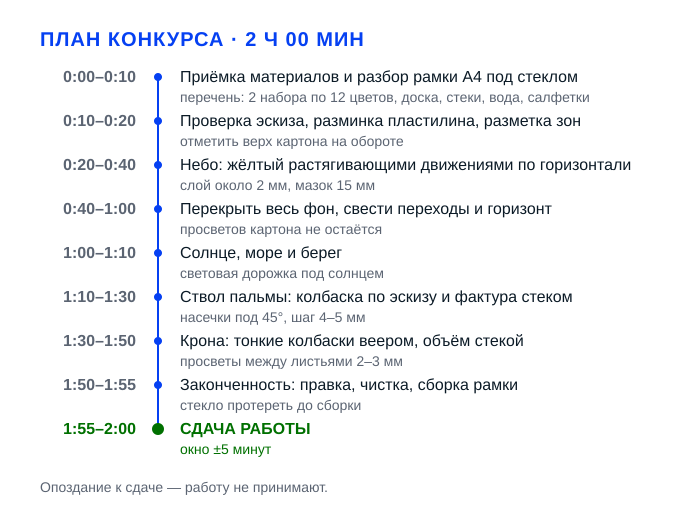
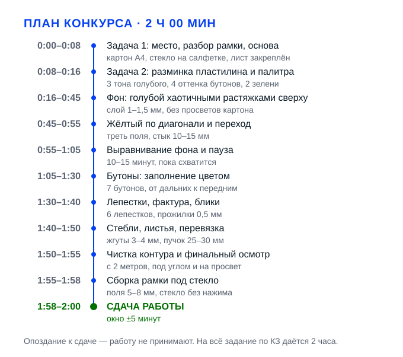
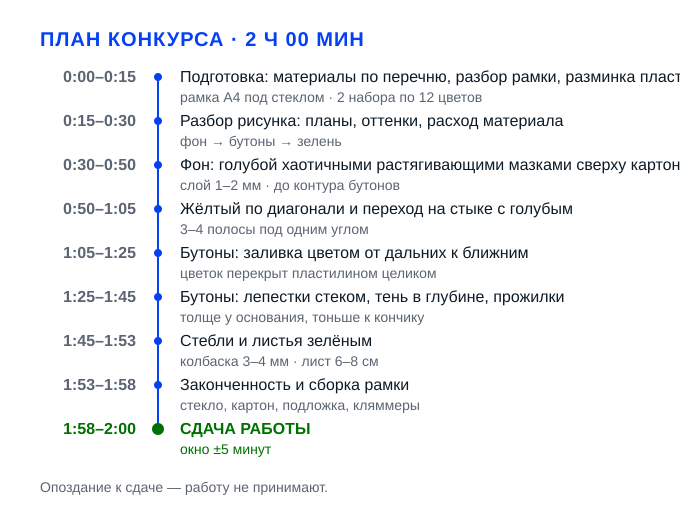

Рисование картин пластилином (ФВ)
Задания ниже — официальные файлы «Абилимпикс» (источник: abilympics-russia.ru), разложенные по категориям. Решения написаны по тексту задания, регламенту и критериям оценки; в них указано, что именно проверяет эксперт.
Школьник
14–16 лет, базовый уровень заданияВ официальном файле категории не разделены отдельными разделами — приводим задание целиком; различия по категориям смотрите в таблице модулей.
Пошаговое решение
Задание для школьников — одна картина из пластилина «Закат на море» на картоне формата А4, который потом вставляется в рамку под стекло. На всё даётся два часа, и работа идёт строго по порядку, заданному в конкурсном задании: разобрать рамку и достать лист с уже нанесённым рисунком пейзажа, размять пластилин, закрыть фон сверху растягивающими движениями по горизонтали жёлтым, повторяя движения, пока весь фон не будет перекрыт, затем слепить пальму — раскатать колбаску нужной длины и ширины, уложить её по эскизу и придать фактуру стволу, раскатать тонкие колбаски для листьев и разложить их по рисунку на верхушке, стекой придать листьям объём и в конце оформить работу в рамку. Материалы простые и перечислены в задании: два набора воскового пластилина по 12 цветов, доска для лепки, набор стеков, вода, бумажные и влажные салфетки. Оценивают не «красиво вообще», а конкретные вещи: соответствие эскизу, ровность и плотность нанесения, плавность цветовых переходов, читаемость силуэта пальмы, фактуру ствола и листьев, аккуратность поверхности и законченность — то есть оформление в рамку. Поэтому решение разложено по этапам с точными окнами времени: где-то важнее скорость, а где-то — минута терпения, которая спасает всю картину.

Задача 1. Организовать рабочее место и подготовить основуПодготовка · 0:00–0:20 из двух часов
На всё конкурсное задание даётся два часа, и первые двадцать минут уходят не на картину, а на то, чтобы картина вообще стала возможной: принять материалы по перечню, разобрать рамку и достать картон с уже нанесённым рисунком пейзажа, размять пластилин и разложить его так, чтобы рука тянулась к нужному цвету не глядя. Работа делается на горизонтальной поверхности небольшого формата — лист А4 под стеклом, то есть примерно 210 на 297 миллиметров, и на такой площади каждый лишний предмет на столе становится помехой. Поэтому подготовка идёт по жёсткому порядку: сначала проверка комплектности, потом основа, потом материал. Если этот порядок нарушить и начать мять пластилин раньше, чем разобрана рамка, вы потеряете десять минут на перекладывание липких кусков и первых же отпечатков на эскизе.
Действие 1.1. Принять материалы и разложить их по зонам
Шаг 1.1.1
Принимаем рабочее место по перечню задания, а не «на глаз»: рамка А4 под стеклом — одна штука, пластилин для лепки восковой, 12 цветов, — два набора, доска для лепки — одна, набор стеков — один, вода 0,5 литра — одна бутылка, салфетки бумажные маленькие и салфетки влажные маленькие — по одной упаковке. Каждую позицию называем вслух и кладём на стол отдельной кучкой, чтобы в конце сверки было видно, что ничего не пропущено. Два набора пластилина — это не запас «на всякий случай», а рабочий объём: на лист А4 при слое около двух миллиметров уходит много материала, и одного набора может не хватить на плотное перекрытие фона.
Сверка по перечню — единственный момент, когда недостающее можно получить: после старта замена идёт через экспертов и только при уважительной причине. Кроме того, в критериях оценки отдельно смотрят на организацию рабочего места и на то, работает ли участник с материалами из перечня, а не с тем, что принёс с собой. Два набора по 12 цветов дают возможность не экономить пластилин на фоне — а именно фон занимает больше половины площади картины и виден на ней первым.
Сверка закончена, когда все шесть позиций перечня лежат на столе и названы. Отдельно проверьте бруски: в наборе не должно быть заветренных, потрескавшихся или потерявших цвет кусков — такой пластилин крошится под пальцем и не тянется мазком. Если брусок ломается с хрустом, отложите его и возьмите другой цвет того же набора.
Самая частая ошибка — открыть один набор и начать работать, оставив второй в упаковке: к середине картины выясняется, что жёлтого и белого не хватает, а время на вскрытие второго набора и разминку новых брусков уходит из самого дорогого — фонового — этапа. Вторая ошибка — свалить всё в одну кучу и искать стек под пластилином.
Эксперт проходит по рабочим местам в первые минуты и отмечает, совпадает ли набор с перечнем и разложены ли материалы по местам, а не сгружены в центре стола.
Шаг 1.1.2
Стол делим на три зоны, и это деление не меняется до конца работы. По центру, чуть ближе к себе, — доска для лепки: на ней раскатываем колбаски и шарики. Слева от доски — лист картона с эскизом, его место не двигается вообще, потому что все мазки наносятся на него и любое смещение сбивает посадку руки. Справа — стеки, разложенные веером от большого к тонкому, и рядом бумажные салфетки. Влажные салфетки и бутылка с водой стоят чуть в стороне, чтобы капли не попали на картон: вода нужна для пальцев, а не для основы.
Зоны нужны потому, что пластилин липнет ко всему, к чему прикасается: стоит положить стек на картон — и на эскизе остаётся цветное пятно, которое потом придётся снимать и заново закрывать фоном. Порядок на столе прямо влияет на аккуратность работы, а аккуратность нанесения — один из главных критериев: картина оценивается как целое, и случайные мазки чужого цвета на небе читаются как небрежность.
Проверьте себя просто: сядьте, положите руки на стол и посмотрите, дотягиваетесь ли вы до стеков и салфеток не вставая и не поворачиваясь корпусом. Если приходится тянуться через картон — переставьте зоны сейчас, потом будет поздно. Картон должен лежать строго прямо, параллельно краю стола.
Ошибка — держать открытую бутылку с водой прямо над картоном: одно неловкое движение, и вода уходит под пластилин, фон начинает «плыть» и отслаиваться от основы. Вторая — класть использованные салфетки рядом с чистыми и потом вытирать пальцы о ту же салфетку, которая уже в нескольких цветах.
Эксперт смотрит на планировку места: есть ли отдельная доска, свободна ли зона вокруг картона и не лежат ли инструменты на работе. Отдельно он отмечает, не стоит ли на картоне открытая вода и лежат ли использованные салфетки отдельно от чистых.
Шаг 1.1.3
Садимся так, чтобы картон был не дальше сорока сантиметров от корпуса, а локоть рабочей руки свободно лежал на столе: при рисовании пластилином кисть почти всё время висит над листом, и без опоры локтя мазок идёт неровно. Свет должен падать слева или спереди, но не сзади и не от окна за спиной — иначе на глянцевом пластилине появляются блики, и вы не видите, где слой тоньше. Если лампа стоит справа и переставляет её нельзя, сядьте так, чтобы тень от руки не падала на место, которое вы сейчас закрываете.
Ровный мазок получается только при опоре и при взгляде сверху: пластилинография оценивается по поверхности, а поверхность видна лишь тогда, когда смотрите на неё под углом близким к прямому. Блик от лампы за спиной скрывает бугры и проплешины, из-за чего работа кажется ровной до момента, когда её поднимут и повернут к свету на столе экспертов.
Признак правильной посадки — вы видите всю площадь картона целиком, не наклоняясь, и ваша тень не закрывает ни одного участка, с которым работаете. Проверьте наклон листа: он должен лежать горизонтально; если картон лежит на стекле рамки или на книге под углом, мазок сползает вниз.
Типичная ошибка — работать стоя или положив картон на колени: мазки получаются короткими и рваными, а слой — разной толщины. Вторая — сесть спиной к окну: рука в тени, вы не контролируете край мазка, и граница между цветами получается грязной.
Эксперт оценивает, удобно ли организовано место и контролирует ли участник свою рабочую зону в процессе, а не только в начале. Ему также важно, видит ли участник поверхность под углом, а не смотрит на неё сбоку: от этого зависит контроль толщины слоя.
Действие 1.2. Разобрать рамку и проверить картон с эскизом
Шаг 1.2.1
Разбираем рамку на чистой части стола, подстелив бумажную салфетку: кладём её лицевой стороной вниз, отгибаем или откручиваем прижимные лапки по периметру — их обычно четыре или шесть, — снимаем задник и аккуратно вынимаем картон. Стекло берём за ребро двумя пальцами и сразу откладываем в сторону, подальше от пластилина; если в рамке есть паспарту, вынимаем и его. Все детали раскладываем в том порядке, в котором будем собирать обратно: рамка, стекло, паспарту, задник, лапки.
Рамка в этом задании — не упаковка, а часть готовой работы: картина сдаётся оформленной, и оформление входит в оценку законченности. Разбирать её нужно до начала лепки, потому что картон с эскизом лежит внутри, а собирать — в самом конце, когда пластилин уже нельзя трогать руками. Если разбирать в спешке в конце, лапки гнутся, стекло пачкается пальцами в пластилине, и работа выглядит неопрятно.
Разбор закончен, когда все пять деталей лежат отдельно и ни одна не потеряна. Проверьте стекло на просвет: на нём не должно быть трещин и сколов по кромке — с треснувшим стеклом работу не примут как оформленную. Лапки отложите в одну мисочку или на салфетку, чтобы не искать их по столу в конце.
Ошибка — вытряхнуть картон из рамки, не отогнув лапки: картон рвётся по краю, а край у работы открыт и виден. Вторая — положить стекло на стол плашмя рядом с доской: на него тут же попадает крошка пластилина, и оттереть её потом без разводов не выйдет.
Эксперт видит, как участник обращается с рамкой: аккуратный разбор и целое стекло — признак того, что работа будет сдана оформленной. Скол на стекле и погнутые лапки он тоже замечает и учитывает при оценке оформления работы.
Шаг 1.2.2
Определяем лицевую сторону картона: на ней нанесён рисунок пейзажа, обратная сторона чистая, часто сероватая. Кладём картон рисунком вверх и находим верх — на эскизе это небо, оно занимает примерно верхнюю половину листа, а линия горизонта проходит чуть ниже середины. Карандашом на обратной стороне, у самого края, ставим маленькую стрелку вверх и коротко пишем «верх»: через час, когда картина будет закрыта пластилином, вы уже не сможете определить, где у неё верх, а ошибка на 180 градусов обнулит всю композицию.
Пейзаж «Закат на море» строится на вертикали: небо сверху, вода ниже, и вся логика заката — в направлении света. Задание прямо говорит начинать с фона сверху картона, то есть с неба, и растягивать жёлтый по горизонтали. Если лист окажется перевёрнутым, жёлтый ляжет на воду, горизонт уедет, и работа перестанет читаться, как бы аккуратно она ни была выполнена.
Проверьте три вещи: рисунок на лицевой стороне, стрелка «верх» на обороте и совпадение эскиза с тем, что вы видите на фотографии задания. Линия горизонта должна идти параллельно нижнему краю — приложите линейку или край салфетки, чтобы убедиться, что картон лежит ровно, а не повёрнут на несколько градусов.
Самая дорогая ошибка — начать наносить фон, не отметив верх: через сорок минут становится непонятно, где небо, и участник либо бросает работу, либо переворачивает её, теряя уже сделанное. Вторая — положить картон лицевой стороной на доску для лепки и стереть часть контура, пока раскатываете колбаски.
Эксперт на промежуточном осмотре сверяет ориентацию работы с эскизом — перевёрнутый лист виден сразу по линии горизонта. Если лист перевёрнут, разговор идёт короткий: исправлять ориентацию после начала лепки уже нельзя, придётся переделывать фон.
Шаг 1.2.3
Читаем эскиз как карту, а не как картинку: обводим взглядом контур и называем вслух все зоны, которые придётся закрыть. На школьном задании это небо с диском солнца, полоса моря, узкая полоса берега и силуэт пальмы — ствол и листья на верхушке. Пальцем, не нажимая, проходим по границам зон и запоминаем, где какая: граница неба и воды должна быть ровной горизонтальной линией, а ствол пальмы — наклонной, с расширением внизу.
Пластилин ложится поверх контура и закрывает его навсегда: после первого мазка ориентироваться можно только по памяти и по краю листа. Поэтому зоны размечаются до начала работы, а порядок их закрытия выстраивается от дальнего плана к переднему — иначе при нанесении неба вы заедете на уже готовую пальму и размажете её.
Проверка простая: закройте глаза и перечислите зоны снизу вверх и сверху вниз. Если сбиваетесь — пройдите по контуру ещё раз. Отдельно отметьте, где контур самый тонкий: там понадобится колбаска меньшего диаметра, и её лучше раскатать заранее.
Ошибка — считать, что эскиз «и так видно» и начинать с любого места: к моменту, когда дойдёте до пальмы, выясняется, что её верхушка уже залеплена небом. Вторая — размечать контур ручкой или фломастером: чернила проступают сквозь тонкий слой пластилина и портят цвет.
Эксперт на первом просмотре спрашивает, с чего участник начнёт, и по ответу видит, понимает ли он строение пейзажа. Умение назвать зоны пейзажа и их порядок он проверяет вопросом «с чего начнёте и почему именно с этого».
Действие 1.3. Размять пластилин и разложить его по цветовым группам
Шаг 1.3.1
Берём по одному бруску тех цветов, которые понадобятся в первую очередь: жёлтый, оранжевый, красный, белый — для неба и солнца, синий и голубой — для моря, зелёный и коричневый — для пальмы. Каждый брусок мнём в ладонях две-три минуты, пока он не станет тёплым и мягким, как размятая глина: сначала сжимаем в кулаке, потом растираем между ладонями круговыми движениями, потом разминаем большими пальцами, разрывая и складывая кусок несколько раз. Готовый пластилин тянется, а не рвётся, и держит форму шарика, если его скатать.
Восковой пластилин из набора твёрдый в холодном виде, и неразмятый кусок не тянется мазком: он ложится комками, оставляет бугры, и разровнять их потом почти невозможно — при разглаживании он смазывается вместе с соседним цветом. Разминка — это не формальность, а условие ровного тонкого слоя, а ровный слой поверхности и есть то, по чему оценивают аккуратность работы.
Признак готовности: брусок гнётся, а не ломается, при растягивании образует длинную тонкую нить, на ощупь тёплый, руки почти не пачкает. Если пластилин крошится при сжатии — он старый, попробуйте добавить каплю воды с пальца и размять ещё минуту; если и после этого крошится, берите другой брусок того же цвета.
Типичная ошибка — размять один брусок и считать, что остальные «такие же»: каждый цвет из набора имеет свою жёсткость, и белый часто твёрже жёлтого. Вторая — греть пластилин над лампой или в руках слишком долго: перегретый становится липким, тянется за пальцем и пачкает соседние участки работы.
Эксперт обращает внимание, работает ли участник с подготовленным материалом: комки и бугры на поверхности видны сразу и снижают оценку аккуратности. Отдельно фиксируется, размят ли пластилин всех нужных цветов, а не только первых двух-трёх, которые пошли в работу.
Шаг 1.3.2
Размятый пластилин раскладываем по цветовым группам, а не в общую кучу: жёлтый, оранжевый и красный — в один ряд, это небо и солнце; синий, голубой, белый — во второй, это море и блики; зелёный и коричневый — в третий, это пальма; отдельно небольшой кусок тёмного для фактуры ствола. Из каждого куска сразу скатываем шарики размером с горошину — около пяти-семи миллиметров: именно такими порциями удобно брать материал для мазка, и руки остаются чистыми, потому что вы не отщипываете от большого куска каждый раз.
Скатанные шарики — это заготовки для двух приёмов, описанных в задании: мазка указательным пальцем и рисунка шариками. Когда материал разложен по цвету и размеру, вы не тратите время на отщипывание и не смешиваете цвета пальцами, а именно смешение и даёт грязный, «забитый» оттенок на границе неба и моря, который на закате особенно заметен.
Проверьте раскладку перед первым мазком: каждой группы цветов хватает на свою зону, шарики одинакового размера, на столе нет раздавленных кусков, прилипших к картону. Если шарики получились разными — не страшно, но крупные отложите для ствола, мелкие оставьте для фона.
Ошибка — держать все цвета одной лепёшкой: жёлтый и красный слипаются, и на небе появляется грязно-оранжевая полоса, которой в эскизе нет. Вторая — катать шарики на картоне вместо доски: на листе остаются жирные пятна, и пластилин потом не прилипает к этим местам.
Эксперт смотрит на порядок в материалах: аккуратно разложенные по цвету заготовки позволяют работать быстро, и это видно по темпу. Крошки разных цветов, смешанные в один комок, он считает признаком спешки и снижает за них оценку аккуратности.
Шаг 1.3.3
Готовим воду и салфетки к работе: наливаем немного воды в крышку или ставим бутылку так, чтобы можно было смочить подушечку пальца, не отрывая второй руки от картона. Бумажные салфетки кладём стопкой справа, влажную салфетку достаём одну и держим рядом — ею вытираем пальцы при переходе с цвета на цвет. Проверяем приём на черновом уголке: смачиваем палец, берём шарик и размазываем его по краю доски — мазок должен идти гладко, без скатывания пластилина в катышки.
Вода в перечне стоит не случайно: чуть влажный палец разглаживает пластилин и не даёт ему липнуть к коже, поэтому мазок получается длинным и ровным, а на поверхности не остаётся отпечатков папиллярных линий. Сухой палец тянет пластилин за собой, слой рвётся, и на небе появляются полосы, которые приходится перекрывать заново — а каждая переделка на фоне отнимает время у пальмы, где его и так мало.
Проверка: палец влажный, но с него не капает; на доске после пробного мазка нет катышков и крошки; салфетка для вытирания лежит отдельно от чистой. Если пластилин всё равно липнет — воды много, вытрите палец насухо и попробуйте снова.
Ошибка — мочить всю ладонь: вода стекает на картон, и пластилин на этом участке перестаёт держаться. Вторая — вытирать пальцы о влажную салфетку после каждого мазка и работать по мокрому: мазок разъезжается, цвет бледнеет.
Эксперт отмечает культуру работы с материалом: чистые руки, отсутствие катышков и разводов на работе — часть оценки аккуратности. Смоченный палец и влажная салфетка рядом с работой для него — признак отработанного приёма, а не случайности.
Задача 2. Закрыть фон: небо, солнце и мореФон · 0:20–1:10 из двух часов
Фон — самая большая часть картины и самая ответственная: он занимает больше половины листа, и именно по нему зритель и эксперт сначала видят, ровная работа или нет. Задание описывает этот этап буквально двумя движениями: начинать сверху и наносить жёлтый растягивающими движениями по горизонтали, повторяя их, пока весь фон не будет перекрыт пластилином. Простое описание скрывает главную сложность: горизонтальный мазок должен ложиться в одном направлении, слой — быть около двух миллиметров, а границы между цветами — переходить одна в другую без грязной полосы. На закате это особенно важно: небо идёт от жёлтого у горизонта к оранжевому и красному выше, море повторяет эти цвета отражением, и вся работа держится на плавности перехода. Пятьдесят минут на фон — это ровно столько, сколько нужно, чтобы закрыть лист плотно и не торопясь свести стыки.
Действие 2.1. Разметить зоны фона по эскизу
Шаг 2.1.1
Намечаем границы зон, пока контур ещё виден: линию горизонта, диск солнца, полосу моря и полосу берега. Делаем это не карандашом, а самым светлым пластилином — крошечными шариками размером два-три миллиметра, прижатыми к картону по краю будущих пятен: один шарик у левого края горизонта, один у правого, один у основания ствола пальмы. Такие маячки не портят эскиз, легко снимаются ногтем и остаются видны даже тогда, когда вокруг уже лежит пластилин.
Контур на картоне закроется первым же мазком, и дальше ориентироваться можно только по краю листа и по своим меткам. Маячки из светлого пластилина решают эту задачу: линия горизонта, проведённая по двум точкам, остаётся ровной, а ровная горизонталь на картине с морем — первое, что бросается в глаза при сравнении с эскизом. Без маячков горизонт почти всегда «уезжает» на десять-пятнадцать градусов, и это видно даже неспециалисту.
Проверка: приложите край салфетки или линейку к двум маячкам горизонта — она должна идти параллельно нижнему краю картона. Расстояние от верхнего края до горизонта и от горизонта до нижнего края сверьте с эскизом на глаз, но обязательно сверьте: если горизонт ушёл выше середины, неба останется мало и закат не прочитается.
Ошибка — размечать зоны шариками тёмного цвета: они потом просвечивают сквозь светлое небо и остаются на картине как грязные точки. Вторая — не размечать вообще, полагаясь на память: к моменту, когда закрашено две трети фона, линия горизонта уже потеряна.
Эксперт на промежуточном просмотре проверяет, держится ли горизонт параллельно краю, — это первое, что видно на расстоянии. Он также смотрит, размечены ли зоны до начала лепки, а не расставлены ли точки уже по готовому фону.
Шаг 2.1.2
Определяем порядок закрытия фона и запоминаем его: сначала верхняя треть неба, потом средняя часть с переходом к солнцу, потом нижняя часть неба у горизонта, и только после этого море и берег. Внутри каждой полосы работаем слева направо, потому что правая рука при таком движении не задевает уже готовый участок. Если вы левша — зеркально, справа налево, и это не формальность: движение «от готового к пустому» экономит десятки поправок.
Пластилин не сохнет, но он пачкается: любое касание ладонью оставляет на готовом участке смазанный след и уносит цвет на пальцах. Порядок «сверху вниз, от края к краю» даёт возможность опираться на чистый картон снизу и не заходить рукой на уже сделанное. Кроме того, задание прямо предписывает начинать с фона сверху, и нарушение этой последовательности приводит к тому, что нижние слои оказываются под верхними и размазываются.
Проверка: перед первым мазком проговорите порядок и убедитесь, что ни один участок не останется в окружении готовых. Если такой участок есть — поменяйте порядок сейчас, пока не начали: перекрывать пластилином пластилин, заходя на готовое, придётся с нажимом, и слой в этом месте станет толще.
Ошибка — начать с середины листа: рука тянется через пустое небо и оставляет на нём полосы от запястья. Вторая — идти снизу вверх, против задания: у горизонта пластилин будет наезжать на уже разглаженный слой и поднимать его край.
Эксперт смотрит на последовательность: работа, начатая сверху, к середине конкурса выглядит цельной, а начатая с середины — пятнами. Порядок обхода он сверяет с заданием: фон начинается сверху, а не с середины или с нижнего края листа.
Действие 2.2. Нанести жёлтый сверху растягивающими движениями
Шаг 2.2.1
Берём шарик жёлтого пластилина размером с горошину и кладём его у самого верхнего края картона, отступив от кромки два-три миллиметра. Прижимаем подушечкой указательного пальца и тянем вниз-вправо коротким движением длиной около пятнадцати миллиметров, с нажимом в начале и почти без нажима в конце, чтобы мазок истончался к краю. Возвращаем палец и ведём следующий мазок вплотную к первому, с тем же наклоном и той же длиной, и так проходим всю верхнюю полосу слева направо.
Задание описывает именно растягивающие движения по горизонтали, и это не произвольный выбор: горизонтальный мазок совпадает с направлением неба на закате и читается как воздух, а вертикальный или хаотичный превращает небо в месиво. Кроме того, мазки, идущие в одном направлении, стыкуются между собой без швов: каждый следующий ложится на край предыдущего и подхватывает его, поэтому поверхность получается гладкой без дополнительного разглаживания.
Проверка: посмотрите на полосу под углом к свету. Все мазки должны идти в одну сторону, между ними не должно быть просветов картона, а край полосы — быть ровным, без зубцов. Если палец оставляет борозды, значит нажим слишком сильный: мазок должен размазывать, а не вдавливать пластилин в картон.
Ошибка — набирать на палец слишком много пластилина: первый мазок получается толстым, а к концу полосы материала не хватает, и появляются проплешины. Вторая — вести мазки в разные стороны «для живости»: на небе это выглядит как грязь, а не как фактура.
Эксперт на первом просмотре оценивает направление и плотность мазков: ровный горизонтальный ряд виден даже на расстоянии двух метров. Длина и наклон мазков должны быть одинаковыми: по ним видно, работает участник ритмично или ведёт пальцем наугад.
Шаг 2.2.2
Продолжаем тем же движением, пока не закроем жёлтым всю верхнюю треть листа, и следим за количеством материала: шарик размером с горошину закрывает полосу примерно десять на три сантиметра при слое около двух миллиметров. Когда жёлтого на полосе становится мало, не растягиваем остатки, а берём новый шарик и кладём его в начало следующего ряда — так слой остаётся одинаковым по всей площади, а не истончается к середине.
Ровная толщина слоя — это не эстетика, а техника: там, где пластилина меньше двух миллиметров, просвечивает картон, и цвет кажется бледным и серым; там, где больше четырёх, слой начинает «ползти» и при наклоне работы сползает вниз, оставляя на стекле жирные следы. Одинаковая толщина позволяет потом перекрыть жёлтое оранжевым без бугра на стыке.
Проверка: проведите по готовой полосе тыльной стороной ногтя — она должна быть гладкой, без ступенек. Посмотрите на картон с изнанки: если с обратной стороны видны тёмные пятна, слой где-то слишком толстый, и это место надо разровнять и растянуть на соседний участок.
Ошибка — экономить пластилин и растягивать один шарик на пол-листа: слой становится тоньше бумаги, и картон просвечивает рыжими пятнами. Вторая — добирать материал, отщипывая от разложенных шариков других цветов: на жёлтом появляются оранжевые и белые крошки.
Эксперт смотрит на просвет и на изнанку: равномерность слоя видна и с лицевой, и с обратной стороны картона. Отдельно он отмечает, не растянут ли один шарик на пол-листа: это видно по бледным и серым участкам неба.
Шаг 2.2.3
Сразу за жёлтым, не давая полосе остыть и подсохнуть, вводим оранжевый: берём шарик оранжевого, кладём его на границу с жёлтым и тянем мазок так, чтобы он захватил край жёлтого слоя и увёл его вверх, к более тёмному небу. Движение то же — горизонтальное, нажим тот же, но начинаем каждый мазок чуть выше предыдущего, чтобы получился плавный переход от светлого у горизонта к более насыщенному вверху.
Закатное небо держится на переходе цвета, и переход делается не смешиванием в ладонях, а растягиванием одного цвета в другой прямо на основе: так сохраняется чистота оттенка и появляется та самая плавность, которую видно на эталоне. Если положить оранжевый отдельной полосой с резкой границей, небо станет полосатым, и картина потеряет глубину, а вместе с ней — оценку за соответствие эскизу.
Проверка: отойдите на полтора метра и прищурьтесь. Граница между жёлтым и оранжевым не должна читаться как линия — она должна выглядеть как размытая полоса шириной два-три сантиметра. Если линия видна, пройдите по ней пальцем ещё раз поперёк, короткими движениями, смачивая палец.
Ошибка — смешать жёлтый с оранжевым в руках до однородного цвета: получается плоский грязноватый оттенок, и небо теряет глубину. Вторая — наносить оранжевый на уже полностью разглаженный жёлтый, не захватывая его край: цвета ложатся друг на друга слоями и потом отслаиваются.
Эксперт оценивает переходы цвета на небе отдельно: плавность растяжки — прямой признак владения техникой. Он смотрит на небо прищуренными глазами: цвета не должны читаться как отдельные ленты с резкими краями.
Действие 2.3. Перекрыть фон целиком и свести стыки
Шаг 2.3.1
Закрываем оставшуюся часть неба: от оранжевой полосы вверх идём красным, захватывая самый верх листа, а ближе к диску солнца оставляем место под белый и светло-жёлтый. Работаем теми же горизонтальными мазками, слева направо, и на каждом ряду чуть захватываем предыдущий, чтобы не оставить ни одной полоски чистого картона. Верхний край листа закрываем особенно тщательно — он открыт и будет виден в рамке рядом со стеклом.
Задание требует повторять движения, пока весь фон не будет перекрыт пластилином, и это ключевая фраза: неперекрытый участок картона читается как незаконченная работа, даже если всё остальное сделано идеально. Верхняя кромка важна отдельно: в рамке она остаётся открытой, ничем не прикрыта, и любой просвет на ней заметен как белая полоска.
Проверка: поднимите картон на уровень глаз и посмотрите на просвет. Просветов быть не должно нигде — ни у кромок, ни между мазками. Пройдите пальцем по периметру: если чувствуется ступенька от картона, значит у самого края слой не дотянут, и его надо растянуть к кромке.
Ошибка — оставить светлые проплешины «их потом закроет рамка»: рамка закрывает не больше трёх-четырёх миллиметров, а паспарту на этой работе нет, так что просвет останется виден. Вторая — наносить верх неба в спешке, перед тем как перейти к морю: там слой самый тонкий и самый заметный.
Эксперт проверяет фон на просвет и по периметру: незакрытый картон — одна из самых частых причин снижения оценки за законченность. Он также проверяет верхнюю кромку: в рамке она остаётся открытой и видна рядом со стеклом.
Шаг 2.3.2
Разглаживаем фон большим пальцем или подушечкой указательного, двигаясь поперёк мазков, короткими движениями по два-три сантиметра, с очень лёгким нажимом. Цель — убрать борозды от пальца и выровнять поверхность, но не стереть направление мазка: фактура на небе должна остаться, поэтому разглаживаем не до гладкого блина, а до состояния «рябь». Влажный палец здесь работает лучше сухого — он не тянет пластилин за собой.
Разглаживание поперёк мазков делает две вещи: убирает случайные бугры, которые дают некрасивые блики, и одновременно прижимает пластилин к картону, чтобы он не отслаивался при оформлении. При этом важно не переусердствовать: полностью разглаженное небо выглядит как крашеная поверхность и теряет живописность, за которую в этой компетенции и дают баллы.
Проверка: проведите по фону ладонью — она должна скользить, не цепляясь, но поверхность должна оставаться шероховатой на ощупь. Посмотрите под углом: должны быть видны мягкие горизонтальные полосы, а не отдельные глубокие борозды и не бугры размером с горошину.
Ошибка — разглаживать сухим пальцем с сильным нажимом: пластилин прилипает и отрывается кусками, оставляя на небе пятна картона. Вторая — разглаживать в одном направлении с мазками: борозды только углубляются.
Эксперт смотрит на поверхность при боковом свете: бугры и проплешины видны именно так, и это отдельный критерий аккуратности. Слишком разглаженный фон, потерявший направление мазка, он тоже отмечает: живописность поверхности пропадает.
Шаг 2.3.3
Сводим стыки между небом и будущим морем: по линии горизонта прокладываем тонкую колбаску белого или светло-жёлтого пластилина диаметром три-четыре миллиметра и размазываем её поперёк линии так, чтобы она закрыла границу и слегка зашла и на небо, и на нижнюю зону. Линия горизонта должна остаться видимой как граница цвета, но не как шов между двумя кусками пластилина.
Именно на горизонте чаще всего появляется самая заметная ошибка фона — тёмная или светлая полоса-шов, где встречаются два слоя разной толщины. Светлая прокладка по линии горизонта решает две задачи: она даёт закату тот самый светящийся край, который виден на эталоне, и физически перекрывает стык, не давая слоям разойтись.
Проверка: линия горизонта должна быть ровной и параллельной краю, шов не должен читаться как валик. Проведите пальцем вдоль горизонта: если чувствуется бугор, разгладьте его поперёк, растягивая в обе стороны.
Ошибка — оставить на горизонте полосу картона между небом и морем: она выглядит как белая линия и разрушает пейзаж. Вторая — сделать прокладку слишком толстой: на картине появляется светлый валик, который читается как ошибка, а не как свет.
Эксперт проверяет горизонт отдельно: он должен быть ровным, а переход цвета на нём — мягким. Валик на горизонте и светлая полоса картона оцениваются как ошибка техники, а не как художественная деталь.
Действие 2.4. Сделать солнце, море и берег
Шаг 2.4.1
Делаем диск солнца: скатываем шарик белого пластилина размером с вишню, прижимаем его к картону в намеченной точке и расплющиваем подушечкой пальца в лепёшку диаметром около двух сантиметров, ровную по толщине. Вокруг него укладываем кольцо светло-жёлтого и размазываем его наружу короткими мазками по кругу, чтобы солнце «светилось» и не имело резкой границы. Место солнца сверяем с эскизом: на закате оно стоит низко, у самой линии горизонта.
Солнце — смысловой центр заката, и на него смотрят первым. Резкий белый кружок с чётким краем читается как наклейка, а размытое кольцо вокруг него даёт ощущение света и заодно маскирует место стыка с фоном. Низкое положение диска важно потому, что оно задаёт направление отражения на воде, а отражение — главный признак того, что перед нами море, а не поле.
Проверка: диск должен быть круглым, а не овальным, и лежать на одной высоте с линией горизонта или чуть выше неё. Посмотрите на работу прищуренными глазами: солнце должно читаться как самое светлое пятно на картине.
Ошибка — сделать солнце слишком высоко, в середине неба: тогда закат превращается в день, а отражение на воде оказывается не под солнцем. Вторая — прижать шарик с нажимом и получить тонкое пятно, сквозь которое просвечивает картон.
Эксперт сверяет положение солнца с эскизом и оценивает, читается ли световое пятно. Отдельно он смотрит, на одной ли высоте солнце и линия горизонта: смещение ломает всю логику заката и отражения.
Шаг 2.4.2
Переходим к морю: ниже линии горизонта наносим синий и голубой пластилин горизонтальными мазками, такими же растягивающими движениями, как на небе, но чуть короче — десять-двенадцать миллиметров. У горизонта цвет светлее, к нижнему краю темнее, поэтому начинаем со светло-голубого и постепенно вводим синий. Прямо под солнцем оставляем светлую дорожку шириной два-три сантиметра и закрашиваем её жёлтым и белым, растягивая вниз.
Море на закате — это отражение неба, и держится оно на двух вещах: горизонтальном направлении мазков и световой дорожке под солнцем. Дорожка сразу объясняет зрителю, где источник света и что перед ним вода, а не земля. Если её не сделать, море становится просто синей полосой, и картина теряет глубину — за это снижают оценку за соответствие эскизу.
Проверка: мазки на море идут горизонтально и параллельно горизонту, дорожка под солнцем читается как светлая полоса, расширяющаяся книзу. Посмотрите на стык моря и неба: цвета должны различаться, но не спорить по яркости.
Ошибка — наносить море вертикальными мазками: вода выглядит как трава или дождь. Вторая — сделать дорожку слишком яркой и ровной, как столб: она должна расширяться и расплываться к нижнему краю. Третья ошибка — не оставить светлую дорожку под солнцем: тогда свет на воде не читается вовсе, и море выглядит просто синей полосой.
Эксперт оценивает, читается ли вода: горизонтальность мазков и отражение солнца — главные признаки. Он сравнивает направление мазков на воде с направлением на небе: они должны идти одинаково, иначе море спорит с небом.
Шаг 2.4.3
Заканчиваем фон берегом: узкую полосу у нижнего края листа закрываем коричневым или тёмно-жёлтым пластилином, размазывая его короткими мазками по горизонтали, и слегка растягиваем край в море, чтобы получилась не прямоугольная, а мягкая граница прибоя. Полосу делаем шириной один-два сантиметра — она не должна занимать много места, её задача обозначить передний план и дать опору стволу пальмы.
Берег замыкает композицию снизу и одновременно служит основанием для пальмы: ствол должен во что-то упираться, иначе он висит в воздухе. Кроме того, тёмная полоса внизу держит всю картину — без неё светлое небо и светлое море сливаются и работа выглядит незавершённой по тону, а тональная целостность входит в оценку.
Проверка: полоса берега идёт по нижнему краю, её верхняя граница мягкая, а не проведена линейкой. В месте, где будет стоять пальма, слой должен быть плотным и чуть толще — туда потом встанет ствол. Если полоса берега получилась шире двух сантиметров, её надо частично перекрыть морем, иначе берег съест передний план.
Ошибка — сделать берег широким и плоским: он съедает море, и картина становится похожа на пляж без воды. Вторая — не оставить утолщения под пальмой: ствол ляжет на тонкий слой и продавит его до картона.
Эксперт проверяет, закрыт ли весь фон и есть ли тональная опора внизу. Он смотрит, есть ли под пальмой утолщение слоя: на нём проверяется прочность всей кроны при осмотре работы.
Шаг 2.4.4
Осматриваем готовый фон целиком, прежде чем переходить к пальме: отходим на полтора-два метра, смотрим прищуренными глазами на пятна и проверяем, читается ли пейзаж — светлое небо, тёмная полоса воды, узкий берег. Затем проверяем поверхность ладонью и под углом к свету: бугры, борозды, проплешины. Найденные дефекты исправляем сразу, пока сверху ничего не лежит: позже любая правка фона будет задевать уже готовые детали.
Фон — основание всей работы: пальма ляжет поверх него, и после этого переделать небо или море, не разрушив силуэт, уже не получится. Пять минут осмотра здесь экономят двадцать минут переделок в конце, когда время ограничено двумя часами, а впереди ещё ствол, листья и рамка.
Проверка считается пройденной, если выполнены четыре условия: картон не просвечивает нигде, горизонт ровный, мазки на небе и на воде идут горизонтально, солнце и дорожка под ним на месте. Всё остальное — косметика, её можно поправить по ходу.
Ошибка — пропустить осмотр и сразу начать пальму: дефект на фоне обнаруживается только при оформлении, когда исправлять его уже нельзя без риска испортить силуэт. Вторая — править фон, уже положив ствол: палец задевает колбаску и сдвигает её.
Эксперт на промежуточном просмотре фиксирует, закрыт ли фон полностью и ровно ли он выполнен, — это база для остальных баллов. Он смотрит работу с расстояния и при боковом свете: так видны и общий тон картины, и бугры на поверхности.
Задача 3. Слепить ствол пальмыСтвол · 1:10–1:30 из двух часов
Пальма в этой картине — единственный объект переднего плана, и вся её выразительность держится на стволе. Задание описывает работу коротко: раскатывающими движениями сформировать колбаску нужной длины и ширины, разместить её на работе согласно эскизу, после чего придать фактуру стволу. За этими тремя фразами стоит самое сложное в лепке из пластилина — сделать ровную, равномерно сужающуюся колбаску и уложить её по наклонной, не растянув и не сплющив. Ствол должен быть толще внизу и тоньше вверху, слегка изогнутым, с поперечными насечками, которые и дают ощущение коры. Работаем на доске, а переносим на картон уже готовую колбаску — если раскатывать прямо на картине, фон под ней продавится и потемнеет.
Действие 3.1. Раскатать колбаску нужной длины и толщины
Шаг 3.1.1
Берём размятый коричневый пластилин и отделяем кусок размером примерно с грецкий орех — этого хватает на ствол длиной около пятнадцати сантиметров при толщине восемь-десять миллиметров у основания. Кладём кусок на доску для лепки и сначала формируем из него короткую толстую «сардельку» ладонью, а потом начинаем раскатывать: накрываем ладонью и ведём вперёд-назад, постепенно разводя пальцы и ослабляя нажим к концам. Раскатываем двумя руками одновременно, чтобы колбаска не изгибалась сама по себе.
Длина ствола задана эскизом: на листе А4 пальма занимает примерно две трети высоты, то есть около пятнадцати сантиметров от берега до верхушки. Если раскатать короче, придётся дотягивать ствол на картоне растягиванием — а растянутая колбаска теряет равномерность и становится плоской в середине. Если длиннее — обрезать, и на срезе будет видно, что ствол составной.
Проверка: положите колбаску на доску рядом с эскизом и прикиньте длину от основания до верхушки. Она должна быть ровной, без утолщений и перехватов, при подъёме за середину не провисать дугой. Толщина на концах должна различаться не более чем в полтора раза.
Ошибка — раскатывать одной ладонью с сильным нажимом: колбаска получается с утолщением посередине, как веретено. Вторая — катать на картоне: пластилин прилипает к фону, и снять его без следа уже не получится.
Эксперт смотрит на пропорции ствола относительно эскиза и на равномерность толщины — «верёвочный» ствол виден сразу. Отдельно он отмечает, раскатана колбаска на доске или прямо на картоне: следы на фоне вокруг ствола видны сразу.
Шаг 3.1.2
Придаём стволу сужение к верхушке: кладём колбаску на доску и прокатываем только один её конец — последние три-четыре сантиметра, — постепенно ослабляя нажим, пока толщина не уменьшится примерно до пяти миллиметров. Затем слегка изгибаем ствол: держим колбаску двумя руками за концы и осторожно сдвигаем их в одну сторону, чтобы получилась плавная дуга с прогибом в две-три ширины ствола. Изгиб делаем на доске, а не в воздухе.
Пальма не растёт идеально прямым столбом, и на эскизе у неё есть наклон: если ствол ляжет строго вертикально, он будет выглядеть как столб или фонарный столб, а не как дерево. Сужение к верхушке тоже обязательно: одинаковая толщина по всей длине читается как черенок. Эти две вещи — изгиб и сужение — то, что отличает рисунок дерева от палки, и эксперт смотрит на них в первую очередь.
Проверка: поставьте колбаску вертикально на доску, придерживая за верх. Она должна стоять с наклоном, верхушка — уходить в сторону на два-три сантиметра от основания, а сама колбаска — не заваливаться. Если падает — изгиб слишком сильный или низ перекручен.
Ошибка — согнуть колбаску резко, с изломом: в месте излома пластилин побелеет и начнёт трескаться, а на картине появится залом. Вторая — сделать верхушку слишком тонкой: при укладке листьев она не выдержит веса и прогнётся.
Эксперт оценивает силуэт: наклон, сужение и плавность изгиба — по ним видно, лепили дерево или палку. Залом на изгибе он находит безошибочно: пластилин в этом месте белеет, и на картине остаётся трещина.
Шаг 3.1.3
Перед переносом на картон примеряем колбаску на месте, не прижимая: кладём её поверх фона по линии эскиза, совмещаем низ с полосой берега и смотрим, куда попадает верхушка. Если верхушка не доходит до намеченной точки на два-три сантиметра — колбаску надо удлинить, докатав её; если заходит выше — укоротить, аккуратно отрезав стеком и закруглив срез пальцем. Примерку делаем дважды: сначала на глаз, потом приложив к картону только кончики.
Примерка нужна потому, что пластилин при прижатии почти не сдвигается: как только колбаска прилипла к фону, попытка подвинуть её тянет за собой слой неба, и на картине остаётся смазанный след. Две-три примерки занимают меньше минуты, а переделка приклеенного ствола — это уже ремонт фона, на который уходит десять-пятнадцать минут из двух часов.
Проверка: при примерке колбаска лежит точно по контуру ствола на эскизе, низ уходит в полосу берега на пять-семь миллиметров, верхушка совпадает с точкой, откуда будут расходиться листья. Расстояние от ствола до края листа сверьте с эскизом.
Ошибка — сразу прижать колбаску и потом двигать: фон под ней смазывается, и вокруг ствола появляется грязное пятно. Вторая — не заглубить низ в берег: ствол стоит на границе воды и песка и кажется висящим.
Эксперт на промежуточном просмотре сверяет положение ствола с эскизом и смотрит, не повреждён ли фон вокруг. Он смотрит, примерял ли участник ствол перед прижатием: смазанный фон вокруг детали — верный признак спешки.
Действие 3.2. Уложить ствол по эскизу
Шаг 3.2.1
Прижимаем ствол к картону, начиная снизу: ставим низ колбаски в полосу берега и вдавливаем его подушечкой большого пальца, размазывая нижний конец в стороны, чтобы получилось утолщение-основание, как у настоящей пальмы. Дальше ведём палец вверх по стволу, прижимая его по всей длине с умеренным нажимом: колбаска должна сплющиться примерно на треть и прилипнуть к фону, но сохранить округлость сверху.
Ствол держится на картине только за счёт прилипания к фону, никакого клея здесь нет. Если прижать слабо, при оформлении в рамку — а рамку придётся переворачивать — ствол отвалится. Если прижать слишком сильно, он расплющится в ленту и потеряет объём, а объём и фактура — то, за что в этом задании дают баллы.
Проверка: проведите пальцем поперёк ствола — он не должен сдвигаться. Профиль ствола должен оставаться выпуклым: посмотрите на картон под углом, у ствола должна быть видна светотень, то есть одна сторона чуть выше другой.
Ошибка — прижать ствол ладонью целиком: он расплющивается и сливается с фоном по цвету, силуэт пропадает. Вторая — не размазать основание: низ колбаски остаётся обрубленным и виден как торец. Третья ошибка — не проверить, держится ли ствол: деталь отходит при первом же наклоне работы и при сборке рамки.
Эксперт проверяет, держится ли ствол и читается ли он как объёмная деталь, а не как нарисованная полоса. Он проверяет силуэт снизу вверх: у основания ствол должен переходить в берег, а не стоять обрубленным торцом.
Шаг 3.2.2
Выравниваем силуэт ствола по эскизу: если колбаска при прижатии ушла в сторону, подправляем её не сдвигом, а подкладыванием — отделяем маленький кусочек того же коричневого, прилепляем с нужной стороны и размазываем к стволу, наращивая силуэт. Лишнее срезаем стеком вдоль края и убираем с картона, а не смахиваем пальцем: срезанную полоску надо снять за кончик и убрать на доску.
Силуэт — это то, что сравнивают с эскизом при оценке соответствия заданию. Сдвигать уже прижатый ствол нельзя: он потянет за собой фон. Наращивание и срезание по краю — единственный способ поправить форму без потерь, и он же даёт возможность сделать ствол слегка неровным по краю, как у настоящего дерева, а не как у линейки.
Проверка: сравните силуэт с эскизом на расстоянии вытянутой руки — наклон, ширина у основания и у верхушки должны совпадать. Край ствола должен быть мягким, без резких ступенек от стека; если ступенька осталась, разгладьте её влажным пальцем.
Ошибка — срезать лишнее и оставить обрезки на картоне: они прилипают к фону и потом читаются как грязные пятна. Вторая — наращивать силуэт куском другого оттенка: ствол становится пятнистым. Третья ошибка — сдвигать уже прижатый ствол: он тянет за собой слой неба и оставляет смазанную полосу, которую видно издалека.
Эксперт сверяет силуэт с эскизом и смотрит на чистоту края. Ступеньки и рваный край он находит на ощупь, проводя пальцем вдоль силуэта, и отдельно смотрит на цвет: пятнистость видна сразу.
Шаг 3.2.3
Закрепляем верхушку: верхний конец ствола слегка расплющиваем и размазываем в небольшую площадку диаметром полтора-два сантиметра — это место, куда потом встанут листья. Площадку делаем не плоской лепёшкой, а с небольшим утолщением, чтобы листья легли на объём, а не на тонкий слой. Одновременно проверяем, что ствол не качается: верхушка не должна пружинить под пальцем.
Листья пальмы приклеиваются именно к верхушке, и если там тонкий слой, они лягут на голый фон и будут держаться только по краю — при первом же касании стеком отвалятся. Утолщение на верхушке — это своего рода фундамент для всей кроны, и его делают заранее, потому что потом, когда листья уже уложены, добраться до этого места невозможно.
Проверка: нажмите на верхушку пальцем — она не должна прогибаться до картона. Площадка должна быть шире ствола в этом месте примерно вдвое и иметь плавный переход к стволу, без ступеньки. Если площадка получилась уже ствола, листья некуда крепить, и её надо расширить до укладки кроны.
Ошибка — оставить верхушку тонкой и острой: листья приклеиваются к острию и висят, как на иголке. Вторая — сделать площадку слишком большой: на верхушке появляется коричневая клякса, которая видна между листьями.
Эксперт проверяет прочность кроны: поднимает работу и смотрит, не отходит ли верхушка. Он поднимает работу и слегка наклоняет её: несмонтированная верхушка отходит от фона и видна как отдельная деталь.
Действие 3.3. Придать стволу фактуру
Шаг 3.3.1
Берём стек с прямым концом и делаем на стволе поперечные насечки: ставим лезвие под углом примерно сорок пять градусов к оси ствола и с небольшим нажимом проводим короткую линию поперёк, длиной чуть меньше ширины ствола. Первую насечку делаем у основания, дальше поднимаемся вверх с шагом четыре-пять миллиметров, постепенно уменьшая длину насечки вместе с толщиной ствола. Ведём стек в одном направлении — сверху вниз или снизу вверх, но не как придётся.
Фактура — это прямое требование задания: «после размещения пальмы на пейзаже придайте фактуру стволу». Без насечек ствол остаётся гладкой колбаской и читается как палка, а с ними появляется кора и объём: каждая канавка даёт тень, и ствол начинает выглядеть круглым. Одинаковый наклон и шаг насечек важны потому, что разнобой читается как случайные царапины.
Проверка: посмотрите на ствол под углом к свету — насечки должны дать ритмичную тень по всей длине. Шаг между ними должен быть одинаковым, а глубина — такой, чтобы канавка была видна, но пластилин не прорезался до картона.
Ошибка — прорезать стеком до фона: в канавке появляется светлая полоса картона, и ствол выглядит разодранным. Вторая — делать насечки в разных направлениях: вместо коры получается сетка царапин. Третья ошибка — делать насечки одинаковой длины по всей высоте: у тонкой верхушки они выходят за край ствола.
Эксперт оценивает фактуру отдельно: ритм насечек и их глубина — главный признак владения стеком. Он смотрит на ствол под углом к свету: ритм теней от насечек должен читаться по всей длине, от основания до верхушки.
Шаг 3.3.2
Добавляем кольца-утолщения у основания и мелкие продольные бороздки: у самого низа, где ствол переходит в берег, стеком проводим две-три дуги поперёк, имитируя наплывы корней, а по самому стволу между поперечными насечками процарапываем одну-две короткие продольные линии длиной три-четыре миллиметра. Работаем кончиком стека, не надавливая на пластилин всей плоскостью лезвия.
Крупные поперечные насечки дают ритм, но ствол из одних полосок выглядит механическим. Продольные короткие бороздки и наплывы у основания добавляют ту неровность, по которой глаз узнаёт живое дерево, и одновременно маскируют стык ствола с полосой берега — самое уязвимое место композиции, где два слоя пластилина встречаются.
Проверка: основание ствола должно переходить в берег без видимого шва — проведите пальцем, ступеньки быть не должно. Продольные бороздки не должны пересекать поперечные насечки насквозь, иначе получается решётка.
Ошибка — царапать ствол хаотично, «для фактуры»: поверхность превращается в месиво, и объём пропадает. Вторая — оставить у основания ровную границу: ствол выглядит вставленным в песок, как столб. Третья ошибка — процарапывать бороздки плоскостью лезвия: пластилин срезается и остаётся стружкой, которая липнет к фону.
Эксперт смотрит на переход ствола в берег: естественность этого стыка отличает работу с опытом от работы новичка. Он проверяет стык ствола с берегом на ощупь: ступенька в этом месте выдаёт неуверенную руку и снижает оценку фактуры.
Шаг 3.3.3
Проходим по стволу влажным пальцем вдоль, но не поперёк: смачиваем подушечку, слегка касаемся насечек и сглаживаем только заусенцы по краям канавок, не заполняя сами канавки. Затем тем же приёмом поправляем силуэт: там, где край ствола получился рваным, аккуратно подтягиваем пластилин к линии эскиза. В конце проверяем, что на фоне вокруг ствола нет крошек и мазков коричневого.
Заусенцы по краям насечек приподнимаются и при оформлении под стекло прилипают к нему, оставляя на стекле грязные точки. Сглаживание вдоль, а не поперёк, сохраняет канавки: если вести палец поперёк, он их забивает, и фактура исчезает за полминуты. Чистота фона вокруг ствола важна потому, что коричневые крошки на голубом море видны издалека и читаются как небрежность.
Проверка: проведите по стволу тыльной стороной пальца — заусенцев не должно быть, а канавки должны остаться на ощупь. Посмотрите на воду вокруг ствола: она должна быть чистой, без коричневых точек и разводов.
Ошибка — разглаживать ствол поперёк: насечки заполняются, и вся работа по фактуре пропадает. Вторая — не убрать крошки с фона: они вдавливаются в пластилин и остаются на картине навсегда. Третья ошибка — сглаживать ствол сухим пальцем: пластилин прилипает и отрывается кусками, оставляя на стволе светлые пятна.
Эксперт проверяет ствол на ощупь и на свет: фактура должна читаться, а поверхность — быть чистой. Он проводит по стволу тыльной стороной пальца: заусенцы под стеклом превращаются в грязные точки, и это видно при осмотре.
Задача 4. Сделать листья пальмыКрона · 1:30–1:50 из двух часов
Крона — самая мелкая и самая заметная часть картины: шесть-восемь узких листьев, расходящихся веером от верхушки ствола. Задание описывает её двумя шагами: раскатать тонкие колбаски и разместить их в соответствии с рисунком на верхушке, а затем стекой придать листьям объём. Тонкая колбаска — самый неудобный элемент: она рвётся при раскатывании, прилипает к доске и ломается при переносе, поэтому делается по одной и сразу укладывается. Объём стеком — вторая половина дела: без борозды по центру листа и поперечных насечек листья остаются плоскими лентами, и крона выглядит как наклеенная. Двадцать минут на крону — это ровно столько, сколько нужно, если раскатывать заранее и не пытаться лепить все листья сразу.
Действие 4.1. Раскатать тонкие колбаски для листьев
Шаг 4.1.1
Отделяем от зелёного пластилина кусочек размером с небольшую вишню и разминаем его до мягкости. Раскатываем на доске, начиная с ладони и переходя к пальцам: сначала формируем короткую толстую колбаску, потом катаем её кончиками двух пальцев, разводя руки от середины к концам, пока она не станет толщиной четыре-пять миллиметров и длиной шесть-семь сантиметров. Второй конец прокатываем сильнее, чтобы лист сужался к кончику.
Толщина листа — четыре-пять миллиметров — это предел, при котором колбаска ещё держит форму и не рвётся при переносе. Более толстая читается как сосиска, более тонкая ломается в руках. Сужение к кончику обязательно: листья пальмы узкие и острые, и именно по этому признаку крона узнаётся; ровная по толщине колбаска превращает лист в червяка.
Проверка: положите колбаску на доску — она должна лежать ровно, не провисая, кончик должен быть заметно тоньше основания. Попробуйте поднять её за один конец: она может слегка согнуться, но не должна разорваться под собственным весом.
Ошибка — раскатывать с сильным нажимом: колбаска сплющивается в ленту и прилипает к доске. Вторая — делать все листья одинаковой длины: крона получается симметричной, как зонт, и теряет живость. Третья ошибка — катать колбаску на липкой доске: она рвётся в середине, и лист приходится делать заново.
Эксперт смотрит на толщину и сужение листьев: тонкие острые листья — признак аккуратной работы. Он смотрит на кончики: обрубленный конец вместо сужения сразу виден на просвет и выдаёт неаккуратную работу.
Шаг 4.1.2
Готовим сразу несколько колбасок, но не все: раскатываем три-четыре штуки и раскладываем их на доске в том порядке, в котором будем укладывать, — от самого длинного к самому короткому. Каждую следующую делаем чуть короче предыдущей: длинная уходит вниз и в сторону, короткие стоят почти вертикально. Пока катаем, доску держим сухой и чистой: пластилин на липкой доске рвётся.
Заготовки в нужном порядке экономят время и позволяют укладывать крону веером, а не наугад: листья на эскизе расходятся от одной точки, и если каждый раз искать подходящую по длине колбаску среди готовых, крона получится сбитой в кучу. Кроме того, заранее разложенные заготовки не успевают нагреться в руках и не липнут к пальцам.
Проверка: на доске должно лежать три-четыре колбаски разной длины, все с сужающимся кончиком, без вмятин от пальцев. Если какая-то сплющилась — перекатайте её, пока она не остыла. Если колбаски получились разной толщины, крона выйдет разнопёрой: перекатайте их до укладки, пока пластилин тёплый.
Ошибка — накатать десяток колбасок заранее: пока укладываете первые, остальные подсыхают, покрываются тонкой плёнкой и перестают прилипать к фону. Вторая — держать доску в каплях воды: пластилин скользит и не раскатывается.
Эксперт оценивает ритм работы: заранее подготовленные заготовки позволяют укладывать крону без пауз. Он отмечает, сколько заготовок сделано заранее: работа без пауз на раскатывание идёт заметно быстрее и ровнее.
Шаг 4.1.3
Отдельно готовим короткие колбаски для внутренних листьев и одну для черешка: внутренние — длиной три-четыре сантиметра и толщиной три миллиметра, черешок — совсем короткий, полтора сантиметра, толщиной пять миллиметров, он закроет место соединения ствола с кроной. Все заготовки держим на доске, а не на картоне: на фоне они оставят жирные следы, которые потом придётся закрашивать.
Внутренние короткие листья дают кроне глубину: длинные ложатся по краю, короткие — ближе к центру и чуть выше, и за счёт этой разницы крона выглядит объёмной, а не плоской звездой. Черешок закрывает самое некрасивое место работы — стык ствола и листьев, где обычно видна коричневая площадка и щели.
Проверка: заготовок должно быть столько, сколько листьев на эскизе, плюс одна-две в запас на случай обрыва. Разложите их по длине — самая короткая должна быть примерно вдвое короче самой длинной. Если заготовок меньше, чем листьев на эскизе, крона получится редкой — доложите ещё две-три колбаски.
Ошибка — лепить все листья одинаковыми: крона превращается в правильный веер и выглядит искусственно. Вторая — не сделать черешок: между стволом и листьями остаётся коричневое пятно, которое читается как дыра.
Эксперт сравнивает крону с эскизом: количество и разная длина листьев — часть оценки соответствия. Он сверяет число листьев с эскизом и смотрит, есть ли среди них короткие внутренние: по ним видно, продумана ли крона.
Действие 4.2. Уложить листья по рисунку на верхушке
Шаг 4.2.1
Начинаем с самого длинного листа: берём колбаску за толстый конец, подносим к верхушке ствола и прижимаем основание подушечкой указательного пальца к площадке, которую мы подготовили. Держим лист за свободный кончик, чтобы он не провис, и ведём палец от основания к кончику, прижимая колбаску к фону по всей длине. Кладём первый лист вниз и в сторону, как на эскизе.
Лист приклеивается только основанием, поэтому прижимать нужно именно там, где он встречается со стволом: если прижать середину, основание останется висеть и лист отвалится при первом движении стеком. Движение от основания к кончику повторяет направление роста и не даёт колбаске растянуться — при обратном движении тонкий кончик рвётся.
Проверка: основание листа должно быть вдавлено в площадку так, чтобы не было видно границы, а сам лист — лежать на фоне, не топорщась. Потяните лист за кончик очень легко: он не должен отойти от ствола.
Ошибка — прижать лист ладонью целиком: он расплющивается и теряет толщину, а потом стеком уже нечего профилировать. Вторая — уложить лист, не закрепив основание: он держится на честном слове и отваливается при оформлении.
Эксперт на промежуточном просмотре проверяет, держится ли крона и совпадает ли направление первого листа с эскизом. Он проверяет основание листа: оно должно быть вдавлено в площадку без видимой границы, иначе лист читается как наклейка.
Шаг 4.2.2
Укладываем остальные листья веером от той же точки, двигаясь по часовой стрелке и чередуя длинные и короткие: сначала длинные вниз-влево, вниз и вниз-вправо, потом средние в стороны, потом короткие вверх. Каждый следующий лист кладём так, чтобы его основание перекрывало основание предыдущего — тогда в центре кроны не остаётся просвета. Следим, чтобы листья не слипались между собой: между ними должен быть виден фон.
Веер — это то, как выглядит пальма в природе и на эскизе: листья расходятся из одной точки в разные стороны, а не лежат параллельно. Перекрытие оснований нужно, чтобы центр кроны был плотным и не просвечивал фоном, а просветы между листьями — чтобы крона читалась как отдельные листья, а не как зелёное пятно. И то и другое видно при сравнении с эскизом.
Проверка: крона должна читаться как веер, центр — быть плотным, между листьями — просветы фона шириной хотя бы два-три миллиметра. Отойдите на метр и прищурьтесь: крона должна выглядеть как звезда, а не как шар.
Ошибка — уложить листья параллельно друг другу: получается метёлка. Вторая — положить их слишком плотно, без просветов: крона слипается в зелёный ком, и фактура стеком потом не читается. Третья ошибка — класть листья так, что основания не перекрываются: в центре кроны остаётся дырка до самого фона.
Эксперт оценивает построение кроны: веер, просветы, разная длина — всё это сравнивается с эскизом. Он смотрит на крону прищуренными глазами: она должна читаться звездой с просветами, а не сплошным шаром.
Шаг 4.2.3
Закрываем центр кроны и стык со стволом: укладываем короткий черешок поперёк оснований листьев и размазываем его пальцем в небольшую площадку, а сверху добавляем один-два самых коротких листа, направленных вверх. Проверяем, что коричневая площадка на верхушке ствола полностью закрыта зелёным и нигде не просвечивает. Если из-под листьев торчит коричневый край, аккуратно подрезаем его стеком и закрываем зелёным.
Центр кроны — точка, куда смотрит глаз, когда оценивает силуэт: коричневое пятно или дырка в этом месте сразу выдают небрежность, и вся крона кажется наклеенной сверху. Черешок и верхние короткие листья закрывают стык и одновременно дают кроне объём в центре — без них она выглядит плоской.
Проверка: посмотрите на верхушку сверху и сбоку — коричневого не должно быть видно ни в одной точке. Пальцем проведите по центру: поверхность должна быть ровной, без ступеньки от ствола к листьям. Если коричневый всё-таки просвечивает, подрежьте край стеком и закройте зелёным, пока листья не проработаны насечками.
Ошибка — оставить верхушку ствола открытой: коричневая площадка читается как дыра между листьями. Вторая — залепить центр толстым слоем: крона становится тяжёлой и провисает вниз. Третья ошибка — не сделать черешок: стык ствола и кроны остаётся открытым и читается как щель между деталями.
Эксперт проверяет центр кроны отдельно: это место видно первым при осмотре. Он смотрит на центр сверху и сбоку: любая коричневая точка там видна как дыра и портит силуэт всей пальмы.
Действие 4.3. Придать листьям объём стекой
Шаг 4.3.1
Берём стек с узким концом и проводим по каждому листу продольную борозду: ставим кончик у основания листа и ведём к кончику одним плавным движением, чуть покачивая лезвие, с нажимом, при котором пластилин расходится в стороны, но не прорезается до фона. Борозда должна идти точно по центру листа и сужаться вместе с ним. Начинаем с нижних длинных листьев и поднимаемся к коротким.
Продольная борозда — самый быстрый способ сделать плоскую колбаску объёмной: пластилин расходится в две стороны, и лист приобретает профиль, как у настоящего, с центральной жилкой. Задание прямо говорит придать листьям объём стекой, и это единственный инструмент, которым такое можно сделать за двадцать минут: пальцем профиль не сделать, он только разгладит.
Проверка: под углом к свету каждый лист должен давать две световые полосы по краям и тень в борозде. Борозда должна быть ровной, без разрывов, и не выходить за край листа. Если борозда вышла за край, подправьте её пальцем и пройдите стеком заново точно по центру листа.
Ошибка — прорезать лист насквозь: в борозде появляется фон, и лист распадается на две половины. Вторая — вести стек с сильным нажимом в конце: тонкий кончик листа срезается и остаётся обрубок. Третья ошибка — вести стек от кончика к основанию: тонкий конец рвётся, и лист укорачивается на треть.
Эксперт оценивает объём листьев: продольные борозды — главный признак того, что стеком работали осмысленно. Он наклоняет работу к свету: объём виден по тени, которую даёт борозда на каждой из двух сторон листа.
Шаг 4.3.2
Добавляем поперечные насечки-«перья»: коротким движением кончика стека от центральной борозды к краю листа, под углом примерно тридцать градусов, с шагом три-четыре миллиметра. Начинаем от основания и идём к кончику, с каждым разом делая насечку короче вместе с шириной листа. С одной стороны листа насечки делаем в одном направлении, с другой — в противоположном, как растут перья у настоящего листа.
Поперечные насечки превращают гладкую полоску в лист с прожилками и дают ту самую живописную поверхность, за которую в этой компетенции и дают баллы. Направление «ёлочкой» — от центра к краям под углом — повторяет природный рисунок листа пальмы; если царапать как попало, получается сетка, которая читается как ошибка, а не как фактура.
Проверка: насечки должны быть одинакового наклона и шага, не пересекать центральную борозду и не доходить до самого края на полмиллиметра. Под лупой или просто вблизи лист должен выглядеть как перо, а не как заштрихованная полоска.
Ошибка — делать насечки слишком глубоко: пластилин прорезается, и лист разваливается на куски. Вторая — царапать в разные стороны без системы: вместо пера получается хаос из чёрточек. Третья ошибка — делать насечки только на середине листа: основание и кончик остаются гладкими, и лист читается как полоска.
Эксперт смотрит на листья вблизи: ритм насечек — признак аккуратной и осмысленной работы стеком. Он смотрит на листья вблизи: шаг и наклон насечек должны быть одинаковыми на всех листьях кроны.
Шаг 4.3.3
Заканчиваем крону: проходим по краям листьев влажным пальцем, сглаживая заусенцы, и слегка приподнимаем кончики — поддеваем их стеком снизу и чуть отводим от фона, чтобы листья не лежали плашмя. Проверяем крону целиком: все листья должны быть проработаны, ни один не остался гладким, а между ними должен читаться фон. В конце убираем с фона зелёные крошки.
Приподнятые кончики дают тень на фон и создают ощущение, что крона висит в воздухе, а не наклеена на небо — именно так выглядит пальма на эталоне. Непроработанный лист среди проработанных бросается в глаза, потому что остальные дают тень, а он нет; эксперт замечает такой разнобой сразу.
Проверка: все листья должны иметь борозду и насечки, кончики — быть чуть приподняты, фон вокруг кроны — чистым. Посмотрите на работу с расстояния двух метров: крона должна читаться силуэтом, а не пятном.
Ошибка — приподнять кончики слишком сильно: они задираются вверх и при оформлении под стекло ломаются. Вторая — оставить один-два листа гладкими: крона выглядит недоделанной. Третья ошибка — не убрать зелёные крошки с фона: они вдавливаются и остаются на небе тёмными точками.
Эксперт оценивает крону в целом: силуэт, объём, чистота фона вокруг — по этим признакам видно, доведена ли работа. Он осматривает крону с двух метров и вблизи: силуэт и фактура проверяются отдельно, и оба должны читаться.
Задача 5. Закончить работу, оформить в рамку и сдатьЗавершение · 1:50–2:00 из двух часов
Последние десять минут решают, увидят ли эксперты всё, что вы сделали. Задание описывает этот этап одной строкой — придать законченность работе и оформить её в рамку, — но за ним стоят три отдельные операции: осмотр по зонам и правка слабых мест, сборка рамки со стеклом и уборка рабочего места с докладом педагогу. Порядок именно такой, потому что каждая следующая операция делает предыдущую невозможной: под стеклом уже не поправишь лист, а на грязном столе невозможно аккуратно собрать рамку. И самое главное — работу сдают оформленной: картина в рамке и картина без рамки на конкурсе оцениваются по-разному, и оформление входит в число критериев.
Действие 5.1. Придать работе законченность
Шаг 5.1.1
Осматриваем картину по зонам в строгом порядке: сначала небо целиком, потом линия горизонта, потом море, потом берег, и только в конце ствол и крона. В каждой зоне ищем три вещи: просветы картона, случайные мазки чужого цвета и неразглаженные бугры. Найденное отмечаем про себя или пальцем рядом, но не трогаем до конца осмотра: правки по ходу сбивают взгляд, и вы перестаёте видеть картину целиком.
Осмотр по зонам нужен потому, что глаз привыкает к своей работе и перестаёт замечать дефекты: то, что бросается в глаза чужому через две минуты, для автора через полтора часа работы становится невидимым. Зональный обход возвращает свежесть взгляда — вы смотрите на каждый участок отдельно, как на новую работу, и находите то, что пропустили в процессе.
Проверка: по каждой зоне должно быть четыре ответа «чисто»: нет просветов, нет чужих мазков, нет бугров, нет крошек. Если хотя бы по одной зоне ответ другой — вы знаете, что править, и правите именно это, не переделывая остальное.
Ошибка — смотреть на работу вблизи, наклонившись над столом: в таком положении видны только крупные пятна, а мелкие дефекты скрываются. Вторая — начать править сразу, как только заметили первый недочёт: после правки взгляд «замыливается» окончательно.
Эксперт на финальном осмотре обходит работу по тем же зонам, и незакрытые просветы он находит первыми. Он обходит работу по зонам и первым делом смотрит просветы на небе и у самых кромок листа.
Шаг 5.1.2
Правим найденное точечно: просвет картона закрываем маленьким кусочком пластилина нужного цвета, размазывая его тонко и растягивая на соседний слой, чтобы не появился бугор; случайный мазок снимаем кончиком стека и заглаживаем место влажным пальцем; бугор разравниваем, растягивая пластилин на свободную площадь. Каждую правку делаем одним движением и сразу проверяем результат под углом к свету.
Точечная правка сохраняет уже сделанное: переделка целой зоны отнимает время и почти всегда ухудшает результат, потому что новый слой ложится на старый и общая толщина растёт. Растягивание правки на соседний слой убирает границу — иначе на месте исправления остаётся заметное пятно другого оттенка, и работа выглядит залатанной, что прямо снижает оценку за аккуратность.
Проверка: после каждой правки смотрите на это место под углом и на просвет. Границы правки не должно быть видно ни по цвету, ни по толщине. Если видно — растяните ещё раз, захватив больше площади. Если граница правки всё же видна, растяните пластилин шире, захватив соседний участок фона.
Ошибка — залепить просвет куском пластилина потолще: на фоне появляется бугор, который под стеклом давит и виден как шишка. Вторая — снимать случайный мазок, размазывая его по фону: пятно становится больше и грязнее.
Эксперт оценивает аккуратность поверхности: заплатки и бугры он видит при боковом свете. Он смотрит на поверхность при боковом свете: заплатка даёт другой оттенок и другой блеск, чем окружающий фон.
Шаг 5.1.3
Финальная чистка: снимаем с фона все крошки — они собираются у края листа и вокруг ствола, — убираем их кончиком стека или поддеваем пальцем, а не смахиваем ладонью, потому что ладонь вдавливает крошки в пластилин. Затем проходим по периметру работы: кромка должна быть чистой, без наплывов пластилина на обратную сторону, иначе картон не сядет в рамку ровно. Наплывы срезаем стеком вдоль кромки.
Крошки и наплывы на кромке — две вещи, которые портят впечатление от готовой работы сильнее всего: крошки читаются как грязь, а наплыв не даёт картону лечь в рамку, и при сборке он либо не входит, либо выдавливает стекло. Чистая кромка нужна ещё и потому, что в рамке край картона остаётся открытым на два-три миллиметра.
Проверка: проведите пальцем по кромке с лицевой и с обратной стороны — она должна быть сухой и гладкой. Поднимите картон: с него не должно ничего сыпаться. На фоне не должно оставаться ни одной точки чужого цвета.
Ошибка — смахивать крошки рукой: они вдавливаются и остаются навсегда. Вторая — не убрать наплыв на обратной стороне: при сборке картон встаёт с перекосом, и рамка закрывается неровно. Третья ошибка — оставить наплыв на кромке с лицевой стороны: в рамке он читается как грязь по краю работы.
Эксперт проверяет кромку и обратную сторону при сборке работы в рамку. Он проводит пальцем по кромке с двух сторон: наплыв и крошки находятся сразу, без всяких измерений.
Действие 5.2. Оформить работу в рамку
Шаг 5.2.1
Готовим стекло: берём его за ребро, дышим на одну сторону и протираем бумажной салфеткой до полной прозрачности, затем проверяем на просвет под углом. Если на стекле остались отпечатки пальцев в пластилине, протираем ещё раз, при необходимости смочив салфетку и дав стеклу высохнуть. Кладём стекло на чистую салфетку лицевой стороной вниз — той, которая будет смотреть на картину.
Стекло в рамке лежит вплотную к пластилину, и любая соринка или отпечаток оказываются внутри, между стеклом и работой: убрать их после сборки невозможно, не разбирая рамку заново. Оформление — часть оценки, и работа со следом пальца под стеклом выглядит небрежно, какой бы хорошей ни была сама картина.
Проверка: посмотрите на стекло на просвет против света — на нём не должно быть разводов, волокон и отпечатков. Края стекла должны быть целыми: скол на кромке виден в рамке и портит вид. Если разводы остались, протрите стекло ещё раз сухой салфеткой, держа его за ребро, и проверьте на просвет.
Ошибка — протирать стекло салфеткой, которой вы вытирали руки: на стекле остаются жирные полосы, которые под светом выглядят как радужные разводы. Вторая — держать стекло за середину: отпечатки остаются ровно в центре работы.
Эксперт проверяет стекло при осмотре: чистота и отсутствие сколов — часть оценки оформления. Он смотрит на стекло под углом к свету: разводы и волокна видны именно так, а не при прямом взгляде.
Шаг 5.2.2
Собираем рамку: кладём её лицевой стороной вниз, вкладываем стекло, сверху аккуратно опускаем картон с картиной лицевой стороной вниз к стеклу, придерживая его за края двумя руками. Картон должен лечь ровно, без перекоса: проверяем, что поля одинаковые со всех четырёх сторон и что картина не сдвинута относительно окна рамки. Затем накладываем задник и прижимаем его ладонью.
Картина в рамке должна быть выставлена по окну, а не «как легла»: перекос в три-четыре миллиметра виден сразу, потому что окно рамки образует ровную границу, и любая неровность на её фоне читается как брак. Опускать картон, а не задвигать его, нужно потому, что при задвигании пластилин трётся о стекло и мажет его.
Проверка: посмотрите на рамку с лицевой стороны — поля должны быть одинаковыми, горизонт на картине — параллельным верхнему краю окна, пластилин нигде не касается стекла. Если картина «поехала», разберите и уложите заново, пока не прижаты лапки.
Ошибка — задвигать картон под стекло сбоку: пластилин смазывается о стекло, и внутри остаются цветные полосы. Вторая — не проверить поля: работа висит в рамке косо, и это видно даже на фотографии. Третья ошибка — положить картон лицевой стороной к заднику: работа оказывается задом наперёд, и исправить это уже нельзя.
Эксперт оценивает оформление целиком: ровные поля, параллельный краю горизонт, чистое стекло. Он проверяет поля со всех четырёх сторон и то, параллелен ли горизонт на картине верхнему краю окна рамки.
Шаг 5.2.3
Закрепляем задник: отгибаем или закручиваем прижимные лапки по периметру — сначала две противоположные, потом остальные, — с усилием, но без перекоса, чтобы задник не выгнулся. Переворачиваем рамку, ставим её на стол вертикально, опершись на нижний край, и смотрим на работу с расстояния вытянутой руки: общее впечатление, цвет, силуэт, чистота. Отпечатков на стекле после сборки оставаться не должно: держим рамку за боковые стороны, а не за стекло.
Лапки закрепляют задник и создают натяг, который держит картон прижатым к стеклу: если закрутить их вразнобой, задник выгибается, и картина начинает «дышать» — картон отходит от стекла, между ними появляется зазор, и в него попадает пыль. Финальный взгляд на собранную работу — последняя возможность заметить то, что не видно было на плоскости.
Проверка: задник не должен шататься и выгибаться, лапки — держать плотно. Потрясите рамку легонько над столом: внутри ничего не должно щёлкать и смещаться. Стекло не должно быть в отпечатках после сборки.
Ошибка — прижать лапки только с двух сторон: картон выгибается, и в зазор между стеклом и работой попадает пыль. Вторая — собрать рамку и не посмотреть на результат: перекос полей обнаруживается уже на столе экспертов.
Эксперт принимает работу в рамке и оценивает её как готовый объект: сборка, натяг, чистота стекла. Он проверяет, не выгнут ли задник и держат ли лапки картон, когда рамку наклоняют.
Действие 5.3. Убрать рабочее место и уведомить педагога
Шаг 5.3.1
Убираем инструменты по местам: стеки протираем салфеткой и складываем в набор, доску для лепки чистим стеком от остатков пластилина, а затем протираем влажной салфеткой и вытираем насухо. Картон обрезки и крошки собираем с рабочей поверхности в салфетку и выбрасываем, а не смахиваем на пол. Вода закрывается, бутылка ставится в отведённое место. Салфетки с обрезками складываем в мусор, а не оставляем на столе.
Порядок на рабочем месте — отдельный пункт в последовательности выполнения задания: оно прямо требует привести место в порядок после работы. Кроме того, эксперт обходит места после сдачи, и стол, залепленный пластилином, читается как незавершённая работа, даже если картина хороша.
Проверка: на столе не должно остаться ни одного цветного пятна, доска — быть чистой и сухой, стеки — без пластилина в бороздках, салфетки — собраны и выброшены. Пол под столом тоже проверяем: упавшие крошки заметны.
Ошибка — оставить обрезки на столе «пусть полежат»: они прилипают к поверхности, и убрать их потом можно только с мылом. Вторая — протереть доску влажной салфеткой и не вытереть насухо: на ней остаётся плёнка, и следующий, кто будет работать, получит липкую доску.
Эксперт осматривает рабочее место после сдачи: чистота стола входит в оценку организации работы. Он проходит по столам после сдачи и отмечает пятна пластилина на поверхности и крошки на полу.
Шаг 5.3.2
Проверяем, что ничего не осталось на работе и вокруг неё: салфетка не лежит на картоне, инструменты не касаются рамки, на полу нет обрезков. Рамку с картиной ставим на отведённое место для сдачи — обычно это отдельный стол, — лицевой стороной к зрителю, не прислоняя к другим работам. Руки вытираем влажной салфеткой, чтобы не оставить отпечатков на стекле при переносе.
Готовая работа после сборки — самый уязвимый предмет на столе: стекло царапается, рамка сбивается от любого касания, а пластилин под стеклом может сместиться, если нажать на него пальцем. Переносить рамку нужно двумя руками за боковые стороны, не за стекло и не за верхний край.
Проверка: работа стоит устойчиво, лицевой стороной к зрителю, на стекле нет отпечатков, рядом нет ничего, что может упасть. Стол вокруг свободен на ширину ладони. Проверьте, что рамка не касается соседних работ и её не заденут при переносе на стол экспертов.
Ошибка — поставить рамку с наклоном, оперев на другую работу: она соскользнёт и ударится углом. Вторая — переносить рамку одной рукой за верхний край: картон внутри сдвигается, и поля становятся неровными.
Эксперт забирает работу с места сдачи и осматривает её там же, поэтому положение и устойчивость важны. Он забирает работу с места сдачи и сразу смотрит, не сдвинулись ли поля при переносе.
Шаг 5.3.3
Уведомляем педагога об окончании работы: подходим, называем своё имя и говорим коротко и по делу — «работа закончена, картина в рамке на столе сдачи, рабочее место убрано». Если педагог или эксперт задаёт вопросы по ходу — отвечаем, что делали в какой последовательности: фон сверху жёлтым, потом море и берег, потом ствол с фактурой, потом листья стеком.
Задание прямо требует уведомить педагога об окончании работы, и это не формальность: время сдачи фиксируется по факту обращения, и если вы доделываете молча, ваша работа может не попасть в список сданных. Кроме того, короткий и точный доклад показывает, что участник понимает, что он сделал и в какой последовательности, — а это часть оценки профессиональной коммуникации.
Проверка: педагог услышал и подтвердил — кивнул, записал или сказал «принято». Убедитесь, что работа действительно попала в список сдаваемых и что вы не оставили ничего на своём столе. Кроме того, уточните, нужно ли оставить инструменты на столе или сдать их вместе с работой.
Ошибка — молча сидеть и ждать, пока подойдут: время идёт, а работа формально не сдана. Вторая — отвечать на вопросы путано и длинно, перескакивая с фона на листья: короткий доклад по этапам звучит увереннее.
Эксперт фиксирует время сдачи и при коротком опросе смотрит, может ли участник объяснить последовательность своей работы. Он фиксирует время сдачи и задаёт один-два вопроса о последовательности выполненной работы.
Студент
учащиеся колледжей и техникумовВ официальном файле категории не разделены отдельными разделами — приводим задание целиком; различия по категориям смотрите в таблице модулей.
Пошаговое решение
Конкурсное задание категории «Студенты» — картина «Букет тюльпанов», выполненная пластилином на заранее подготовленном картоне формата А4 с нанесённым контуром. На всю работу даётся 2 часа без деления на модули, поэтому время здесь такой же материал, как восковой пластилин: два набора по 12 цветов, доска для лепки, набор стеков, вода, салфетки, рамка под стеклом. Последовательность задана жёстко: сначала фон сверху листа хаотичными растяжками голубого, затем жёлтый по диагонали, потом цвет бутонов до полного перекрытия каждого цветка и только в конце зелёные стебли и листья. Логика простая: каждый слой ложится на схватившийся предыдущий, и передний план не приходится подсовывать под готовые детали. Оценивают композицию и соответствие эскизу, плотность слоя, живописность мазка, узнаваемость тюльпана, чистоту контура и оформление в рамку.

Задача 1. Развернуть рабочее место и подготовить основуСтарт · 0:00–0:16 · организация и основа
До первого мазка должно быть готово всё: закреплённый картон с контуром, разобранная рамка, стекло на мягкой подложке, инструменты в зоне одной руки. По конкурсному заданию работа начинается с организации места, и это не формальность: на 120 минут даётся один лист картона и один комплект материалов, поэтому испорченная основа или потерянные пятнадцать минут на поиск стека уже не компенсируются. Здесь же снимается главный риск — перевёрнутый или сдвинутый лист, из-за которого вся живопись уходит на изнанку.
Действие 1.1. Разложить инструменты по зонам
Шаг 1.1.1
Доску для лепки кладём по центру рабочей зоны, отступив от переднего края стола ладонь, — тогда локоть лежит на столе, а кисть свободно ходит по всему листу. Слева от доски ставим разобранную рамку и стекло на салфетке, справа — набор стеков веером, чтобы брать нужный не глядя, и стакан с водой 0,5 литра. Салфетки делим на две стопки: сухие бумажные для протирки пальца между цветами и влажные для рук, причём влажные держим в стороне от картона.
Организация рабочего места — первый пункт последовательности в конкурсном задании, и оценивают её отдельно от живописи. Практическая сторона важнее: за два часа участник делает несколько сотен мазков, и каждое движение через полстола за стеком или салфеткой стоит трех-четырёх секунд, которые в сумме дают десяток минут, отнятых у букета.
Сядьте и проверьте: доска, стеки, салфетки и вода достаются одной рукой, без наклона корпуса и без того, чтобы вставать. На столе нет посторонних предметов — телефона, сумки, куртки, чужой коробки пластилина. Вода стоит так, что её нельзя задеть локтем при размазывании.
Типичная ошибка — оставить пластилин в закрытой коробке «чтобы не засох» и открывать по одному цвету: разминка каждого бруска занимает до двух минут, и к моменту, когда нужен фон, вы уже опаздываете на десять минут. Вторая ошибка — поставить стакан с водой прямо над картоном: одно неловкое движение, и основа размокает, а с ней уходит вся работа.
Эксперт проходит по рабочим местам в первые минуты и фиксирует, готова ли зона: лежит ли доска, закрыты ли стеки, нет ли на столе лишнего. Отдельно отмечают безопасность — воду не над работой, инструменты не на краю стола.
Шаг 1.1.2
Ставим свет так, чтобы он падал на лист слева, если вы правша, и справа, если левша: тогда тень от кисти уходит в сторону, а не накрывает рабочую зону. Лампу поднимаем на 30–40 сантиметров над столом, чтобы пятно света накрывало весь лист А4, а не только центр. Садимся так, чтобы предплечье лежало на столе, стопы стояли на полу, а лист был на 10–15 сантиметров ближе к краю, чем обычно.
Требования к освещённости в конкурсном задании заданы числом — не менее 300 люкс на рабочем месте. При слабом свете разница между алым и бордовым на глаз исчезает, и участник смешивает оттенки, которые на выставке читаются как одно грязное пятно. Посадка влияет на другое: два часа мелкой работы кистью руки без опоры дают дрожь к третьему десятку минут, а дрожащая рука рвёт тонкие мазки у контура.
Положите ладонь на лист — тень не должна накрывать место, где вы работаете. Проверьте, что мелкие детали эскиза, линии лепестков и прожилки читаются без наклона к столу. Если приходится придвигаться к картону вплотную, свет стоит неправильно или его мало.
Работать против света: тень от собственной кисти закрывает контур, участник ведёт мазок «по памяти» и вылезает за линию бутона. Вторая ошибка — сидеть сгорбившись над самым листом: к середине работы появляется дрожь, и ровные длинные растяжки фона превращаются в рваные полосы.
Эксперт смотрит на посадку и на положение лампы мимоходом, но выводы делает по результату: ровный ли мазок и не «слепые» ли оттенки. Неровный свет на месте обычно объясняет и грязный цвет, и смазанный контур.
Шаг 1.1.3
Пересчитываем пластилин: два набора по 12 цветов, в каждом должны быть белый, синий, голубой, жёлтый, оранжевый, красный, розовый, зелёный, коричневый и чёрный. Сразу отбираем те цвета, без которых задание не выполнить: белый и синий для голубого фона, жёлтый для диагонали, красный и розовый для бутонов, зелёный двух тонов для стеблей. Стеки проверяем на излом и на остроту рабочей кромки — тупой стек не режет пластилин, а тянет его за собой.
Два набора по 12 цветов — это весь ресурс на два часа, и замену после старта не выдают. Если белого не хватает, не сделать ни светлый голубой, ни блики на лепестках, а без жёлтого не выполнить пункт задания о диагональной растяжке. Проверка занимает две минуты и снимает риск, который в середине работы уже не исправить.
Бруски на месте, обёртки целые, каждый брусок гнётся в дугу без трещин — значит, пластилин свежий и не затвердел. Стеки целые, без заусенцев, рабочая кромка не зализана. Если чего-то не хватает, это выясняется сейчас, а не на сороковой минуте.
Начать работу, не проверив комплект, и обнаружить отсутствие белого, когда фон уже закрыт: смешать светлый голубой нечем, приходится вытягивать цвет жёлтым, и небо становится зеленоватым. Вторая ошибка — взять первый попавшийся стек с зазубриной: он оставляет на лепестках борозды с рваными краями.
Комплектность эксперт проверяет при приёмке места, до старта, — это его прямая обязанность, и обращаться с нехваткой нужно тоже до старта. После старта любая просьба о замене идёт через главного эксперта и не всегда удовлетворяется.
Действие 1.2. Разобрать рамку и вынуть картон
Шаг 1.2.1
Кладём рамку лицевой стороной вниз на мягкую салфетку или на доску для лепки, чтобы не поцарапать лицевую поверхность о столешницу. Плоским стеком или ногтем по очереди отгибаем кляммеры — их обычно четыре или шесть, — начиная с противоположных углов, а не подряд по кругу. Снимаем задник, вынимаем картон, а стекло оставляем на салфетке, не перекладывая его на голый стол и не ставя на ребро.
Разбор рамки — второй пункт последовательности в конкурсном задании, и делается он до первого мазка, потому что в собранном виде картон не закрепить. Стекло — единственная хрупкая деталь в комплекте: скол по кромке не даст ему лечь ровно, а трещина вообще снимет вопрос об оформлении. Кляммеры из мягкого металла и отламываются от резкого движения, после чего задник держится на одном угле.
Картон целый, углы не замяты, на лицевой стороне нет вмятин от кляммеров. Стекло прозрачное, кромка без сколов и «заколов», на поверхности нет трещин. Все кляммеры на месте и отогнуты так, что не мешают вынимать задник.
Поддевать кляммеры ножницами или ножом и тянуть силой: металл отламывается, и рамка перестаёт держать задник. Вторая ошибка — положить стекло на голый стол кромкой вниз: при первом же движении по нему появляется скол, а вместе с ним уходит аккуратность оформления.
Эксперт отмечает, как участник обращается с оборудованием: рамка и стекло сдаются в том же состоянии, в котором получены. Скол на стекле или погнутые кляммеры фиксируются при сдаче работы.
Шаг 1.2.2
Кладём картон на доску контуром вверх и определяем лицевую сторону: рисунок нанесён на ту, которая смотрит на зрителя, обратная — чистая или сероватая. Ориентируем лист вертикально, короткой стороной к себе: 210 миллиметров по ширине и 297 по высоте, букет в контуре стоит вертикально. Проверяем, что контур не смазан и не стёрт по краям, а поля сверху и снизу одинаковые — по 15–20 миллиметров.
Если начать на изнанке, вся работа окажется на стороне, которую закроет задник, и обнаружится это на сборке рамки, когда перевернуть уже нельзя: пластилин прилип и контур испорчен. Ориентация листа задаёт композицию — вертикальный формат держит высокие стебли тюльпанов, а в горизонтальном букет «расползается» и теряет стремительность.
Контур читается по всей площади, линии бутонов и стеблей видны, нигде не затёрты пальцем. Букет стоит вертикально, поля по периметру одинаковые. На ощупь лицевая сторона чуть шероховатее обратной — по этому признаку её и узнают, если сомневаетесь.
Начать на изнанке и спохватиться на этапе бутонов: снять пластилин без следов уже не получится, а на лицевой стороне останутся масляные пятна, которые не перекрыть тонким слоем. Вторая ошибка — положить лист горизонтально «чтобы удобнее»: композиция уезжает, и стебли приходится укорачивать.
Эксперт сверяет работу с эскизом, и первое, что он видит, — ориентация и сохранность контура. Смазанный контур читается как небрежность ещё до того, как оценят живопись.
Шаг 1.2.3
Подкладываем под картон доску для лепки или лист плотной бумаги и фиксируем лист к столу малярным скотчем: две полоски по 5 сантиметров на верхнюю и нижнюю кромку, можно ещё две по бокам. Скотч клеим только на поля шириной 10–15 миллиметров, чтобы он не заходил на рабочую поверхность. После наклейки толкаем картон ладонью вбок — он должен стоять как влитой.
При размазывании пластилина рука давит на лист с усилием в два-три килограмма, и незакреплённый картон едет по столу. Каждый сдвиг — это сорванный мазок, потёртость на фоне и стёртый контур. Фиксация занимает полминуты и экономит силы на все два часа работы, а заодно защищает уже готовые участки от случайного смещения.
Толкните лист ладонью в четырёх направлениях — он не сдвигается. Скотч держит только поля, рабочее поле чистое, контур не перекрыт. Под картоном нет крошек и комков пластилина, иначе на лицевой стороне появятся бугры.
Работать на незакреплённом листе: к третьему десятку минут картон сдвигается, готовый фон смазывается о край доски, и часть работы приходится переделывать. Вторая ошибка — приклеить скотч на рабочее поле: при снятии он тянет верхний слой картона и оставляет рваную полосу.
Эксперт смотрит, работает ли участник на подложке и закреплён ли лист, — это часть организации места. Кроме того, чистота стола вокруг доски видна сразу: размазанный по столешнице пластилин говорит сам за себя.
Задача 2. Размять пластилин и собрать палитру0:08–0:16 · разминка и смешение
Восковой пластилин работает только размятым: холодный крошится и не размазывается, перегретый течёт и выходит за контур. Восемь минут этой задачи уходят на то, чтобы привести материал в рабочее состояние и заранее смешать оттенки, которых нет в коробке, — три тона голубого, тёплый жёлтый, четыре оттенка бутонов и две зелени. Палитра, собранная до первого мазка, экономит время на фоне и не даёт смешивать цвета грязными пальцами уже по работе.
Действие 2.1. Разогреть и размять бруски
Шаг 2.1.1
Берём брусок в ладони и мнём его полторы-две минуты, затем перекладываем между большим и указательным пальцем, растягивая в жгут и складывая пополам, — так пластилин прогревается равномернее, чем при простом сжатии. Готовность определяем по тому, как кусок тянется: размятый восковой пластилин идёт лентой, а не рвётся на куски. При комнатной температуре 20–22 градуса на брусок уходит около двух минут.
Непрогретый пластилин не размазывается, а скатывается в катышки и оставляет просветы картона, а плотность покрытия — первое, что проверяют на просвет. Разминать сразу все нужные цвета выгодно и по времени: пока рука помнит движение, на брусок уходит минута с небольшим, а в середине работы, когда пальцы устали, — вдвое больше.
Из куска катается колбаска без трещин по всей длине, при размазывании по доске пластилин ложится ровным слоем и не рвётся. Кусок тёплый на ощупь, но не липнет к пальцам так, что остаётся на коже. Проверьте так два бруска, а не один.
Помять брусок десять секунд и начать работу: мазок идёт комками, фон получается пятнистым, а исправить его можно только сняв слой и начав заново. Вторая ошибка — греть пластилин в горячей воде: он становится текучим, тянется за пальцем и пачкает контур бутонов, который потом не восстановить.
Качество подготовки материала эксперт видит по первому же мазку: ровный он или рваный. Отдельно смотрят, не смешаны ли цвета на пальцах — это признак того, что разминка шла в спешке.
Шаг 2.1.2
Проверяем каждый брусок отдельно: тёплый гнётся дугой и держит форму, холодный ломается с хрустом. Если пластилин липнет к пальцам сильнее обычного — оставляем его на две-три минуты в стороне, пусть остынет. Если крошится и не собирается в комок — смачиваем подушечки пальцев водой и вымешиваем каплю в кусок, но воду в брусок не льём. Если в помещении прохладно, разминайте по два-три бруска сразу и держите готовые под салфеткой, чтобы они не остыли.
Восковой пластилин чувствителен к температуре: в прохладном помещении при 17–20 градусах он твердеет за десять минут, и мазок становится рваным. Требования к микроклимату в конкурсном задании заданы прямо — 21–24 градуса для лёгкой работы, и если в помещении холоднее, разминать придётся чаще, а не сильнее давить.
Брусок гнётся дугой без трещин, на подушечке пальца остаётся тонкий масляный след, а не ком. Скатанный шарик держит форму и не расплывается на доске за полминуты. Отдельно посмотрите на брусок при свете: цвет должен быть ровным по всей толщине, без белых вкраплений и сухих комков внутри.
Работать холодным пластилином: края мазков получаются рваными, фон выглядит «стриженым», а на бутонах появляются сколы. Обратная ошибка — слишком мягкий пластилин: он выходит за контур лепестка, и линия, заданная эскизом, исчезает.
Эксперт обращает внимание на то, одинаково ли ложится материал в разных частях работы. Если фон гладкий, а бутоны бугристые, значит, пластилин готовили неравномерно.
Шаг 2.1.3
Нарезаем размятые бруски стеком на порции по назначению: для фона — куски размером с горошину, 5–6 миллиметров, для бутонов — с фасолину, 10–12 миллиметров, для стеблей — жгуты толщиной 3–4 миллиметра. Раскладываем порции по верхнему краю доски в порядке использования: белый, голубой, синий, жёлтый, красный, розовый, зелёный. Между рядами оставляем по сантиметру, чтобы куски не слипались.
Работа идёт по конкурсному заданию строго по этапам: фон, жёлтая диагональ, бутоны, зелень. Разложенные в этом порядке порции снимают с участника необходимость отрывать куски от целого бруска мокрыми пальцами, а это и потери времени, и грязный цвет. На всю работу даётся 2 часа, и десять минут, сэкономленных на подготовке, уходят в букет.
Порции одинакового размера, лежат отдельными рядами, не слиплись и не прилипли к доске. На доске остаётся свободное поле под раскатку жгутов — примерно треть площади. Цвета не смешаны между собой на границах.
Отрывать куски от целого бруска вспотевшими пальцами: брусок пачкается, светлый оттенок тянет за собой тёмный, и в коробке появляется «грязный» пластилин, который уже не использовать для бликов. Вторая ошибка — нарезать порции одного размера на всё: для фона они великоваты, для бутонов малы.
По разложенным порциям видно, планирует участник работу или импровизирует. Эксперт отмечает и аккуратность: пластилин, размазанный по доске вперемешку, читается как потеря контроля над материалом.
Действие 2.2. Смешать рабочие оттенки
Шаг 2.2.1
Готовим три тона голубого: светлый — две части белого на одну часть синего, средний — равные части, насыщенный — две части синего на одну часть белого. Каждую пару растираем между ладонями или подушечками пальцев до полной однородности, скатываем в шарики и кладём на доску по порядку от светлого к тёмному. Проверяем разрез шарика: белых прожилок быть не должно.
Конкурсное задание требует нанести голубой «растягивающими хаотичными движениями», и однотонный голубой при таком приёме даёт плоское, «крашеное» небо. Три тона позволяют вести растяжку от светлого верха к насыщенному низу, и это читается как глубина — то есть работает на композиционное решение, которое оценивают отдельно от техники.
Разрез шарика однородный, без белых или синих прожилок. Три оттенка отличаются друг от друга на глаз с расстояния вытянутой руки: светлый почти белёсый, средний небесный, насыщенный ближе к васильковому.
Смешать синий с белым на глаз, грязными пальцами: в массе остаётся серый налёт, и небо получается мутным. Вторая ошибка — недосмешать: при размазывании на фоне пойдут белые и синие полосы, которые заметны под стеклом.
Цветовое решение эксперт оценивает по готовой работе, но чистота оттенка видна сразу: мутный голубой читается как «грязь», а не как небо, и снижает впечатление от всей картины.
Шаг 2.2.2
Для жёлтого берём чистый жёлтый и добавляем в него каплю оранжевого примерно один к десяти — получается тёплый золотистый тон; отдельно оставляем небольшой шарик чистого жёлтого для светлых участков. Перед работой делаем тест-мазок на обрезке картона: кладём рядом голубой и жёлтый, растираем стык и смотрим, какой цвет получается в переходе. Тест-мазок делайте на полоске того же картона, что и основа: на другой бумаге цвет ведёт себя иначе и проба обманет.
По заданию жёлтый идёт по диагонали и должен читаться как свет, а не как грязь. Проблема в том, что жёлтый с голубым при прямом смешении дают зелёный, и на небе появляется болотное пятно. Тест-мазок на обрезке стоит двадцати секунд и показывает, как ведёт себя пара цветов именно этого набора, до того как ошибка попадёт на работу.
На тест-мазке переход от голубого к жёлтому идёт через светлый зеленовато-серый тон, без яркой зелени. Тёплый жёлтый отличается от чистого, но остаётся жёлтым, а не оранжевым. Если переход даёт яркую зелень, добавьте в жёлтый каплю белого и повторите пробу на новом месте, а старую не трогайте.
Смешать жёлтый с голубым напрямую, чтобы «сделать переход»: посреди неба появляется зелёное пятно, и убрать его можно только сняв слой до картона. Вторая ошибка — взять оранжевый вместо жёлтого: диагональ становится рыжей и перетягивает внимание с букета.
Эксперт смотрит на цветовые переходы в готовой работе, и тест-мазок здесь и есть репетиция того, что будет оцениваться. Жёлтая диагональ должна читаться как свет, а не как ещё одно цветовое пятно.
Шаг 2.2.3
Собираем оттенки бутонов: чистый красный, алый — красный с каплей жёлтого, розовый — красный с белым один к одному, бордовый — красный с каплей синего. Для зелени делаем два тона: тёмный для стеблей — зелёный с каплей коричневого, и светлый для молодых листьев — зелёный с жёлтым. Каждый оттенок скатываем в отдельный шарик и кладём в ряд над доской.
Букет из семи одинаковых красных бутонов выглядит штампом, а по конкурсному заданию цвет бутонов — центральная часть работы, на которой видно владение цветом. Разница в один-два тона между соседними цветками даёт глубину и позволяет расставить передний и дальний план без всякой перспективы. Две зелени нужны по той же причине: стебли тёмные, листья светлее, и букет перестаёт быть плоским.
Четыре оттенка бутона различимы между собой: красный, алый с теплотой, розовый и тёмный бордовый. Зелень не «кислотная» и не болотная, тёмный тон отличается от светлого в полтора-два раза по насыщенности.
Сделать все бутоны из одного бруска: работа теряет объём, и даже хорошая техника не спасает — букет читается как красное пятно. Вторая ошибка — зелень из синего с жёлтым: вместо листвы получается болотный цвет, который спорит с голубым фоном.
Цветовую гармонию и количество оттенков эксперт оценивает без инструментов, с расстояния: если букет читается несколькими тонами, работа выглядит живописной, если одним — ремесленной.
Задача 3. Заложить фон: голубой хаотично и жёлтый по диагонали0:16–0:55 · фон
Фон занимает больше половины листа и задаёт всё остальное: на голубом с жёлтой диагональю красные бутоны читаются как огонь, на грязном серо-голубом — как пятна. Конкурсное задание требует начинать сверху и вести голубой хаотичными растяжками, а жёлтый класть по диагонали, поэтому тридцать девять минут этой задачи уходят на две вещи: набрать плотный, без просветов картона, слой и свести цвета так, чтобы границы между ними не было видно. Плотность и однородность слоя проверяют на просвет, и именно здесь чаще всего теряются баллы.
Действие 3.1. Нанести голубой сверху листа
Шаг 3.1.1
Начинаем от верхнего края, отступив 8–10 миллиметров на поле. Отщипываем от светлого голубого кусочек размером с горошину, прижимаем к картону и размазываем подушечкой указательного пальца: короткие мазки по 15–20 миллиметров чередуем с длинными по 40–60, направление меняем каждые три-четыре мазка — вниз, вбок, по дуге. Палец ведём с легким нажимом, чтобы пластилин прилипал к картону, а не ложился поверх.
Конкурсное задание прямо предписывает начинать с фона сверху картона и вести голубой растягивающими хаотичными движениями. Хаос здесь не случайность, а приём: перекрестные мазки дают фактуру неба и не позволяют слою разойтись по волокнам картона. Ровные полосы в одном направлении читаются как покраска валиком, и живописность, за которую дают баллы, пропадает.
Мазки перекрывают друг друга, картон между ними не просвечивает. Направление движения меняется каждые три-четыре мазка — если провести пальцем по работе, шероховатость идёт в разные стороны. Слой у верхнего края уже закрыт, поле в 8–10 миллиметров осталось чистым.
Тереть в одном направлении, «чтобы быстрее»: получаются полосы, поле выглядит расчёсанным, а на стыках мазков остаются светлые линии картона. Вторая ошибка — давить изо всех сил: пластилин выдавливается за поля и наносится на уже готовые участки, смешиваясь с ними.
Эксперт смотрит на характер мазка: живописный он или механический. Это видно с полуметра, без всякого увеличения, и именно по нему отличают работу, где техника освоена, от работы, где пластилин просто растёрт по листу.
Шаг 3.1.2
Держим размер порции постоянным — горошина 5–6 миллиметров на участок примерно 30 на 30 миллиметров. После пяти-шести мазков протираем палец бумажной салфеткой, чтобы не тащить светлый тон в тёмный. Если пластилин начал липнуть к пальцу и тянуться за ним, слегка увлажняем подушечку водой из стакана, но картон не мочим: капля идёт на палец, а не на лист.
Крупный кусок даёт бугор, который потом не выровнять, а мелкий — слишком тонкий слой, который рвётся при следующем мазке. Салфетка решает другую задачу: без неё светлый голубой на пальце смешивается с синим, и на небе появляются мутные пятна. Вода нужна только как смазка для пальца, потому что мокрый картон размокает и пузырится под слоем.
Толщина слоя на ощупь одинаковая — 1–1,5 миллиметра, ладонь идёт по фону ровно. Салфетка после протирки окрашена, но без комков пластилина. На картоне нет влажных пятен и вздутий. Заодно проверьте, не осталось ли на фоне отпечатков пальцев с другим тоном — они читаются как пятна, а не как мазки.
Набрать кусок «на весь палец»: на фоне появляется бугор, вокруг него впадина, и под стеклом это читается как неровность освещения. Вторая ошибка — мочить картон водой «чтобы пластилин лучше лёг»: основа разбухает, а после высыхания на лицевой стороне идут волны.
Бугры и просветы эксперт замечает сразу, они не спрячутся под стеклом — наоборот, стекло их подчёркивает. Отдельно смотрят на однородность: пятна другого тона на фоне читаются как небрежность.
Шаг 3.1.3
Доводим голубой до линии бутонов и стеблей, останавливаясь в миллиметре от контура. У самой линии работаем боковой стороной ногтя или ребром плоского стека, поставленного под углом 45 градусов: так мазок идёт узкой полосой и не перескакивает через границу. Верхние бутоны обходим по кругу, снизу подходим короткими мазками по 5–7 миллиметров. Плотные сгустки у самой линии не оставляем: в них пластилин лежит в два слоя и при остывании даёт валик, который потом срезают.
Пластилин, заехавший на бутон, придётся снимать, а вместе с ним уходит верхний слой картона — на этом месте остаётся ворсистое пятно, которое потом просвечивает сквозь лепесток. Миллиметр запаса стоит секунды и сохраняет контур: по нему оценивают соответствие эскизу, а смазанная линия читается как ошибка построения.
Контур бутонов и стеблей чистый по всей длине, линия видна без напряжения. Слой фона не заходит на поля и не перекрывает ни одну линию эскиза. Проверьте два-три самых узких места — там, где бутоны стоят близко друг к другу.
Размазывать голубой «до упора», наезжая на контур: при снятии лишнего пластилина остаётся грязный след, а если снимать стеком — срезается и картон. Вторая ошибка — оставить вокруг бутонов широкие голые полосы картона: под стеклом они читаются как белый ореол вокруг цветка.
Чистота контура — признак аккуратности, и эксперт смотрит на неё по всей работе, а не выборочно. Рваная линия у бутона сразу говорит о том, что рука шла без контроля.
Действие 3.2. Ввести жёлтый по диагонали
Шаг 3.2.1
Жёлтый кладём по диагонали от нижнего левого угла к верхнему правому: начинаем в углу, ведём длинными растяжками по 60–80 миллиметров, уходя к центру листа и постепенно истончая слой. По площади жёлтого должно быть около трети фона, голубой остаётся основным. Мазки ведём вдоль диагонали, а не поперёк, чтобы направление читалось. Второй проход делаем поверх первого, но с меньшим нажимом, чтобы слой не выдавливался на голубую часть и не смешивал цвета.
Конкурсное задание требует нанести жёлтый растягивающими движениями по диагонали, и это композиционное решение, а не украшение: диагональ задаёт движение снизу вверх, к букету, и глаз зрителя идёт по ней прямо в центр работы. Треть поля — тот предел, после которого небо перестаёт быть небом и работа становится песочной по цвету.
Диагональ читается с расстояния полутора метров: от левого нижнего угла к правому верхнему идёт светлая полоса. Жёлтый занимает 30–35 процентов фона, голубой доминирует. Направление мазков совпадает с диагональю.
Залить жёлтым половину листа: фон становится песочным, красные бутоны теряются на нём, и вся работа выглядит блёклой. Вторая ошибка — положить жёлтый ровным квадратом в углу: вместо света получается жёлтое пятно с чёткими краями.
Композицию и цветовой баланс эксперт оценивает именно по соотношению площадей: видно сразу, держится ли акцент на букете или фон перетягивает внимание на себя.
Шаг 3.2.2
На стыке жёлтого и голубого делаем переход шириной 10–15 миллиметров: снимаем часть жёлтого пальцем и растягиваем его в голубую зону, затем наоборот — берём немного голубого и уводим в жёлтый. Двигаемся поперёк стыка, короткими возвратно-поступательными движениями, а не вдоль него, чтобы не прочертить ровную границу. Если стык всё равно читается линией, пройдите по нему подушечкой большого пальца поперёк, не добавляя цвета: так граница размывается.
Резкая граница двух цветов читается как аппликация из цветной бумаги, а не как живопись пластилином. Переход в 10–15 миллиметров даёт ощущение воздуха и света, и именно на стыках видно, умеет ли участник работать с растяжкой. Кроме того, плавный переход скрывает неизбежную разницу в толщине слоя.
С расстояния вытянутой руки границы между жёлтым и голубым не видно — есть плавная зона. На ощупь переход не имеет ступеньки: палец идёт без толчка. При косом свете на стыке нет тени от валика. Смотрите на стык под углом к свету.
Оставить жёсткую границу: работа выглядит как два куска пластилина, приложенных друг к другу. Вторая ошибка — растягивать слишком долго и получить на стыке зеленовато-серую грязь, которая читается как грязное небо.
Эксперт смотрит именно на стыки: по ним видно владение техникой растяжки. Ровная линия раздела цветов — самый частый признак того, что участник работал «по площадям», а не живописно.
Шаг 3.2.3
Поднимаем лист на уровень глаз и смотрим на фон под углом 30–40 градусов, поворачивая его к свету. Все просветы картона, все бугры и впадины на этом угле видны как светлые и тёмные точки. В найденный просвет добавляем мазок, бугор снимаем плоским стеком и размазываем снятое рядом, а не выбрасываем. Свет держите сбоку, а не сверху: при прямом освещении рельеф не читается вовсе, и дефект остаётся незамеченным до сдачи.
Под стеклом рельеф читается резче, чем на столе: стекло ложится на бугры, и каждая неровность превращается в пятно. Просвет картона под стеклом выглядит как дырка в небе, а впадина — как тень неизвестного происхождения. Проверка под углом занимает минуту и вылавливает то, чего не видно при взгляде сверху.
На просвет нет светлых точек картона. Ладонь, проведённая по фону, не спотыкается о бугры выше миллиметра. При наклоне листа к свету поверхность остаётся матовой и однотонной, без теневых пятен. Осматривайте фон по частям, а не целиком.
Не проверять под углом: половина дефектов видна только так, и обнаруживают их уже эксперты при осмотре. Вторая ошибка — выбросить снятый с бугра пластилин: его некуда деть, а выброшенный кусок — это потерянный цвет, которого потом не хватит.
Осмотр под углом и на просвет — стандартный приём эксперта, и он делает его дважды: сразу после фона и на финальной сдаче. Неровности, оставленные на этом этапе, к финалу только проступят сильнее.
Действие 3.3. Свести фон в однородное поле
Шаг 3.3.1
Выравниваем фон подушечкой большого пальца: прижимаем с усилием примерно два-три килограмма и ведём круговыми движениями диаметром 30–40 миллиметров, проходя всё поле двумя-тремя проходами. Движение идёт по спирали от центра к краям, чтобы выдавленный пластилин уходил на поля, а не собирался в середине. Края прижимаем отдельно, ладонью. Сильно давить не нужно: при усилии больше трёх килограммов пластилин выдавливается на поля, и цвет уходит из работы.
Рамка со стеклом не прощает рельефа: стекло ляжет на бугры, а вокруг останутся впадины, и работа будет выглядеть так, будто её помяли. Ровный слой нужен ещё и для бутонов: на неровном фоне мазок лепестка идёт с провалами и рвётся. Двух-трёх проходов достаточно, чтобы слой стал плотным и однородным.
Проведите ладонью по всему полю — нет ступенек и волн. Приложите линейку или ребро стека плашмя: она не качается на буграх. При косом свете на поверхности нет теней от мазков. Отдельно проверьте зону под будущими бутонами — там слой должен быть особенно ровным, иначе лепестки лягут с провалами.
Оставить рельеф: при сборке стекло давит на бугры, пластилин расползается, и на следующий день под стеклом появляются масляные пятна. Вторая ошибка — прижимать только центр, оставив края: у полей слой остаётся рыхлым и осыпается при оформлении.
Эксперт прикладывает стекло и смотрит, есть ли зазоры и пятна. Ровность слоя — это то, что отличает работу, доведённую до конца, от работы, брошенной на середине.
Шаг 3.3.2
Убираем швы и ступеньки между мазками ребром плоского стека: ставим его под углом 30 градусов к поверхности и ведём короткими движениями по 20–30 миллиметров, срезая излишек. Снятый пластилин не выбрасываем — скатываем в шарик и используем в работе, потому что цвет уже смешан и его не восстановить из бруска. После среза пройдите это место пальцем, чтобы край не остался заметным под косым светом и не собирал крошку.
Ступенька — это место, где слой вдвое толще соседнего, и при остывании пластилина она проступает рельефом. Срез под углом 30 градусов даёт скошенный край, который потом легко загладить пальцем, а срез под прямым углом оставляет борозду. Возврат снятого материала экономит цвет: голубого уходит много, а запас ограничен двумя наборами.
Поверхность однородная, при боковом свете нет теней от валиков. На месте среза нет борозды, палец проходит без зацепа. Шарик из снятого пластилина по цвету совпадает с фоном. Пройдитесь по стыку ещё раз пальцем: после среза он должен быть мягким, без гребня и без зацепа за ноготь.
Срезать стеком слишком глубоко: остаются борозды, которые потом забиваются крошкой и читаются как царапины. Вторая ошибка — срезать и выбрасывать: количество голубого уменьшается, и на нижнюю часть фона его уже не хватает.
Однородность слоя эксперт проверяет при боковом свете — это самый быстрый способ увидеть, выровнена работа или нет. Борозды от стека он отличает от фактуры сразу.
Шаг 3.3.3
Проходим края: по периметру оставляем чистые поля шириной 5–8 миллиметров, чтобы рамка легла на картон, а не на пластилин. Углы освобождаем полностью, снимая пластилин плоским стеком на ширину 10 миллиметров. Проверяем, что слой у края такой же толщины, как в центре, — не тоньше. Снятый с полей пластилин скатываем в шарик: он ещё пригодится для фона или для тени под листьями, а выбрасывать цвет нельзя.
Рамка с задником прижимает картон по периметру, и пластилин, оставленный на полях, выдавится наружу, испачкав стекло изнутри. Убрать его потом можно только разобрав рамку заново, а отпечаток на стекле останется. Поля нужны и композиционно: они держат работу в рамке и не дают ей «вывалиться» на зрителя.
По периметру идёт полоса чистого картона одинаковой ширины, углы чистые. Приложите линейку: ширина поля не гуляет больше чем на миллиметр. Слой у границы не тоньше, чем в центре, — на просвет там нет светлой полосы.
Закрыть пластилином весь лист до края: при сборке он вылезет на стекло, работу придётся разбирать, а на разборе пластилин сомнётся. Вторая ошибка — снять пластилин с полей слишком широко, на 15–20 миллиметров: композиция сжимается, и букет выглядит мелким.
Поля эксперт проверяет при сборке рамки, и это видно сразу: если рамка легла на пластилин, стекло стоит неровно, а по краю выдавился цвет. Такая работа выглядит небрежной независимо от живописи.
Действие 3.4. Дать фону схватиться
Шаг 3.4.1
Оставляем фон на 10–15 минут при комнатной температуре 20–22 градуса, просто на столе, без лампы, направленной на работу, и без батареи под столом. Пока фон остывает, готовим заготовки для бутонов: скатываем шарики и жгуты, разложенные по доске. Трогать фон в это время не нужно — достаточно один раз проверить через десять минут. Если в помещении прохладно, пауза удлиняется до двадцати минут — это нормально и лучше, чем спешка на липком фоне.
Остывший пластилин держит форму и не тянется за пальцем, поэтому мазок бутона ложится на него ровно. На тёплом фоне граница цветка расплывается, а тень под лепестком смешивается с небом, и бутон теряет контур. Десять минут паузы не пропадают: за них готовятся заготовки, на которые иначе ушло бы время из модуля букета.
Прижмите палец к фону на две секунды и отпустите: вмятина не остаётся, палец не прилипает. Поверхность матовая, без блеска. Пластилин не тянется за ногтем, если провести по нему. Проверьте два-три места, а не одно: у краёв фон остывает быстрее, чем в центре, и там вмятина останется раньше.
Начать бутоны на горячем фоне: границы расплываются, красный смешивается с голубым в грязно-сиреневый, и бутон приходится перекрывать заново. Вторая ошибка — сушить фон под лампой: верхний слой перегревается и начинает «потеть» маслом.
Грязные стыки между фоном и бутонами эксперт видит сразу — это самая заметная ошибка при работе с пластилином. Чистый контур бутона на фоне говорит о том, что технологическая пауза соблюдена.
Шаг 3.4.2
Если фон всё ещё липнет, проходим его сухой бумажной салфеткой лёгкими касаниями, без нажима, и оставляем ещё на пять минут. Не ускоряем процесс холодом из окна и не выносим работу в коридор: на холодном пластилине образуется конденсат, и поверхность становится скользкой. Промах ведём от центра к краям, чтобы не сдвинуть ещё мягкий слой у полей, и меняем салфетку после каждого участка.
Липкий слой тянет за собой волокна пластилина с бутона, и лепесток получается с грязными подтёками у основания. Влажная салфетка оставляет на пластилине ворс, который под стеклом виден как мелкая сетка. Конденсат же вообще снимает сцепление, и следующий слой ложится пятнами.
Салфетка после промаха чистая, без комков и волокон. Поверхность матовая, палец скользит по ней, не прилипая. На фоне нет белесых разводов и ворсинок — посмотрите на просвет под углом. Проверьте углы и поля: именно там ворс от салфетки задерживается чаще всего и потом бросается в глаза.
Протереть влажной салфеткой «для чистоты»: на пластилине остаётся ворс и разводы, которые под стеклом читаются как пыль. Вторая ошибка — вынести работу на холод: пластилин твердеет неравномерно, и следующий мазок идёт рывками.
Поверхность на просвет эксперт осматривает на финале, и ворс от салфетки заметен на матовом пластилине отчётливее, чем любые неровности. Чистота поверхности входит в общее впечатление от работы.
Задача 4. Слепить букет тюльпанов0:55–1:45 · бутоны, стебли, листья
Главная часть работы по объёму и по весу в оценке: фон уже лежит, и всё, что делается дальше, видно на нём, как на витрине. По заданию цвет бутонов наносится растягивающими движениями до полного перекрытия цветка, а затем зелёным пластилином прорисовываются стебли и листья. Порядок жёсткий: сначала дальние бутоны, потом передние, стебли последними — иначе передний план придётся подсовывать под готовое и пачкать его. Здесь же решается, узнают в работе тюльпаны или просто красные пятна, поэтому лепестки и фактура разбираются отдельными действиями.
Действие 4.1. Разметить бутоны и заготовить элементы
Шаг 4.1.1
По контуру на картоне определяем высоту бутонов: у тюльпана бокал высотой 35–45 мм и шириной 25–30 мм у основания. Самый высокий бутон должен оказаться на 20–25 мм ниже верхнего края листа А4 (210 на 297 мм), иначе букет упрётся в рамку. Пальцем по линиям контура не проводим: восковой пластилин снимает карандаш с первого касания, и ориентир исчезает навсегда.
Масштаб здесь не вкусовое дело, а следствие формата: бутон меньше 30 мм на листе А4 читается как горошина, больше 50 мм — как стакан, и в обоих случаях эксперт видит несоответствие эскизу. В конкурсном задании сказано выполнять изделие «согласно данному описанию и иллюстрациям», то есть контур на картоне и есть эталон пропорций.
Приложите линейку к листу и проверьте: высота самого крупного бутона примерно равна седьмой части высоты листа, а семь бутонов укладываются в ширину без нажима. Все контуры замкнуты, ни одна линия не прервана и не стёрта.
Самая частая ошибка — лепить бутоны «крупнее, чтобы было видно»: букет перестаёт влезать в композицию, стеблям не остаётся места, и приходится срезать готовые бутоны стеком вместе с фоном. Вторая — стереть контур пальцем в первые минуты и дальше работать по памяти, теряя и пропорции, и симметрию.
Эксперт в первую очередь сличает работу с эскизом: положение и размер бутонов видны с двух метров, задолго до того, как он начнёт разглядывать фактуру.
Шаг 4.1.2
Порядок лепки — от верхнего, дальнего бутона к нижнему, переднему. Сначала два-три верхних, затем средние, последними идут передние, которые по эскизу перекрывают основания задних и часть стеблей. Между соседними бутонами оставляем полосу фона шириной 2–3 мм, чтобы они не слиплись в одно пятно. Нижние бутоны, которые по эскизу лежат на переднем плане, делаем последними и чуть крупнее остальных — так читается глубина.
Передний план всегда ложится поверх заднего — это закон любой живописи, и в пластилине он работает буквально: начав с передних бутонов, задние придётся подсовывать под уже готовые, размазывая их края. Кроме того, каскад из бутонов разной высоты сам создаёт ощущение объёма, а ровный ряд одинаковых головок — нет.
Посмотрите на букет сверху: верхние бутоны видны целиком, ни один не перекрыт передним, между ними читается фон. Если какой-то бутон «утонул» под соседним — переделайте сейчас, пока он не врос в общий слой и не потянул за собой чужие края.
Ошибка новичка — начать с самого заметного, нижнего бутона: потом верхние сажаются на грязный, замазанный фон, и границы расплываются. Вторая — поставить бутоны вплотную друг к другу, после чего букет читается как одно красное пятно неправильной формы.
Эксперт смотрит на порядок слоёв: передний план должен быть поверх, а не наоборот, и это видно по краям бутонов — ровные они или подмазанные. Он смотрит на края бутонов, а не на их цвет.
Шаг 4.1.3
Заранее, пока фон схватывается, катаем заготовки на доске для лепки: шесть-семь шариков диаметром 10–12 мм под бутоны, шесть-семь жгутов диаметром 3–4 мм и длиной 90–140 мм под стебли, четыре-шесть капель длиной 50–70 мм под листья. Шарики катаем круговым движением ладони, жгуты — прямыми движениями от середины к краям, прижимая ладонь к доске, а не к пластилину.
Лепить каждый элемент с нуля — это две-три минуты на бутон, и на весь букет уходит больше часа, хотя на всё задание даётся 2 часа. Заготовки сокращают работу вдвое и, что важнее, дают одинаковую толщину стеблей: букет выглядит цельным, а не собранным из случайных кусков разного веса.
Заготовки лежат рядами по назначению, не слиплись, жгуты одинаковой толщины по всей длине: проведите по ним пальцем — ступенек быть не должно. На доске остаётся свободное место под раскатку следующей партии, иначе жгуты начнут цепляться друг за друга.
Раскатать жгуты разной толщины, один в 2 мм, другой в 6 мм, — в работе стебли будут выглядеть как ветки разного веса, и композиция развалится. Вторая ошибка — катать на столе вместо доски: пластилин прилипает к столешнице и собирает крошки, которые потом идут в бутон.
Эксперт оценивает системность работы: аккуратно разложенные заготовки показывают, что участник понимает технологию, а не импровизирует по ходу. Ему важен порядок на доске, а не её чистота.
Действие 4.2. Заполнить бутоны цветом
Шаг 4.2.1
Первый цвет наносим от основания бутона к вершине: кусочек 8–10 мм размазываем подушечкой указательного пальца вверх, к кончику, чтобы мазок шёл вдоль лепестка. Слой держим в 1–1,5 мм: тоньше — просвечивает картон, толще — бутон тяжелеет и «пухнет» под стеклом. Первый мазок делаем по центру, дальше ведём вправо и влево от него. Работаем подушечкой пальца, а не ногтем: ноготь оставляет борозды, которые потом забиваются крошкой и читаются как царапины.
Направление мазка — это язык пластилинографии: мазок вдоль лепестка читается как лепесток, а поперёк — как полоса. Задание требует нанести цвет бутонов растягивающими движениями, то есть палец должен именно растягивать пластилин, а не вдавливать его комками, иначе фактура получается «штампованной».
Мазки идут веером от узкого основания к широкой вершине, контур бутона держится, ни один мазок не выходит за линию. Поверхность матовая, без комков и наплывов; при косом свете видно, что все мазки направлены вдоль цветка.
Размазывать поперёк бутона — получается «арбузная» полосатость, и форма цветка теряется полностью. Вторая ошибка — брать кусок размером с ноготь: он не растягивается, а ложится бугром, который потом не выровнять, не сняв слой до картона.
Эксперт смотрит на направление мазков в каждом бутоне: это самый быстрый способ понять, владеет ли участник техникой или просто заполняет площадь. Он сравнивает направление мазков у соседних бутонов.
Шаг 4.2.2
Второй, более тёмный оттенок вводим на теневую сторону — обычно это низ бутона и тот бок, который дальше от света. Два-три мазка тёмного кладём у основания и растягиваем в основной цвет на 5–8 мм так, чтобы граница исчезла. Светлая сторона остаётся почти без добавок: максимум капля белого в основном тоне, растянутая по верхней трети. Тёмный оттенок берём из заготовки, а не смешиваем прямо на бутоне: смешение на готовом цветке всегда даёт грязный тон.
Один цвет делает бутон плоским, как наклейка, а тень и полутень дают объём без всякого стека. Это и есть та живописность, которую ищут в пластилиновой картине: работа должна выглядеть написанной, а не набранной из цветных деталей. Светотень входит в оценку качества исполнения наравне с плотностью слоя.
Прищурьтесь и посмотрите на букет: он должен читаться пятнами разной плотности. На каждом бутоне тень лежит с одной стороны, свет с другой, и направление света одинаково для всего букета — сверху слева, если так падает лампа.
Положить тень со всех сторон «для объёма» — бутон превращается в грязное пятно, и цвет теряет чистоту. Вторая ошибка — менять направление света от бутона к бутону: тогда работа выглядит так, будто её освещали фонариком с разных сторон.
Эксперт оценивает светотень по всей работе сразу: единый источник света — признак профессионального взгляда, а разнобой виден мгновенно. Отдельно он отмечает, не съел ли тёмный оттенок чистоту красного, — это видно по тому, как бутон читается на фоне.
Шаг 4.2.3
Заполняем бутон до контура, не выходя за линию: у самого края работаем боковой стороной ногтя или плоским стеком, излишек снимаем и возвращаем в заготовку. Двигаемся от середины бутона к краям, а не наоборот, — так пластилин не выдавливается за границу. Внутренние лепестки у основания заполняем в последнюю очередь, короткими мазками по 3–4 мм. Излишек, снятый у контура, скатываем в шарик и держим отдельно: он пойдёт на тень под лепестками, где нужен тот же тон.
В задании сказано нанести цвет бутонов, «пока весь цветок не перекроете пластилином»: просветы картона внутри цветка — прямой брак по качеству исполнения. Выход за контур так же плох, потому что ломает силуэт, а силуэт в букете — главное, что читается издалека.
Поднимите лист на уровень глаз и посмотрите на просвет: внутри каждого бутона нет светлых точек и полос. Край ровный, без «языков» и наплывов на фон, толщина слоя у края такая же, как в середине. Проверяйте каждый бутон отдельно.
Оставить светлый просвет у основания бутона — под стеклом он читается как дырка, и это видно даже с расстояния. Вторая ошибка — размазать пластилин за контур и потом срезать излишек: вместе с ним снимается часть фона, остаётся светлая борозда.
Эксперт проверяет плотность покрытия на просвет по каждому бутону — это делается быстро и даёт точную картину, где слой тонкий, а где его нет вовсе. Проверяет он и основание цветка.
Шаг 4.2.4
Проверяем разницу оттенков между соседними бутонами: она должна составлять один-два тона, не больше. Если два бутона рядом вышли одинаковыми — меняем один на заготовленный алый или розовый, накладывая новый цвет поверх старого тонким слоем в 1 мм, а не срезая предыдущий: срез оставит борозду и светлую полосу. Новый тон накладываем мазками вдоль лепестка, чтобы не сбить уже проработанное направление и не размазать фактуру.
Пять-семь одинаковых бутонов читаются как штамп, и работа теряет глубину: в живом букете цветы всегда разного тона, потому что одни ближе к свету, другие в тени. Разница в тон — самый дешёвый способ получить объём, он не требует ни времени, ни дополнительных инструментов, только заранее смешанных шариков.
Сделайте шаг назад на полтора метра и прищурьтесь: букет должен распадаться на пятна разной насыщенности. Если видно однородное красное поле — оттенков не хватает, и это видно не только вам. Сравнивайте соседние бутоны, а не весь букет сразу.
Сделать все бутоны из одного бруска — букет плоский, и работа проигрывает по цветовому решению независимо от аккуратности мазка. Вторая ошибка — наоборот, раскрасить каждый бутон в свой цвет: получается не букет, а палитра, и целостность пропадает.
Эксперт оценивает цветовое разнообразие: букет должен быть тёплым и живым, а не монохромным, и это видно с первой секунды осмотра. Смотрит он и на то, не спорят ли оттенки между собой: букет должен читаться одной семьёй цветов, а не набором образцов.
Действие 4.3. Вылепить объём и фактуру лепестков
Шаг 4.3.1
Вылепливаем структуру лепестков: у тюльпана их шесть — три внешних и три внутренних. Внешние прокладываем мазками от основания к вершине шириной 6–8 мм, внутренние — короткими мазками 4–5 мм между внешними, чуть более тёмным тоном. На вершине бутона оставляем три мягких зубца, а не ровный срез: именно по ним тюльпан и узнают. Внутренние лепестки делаем чуть темнее внешних: так бутон читается раскрытым, а не плоским силуэтом на ножке.
Тюльпан узнаётся по трём вершинам и продольным рёбрам: гладкий бокал читается как красная морковка, и работа теряет узнаваемость, а это половина впечатления от картины. Кроме того, членение на лепестки сразу даёт объёмность — то, ради чего вообще берут пластилин вместо краски.
На каждом бутоне видно три вершины и три ребра, лепестки не сливаются в одно пятно. Если провести пальцем поперёк, чувствуются мягкие ступеньки между лепестками, а не гладкая поверхность. Сравните бутоны между собой: структура лепестков должна повторяться по логике, а не совпадать по размеру.
Сделать гладкий бутон без членения — самая обидная потеря: техника выполнена, а цветок не узнаётся. Вторая ошибка — продавить лепестки слишком глубоко, до картона: на просвет появятся светлые линии, и заделать их будет нечем.
Эксперт смотрит на узнаваемость: тюльпан или «красный овал» — вопрос, который задаётся первым при осмотре работы. Затем он проверяет, читаются ли лепестки с расстояния двух метров, — именно там работа будет висеть на выставке.
Шаг 4.3.2
Процарапываем прожилки стеком с зубчатым или тонким краем: по две-три линии на лепесток, глубиной около 0,5 мм, под углом 30 градусов к поверхности, движением от основания к вершине. Ведём с лёгким нажимом, второй рукой придерживая лист, чтобы он не поехал и линия не превратилась в зигзаг. Стек держим почти плашмя, под углом не больше тридцати градусов: тогда линия выходит тонкой и не рвёт слой до основы.
Прожилки работают на той дистанции, с которой смотрят готовую работу, — 30–40 см и дальше: на этом расстоянии рельеф читается как фактура, а без него поверхность выглядит гладкой и «пластилиновой». Фактура — отдельный критерий мастерства, он и отличает конкурсанта от ученика, который просто закрасил контур.
При косом свете видны тонкие ровные линии, повторяющие ход лепестка; они не рвут слой до картона и не собирают крошку. Проведите по ним пальцем — бороздки чувствуются, но не проваливаются до основы. Смотрите на просвет.
Давить стеком на всю глубину — лепесток разрезан, и на просвет видна светлая линия картона, заделать её уже нельзя. Вторая ошибка — царапать в разных направлениях: вместо прожилок получается «шёрстка», и бутон выглядит потрёпанным.
Эксперт осматривает работу при боковом свете: именно так проявляется фактура, и он специально поворачивает лист к лампе. Глубину бороздок он оценивает на глаз, по тени, и отличает настоящую фактуру от случайных царапин.
Шаг 4.3.3
Ставим блик: крошечный кусочек белого, 2–3 мм, размазываем на верхней трети одного-двух лепестков со стороны света. Тень у основания усиливаем каплей бордового, растягивая её в основной цвет короткими движениями. Блики ставим в последнюю очередь, когда букет уже собран, чтобы видеть всю картину целиком, а не отдельный бутон. Блик растягиваем в основной цвет на два-три миллиметра, чтобы он не читался белой точкой поверх лепестка.
Блик и тень — то, что делает пластилин похожим на живопись: на тёмном красном белый блик читается сильнее всего и сразу включает объём. Это же проверка на цельность: если блики стоят по одной схеме на всех бутонах, видно, что участник понимает свет, а не копирует приём механически.
Блики есть на одном-двух бутонах переднего плана, каждый меньше 3 мм, и они не «светят» плотной точкой. Тень у основания мягкая, без резкой границы, и по направлению совпадает с тенью на остальных бутонах.
Налепить блики на каждый лепесток — бутоны выглядят «в блёстках», работа становится пёстрой, и внимание уходит от композиции. Вторая ошибка — поставить блик белым прямо из бруска, не размяв: он ляжет плотной точкой и будет читаться как мусор на работе.
Эксперт оценивает светотень в целом: откуда идёт свет и держится ли он по всей работе, а не только на переднем бутоне. Ему важно, чтобы блик не превратился в белую точку и не спорил с общим светом на картине.
Действие 4.4. Прорисовать стебли и листья
Шаг 4.4.1
Стебли кладём жгутами диаметром 3–4 мм, прижимая их к картону по контуру: начинаем от основания бутона и ведём вниз, нажимая так, чтобы жгут приварился к фону. На изгибе жгут слегка сплющиваем подушечкой пальца, чтобы он не вставал на ребро. Двигаемся сверху вниз, как растёт цветок, и не растягиваем жгут по длине — от растяжки он истончается. Если жгут получился длиннее контура, отрезаем лишнее стеком, а не загибаем в сторону: загнутый конец читается как ошибка.
Задание прямо требует прорисовать зелёным пластилином стебли и листья цветов, и это не украшение, а конструкция букета: стебли связывают бутоны в композицию. Жгут, положенный поверх фона без нажима, держится только на липкости и отходит при первом нажатии стеком или при сборке рамки.
Проведите пальцем поперёк стебля — он не сдвигается; приподнимите кончик — не отходит. Изгибы плавные, без изломов и утолщений, толщина одинаковая по всей длине, конец стебля доходит до перевязки, а не обрывается в воздухе.
Положить стебель верхом, не прижав, — при сборке рамки он съезжает и ломает контур бутона. Вторая ошибка — вести стебель рядом с контуром, а не по нему: букет теряет связь, и бутоны висят в воздухе. Проверяйте нажатие сразу.
Эксперт проверяет прочность крепления: работа должна пережить сборку в рамку без потерь, и он специально смотрит на стыки стеблей с бутонами. Смотрит он и на концы стеблей у перевязки.
Шаг 4.4.2
Листья делаем из капель длиной 50–70 мм: раскатываем ланцетный лист, прижимаем у стебля и размазываем к вершине, сужая. У тюльпана листья длинные, отходят от стебля у самого низа и слегка заворачиваются наружу, поэтому основание листа толще вершины в три-четыре раза, а не одинаковое по всей длине. Сначала кладём дальние листья, потом передние. Кончик листа прижимаем сильнее основания, иначе он отходит от картона при сборке рамки и топорщится под стеклом.
Листья задают нижнюю часть композиции и держат букет визуально: без них стебли висят в воздухе, и работа выглядит незаконченной. Ботаническая узнаваемость листа — тот же критерий, что и узнаваемость бутона, и оценивают их вместе, как одно умение видеть растение.
Лист сужается к концу, основание заметно толще вершины, лист не пересекает бутон и не перекрывает соседний стебель. Контур листа читается на фоне без напряжения, а сам лист не выглядит наклеенным поверх картины.
Сделать листья одинаковой ширины по всей длине — они читаются как зелёные ленты, и работа сразу выдаёт неуверенную руку. Вторая ошибка — положить листья поверх бутонов «для красоты»: композиция ломается, передний план оказывается перекрыт задним.
Эксперт смотрит на ботанику: у тюльпана лист длинный и узкий, это знают все, и ошибку замечают даже без сравнения с эскизом. Отдельно он отмечает, не закрывают ли листья бутоны и не спорят ли они с ними по массе.
Шаг 4.4.3
Внизу, где стебли сходятся, делаем перевязку: полоску контрастного цвета шириной 6–8 мм кладём поперёк пучка, концы слегка разводим в стороны и прижимаем. Цвет берём тот, которого нет в букете, — белую или жёлтую полоску, чтобы она читалась как лента, а не как ещё один стебель. Кладём перевязку после стеблей, но до последней чистки контура. Концы ленты заводим под соседние стебли, чтобы они не торчали поверх композиции и не читались как обрывки.
Перевязка собирает букет в одно целое и закрывает место, где пять-семь стеблей наезжают друг на друга: без неё низ композиции выглядит пучком макарон, и вся работа теряет завершённость. Это же тот элемент, который связывает букет с фоном по цвету, если взять оттенок из жёлтой диагонали, — то есть работает и на цветовое решение.
Перевязка ровная, лежит горизонтально, стебли под ней не видны, концы симметричны по длине. С двух метров глаз сначала находит бутоны, а уже потом ленту — значит, акцент не перетянут. Проверьте, что лента не закрывает основание ни одного стебля: все они должны уходить под неё, а не обрываться.
Сделать перевязку слишком тугой и толстой — она перевешивает бутоны по массе, и букет выглядит так, будто его держат за горло. Вторая ошибка — взять для ленты тот же зелёный: она сливается со стеблями и не работает вовсе.
Эксперт оценивает композиционную завершённость букета, и перевязка — её финальный штрих, который виден даже на беглом просмотре. Толщина ленты для него — признак чувства масштаба: слишком широкая перевязка перевешивает весь букет.
Шаг 4.4.4
Проверяем конструкцию: стебли не пересекаются под острыми углами, сходятся в одной точке внизу и не висят без бутонов. Лишние убираем — оставляем пять-семь, по числу бутонов. Бутон без стебля и стебель без бутона — одинаково заметный брак, и то и другое исправляется сейчас, пока зелень не застыла. Стебли от верхних бутонов ведём за нижними, а не поверх: так сохраняется порядок слоёв и низ букета не рассыпается.
Пять-семь стеблей — читаемое число для листа А4: десять превращаются в кашу, три — в «три цветка», и букет перестаёт быть букетом. Каждый лишний стебель — это ещё и лишняя минута из тех двух часов, что даны на всё задание, а на финише каждая минута нужна для чистки и рамки.
От каждого бутона идёт ровно один стебель, число бутонов и стеблей совпадает, все стебли сходятся внизу в пучок шириной 25–30 мм. Пересчитайте вслух: так ошибку видно сразу, а на глаз она прячется. Считайте по стеблям, а не по бутонам.
Оставить стебель, который никуда не ведёт, — он читается как ошибка, а не как деталь. Вторая ошибка — свести все стебли в одну точку строго вертикально: букет становится похож на метёлку и теряет живой наклон.
Эксперт считает бутоны и стебли: их число должно совпадать, это простейшая проверка целостности работы. Расхождение в счёте он воспринимает как невнимательность, а не как случайность, и отмечает его в листе.
Задача 5. Завершить, оформить в рамку и сдать работу1:45–2:00 · чистка, рамка, сдача
Последние пятнадцать минут решают, увидят ли эксперты всё, что сделано: крошка под стеклом, смазанный контур и перекошенная рамка съедают впечатление быстрее, чем любая техническая погрешность. По конкурсному заданию работа заканчивается оформлением в рамку, уборкой места и уведомлением педагога, и каждый из этих пунктов входит в оценку. Здесь же проходит финальная самопроверка по четырём пунктам последовательности: место организовано, изделие выполнено по описанию и иллюстрациям, место убрано, работа сдана.
Действие 5.1. Вычистить работу и выровнять контуры
Шаг 5.1.1
Крошку убираем сухой бумажной салфеткой, прикладывая её и снимая, а не смахивая рукой: смахивание размазывает пластилин по фону и оставляет серую полосу. Крошки между бутонами выбираем зубочисткой или кончиком стека, не задевая лепестки. Липкие следы пальцев на полях стираем мягким ластиком или ватной палочкой, работая только по чистому картону. После чистки руки вытираем влажной салфеткой, иначе на полях останутся новые следы, и работу придётся чистить заново.
Крошка под стеклом видна как чёрная точка на светлом фоне, и её замечают первой — раньше, чем композицию, потому что глаз ищет дефекты на однородном поле. Стереть след пальца с полей проще, чем перекрывать его новым слоем: на полях пластилина нет, и любой мазок там будет заметен как заплатка.
На полях нет тёмных точек и волокон, на фоне нет разводов, салфетка после промаха чистая. Посмотрите на лист под углом к свету — при таком освещении крошка видна лучше всего, а сверху она прячется. Смотрите поля на просвет.
Протереть работу влажной салфеткой «чтобы блестело»: на пластилине остаются разводы и ворс, фон сереет, и вернуть ему чистый цвет уже нельзя. Вторая ошибка — сдувать крошку: часть её прилипает обратно к липкому слою и остаётся там.
Эксперт осматривает поля и фон на просвет, и крошка — одна из самых частых потерь на финале, хотя исправляется она за минуту. Отдельно он смотрит на углы листа: там крошка держится крепче всего и вычищается хуже.
Шаг 5.1.2
Выравниваем границы: если пластилин вышел за контур бутона или листа, срезаем излишек плоским стеком под углом 20–30 градусов и заглаживаем срез подушечкой пальца. Срез делаем одним движением от себя, а не пилящими движениями, иначе край рвётся и тянется за стеком. После каждого среза стек протираем салфеткой, чтобы не переносить цвет. Толщину среза держим минимальной — снимаем только выступ, а не слой под ним, иначе на бутоне появится впадина.
Чистый контур — признак аккуратности, и его видно без всякого увеличения: именно по линиям работа сверяется с эскизом. Скошенный край не оставляет ступеньки, а заглаженный срез сливается с фоном, поэтому исправление не читается как переделка и не привлекает внимания.
Контуры бутонов и листьев читаются по всей длине, на фоне нет цветных «языков» и наплывов. На месте среза нет борозды и светлой полосы картона; при косом свете край не даёт тени. Пройдите по контуру пальцем: ступенек быть не должно, только плавный переход от бутона в фон.
Срезать тупым или грязным стеком: он тянет пластилин за собой и оставляет рваную полосу, а приставший к стеку цвет переносится на фон. Вторая ошибка — срезать «на всякий случай» широко, снимая слой с самого бутона и обнажая картон.
Эксперт смотрит контуры по всей работе, особенно у краёв листа, где исправления заметнее всего, потому что рядом нет ничего, что их отвлекало бы. Он ищет заплатки на границах.
Шаг 5.1.3
Финальный осмотр делаем в три приёма: отходим на 1,5–2 метра и смотрим десять секунд целиком, затем наклоняем лист к свету под углом 30 градусов и смотрим на рельеф, затем смотрим на просвет. Отмечаем две-три точки, которые сильнее всего портят картину, и правим только их, не трогая остальное. Правку делаем по одному месту за раз и после каждой снова отходим на два метра, чтобы видеть результат, а не процесс.
С двух метров видна композиция, а не отдельные мазки, и именно с этой дистанции работу будут оценивать. Правка «всего подряд» на финише — самая частая причина испорченной готовой работы: за десять минут до сдачи смазывается то, что уже было хорошо, и времени переделать это уже нет.
С двух метров читается букет тюльпанов на голубо-жёлтом фоне, нет пустых пятен и провалов. На просвет нет светлых точек, при косом свете рельеф ровный. После правки двух-трёх мест картина не изменилась в худшую сторону — сравните с тем, что видели до правки.
Начать переделывать всё за десять минут до сдачи — смазать готовые бутоны и потерять больше, чем исправить. Вторая ошибка — не отходить от работы вообще: вблизи видно только мазки, и целое ускользает от глаз.
Эксперт смотрит работу с дистанции, как зритель, и первое впечатление у него складывается именно там, а не у стола. Вблизи он смотрит только на стыки и контуры — всё остальное уже оценено с дистанции.
Действие 5.2. Собрать рамку под стекло
Шаг 5.2.1
Протираем стекло с двух сторон мягкой тканью или бумажной салфеткой, проверяем кромку на сколы и трещины. Кладём рамку лицевой стороной вниз на салфетку, стекло вставляем в фальц, придерживая за торцы, а не за плоскость: отпечаток пальца на внутренней стороне потом не убрать, не разбирая рамку заново. Салфетку меняем после каждой стороны: на одной пыль остаётся и разносится по стеклу вместо того, чтобы сниматься.
Пылинка или отпечаток на внутренней стороне стекла видны на светлом фоне отчётливо, а убрать их можно только полной разборкой, на которую в конце конкурса уже нет времени. Скол по кромке не даст стеклу лечь ровно: оно встанет с перекосом, и рамка будет играть при нажатии.
Стекло прозрачное, без разводов, ворса и отпечатков, кромка целая. Стекло лежит в фальце ровно, без зазора с одной стороны и без нажима с другой — проверьте, нажав на угол. Поднимите стекло к свету и посмотрите сквозь него: не должно быть ни одного пятна, волоска и развода.
Собирать с пылью внутри — она читается как мелкие точки по всей картине, и убрать её можно только разобрав работу. Вторая ошибка — брать стекло за плоскость: отпечаток остаётся изнутри, и работа выглядит небрежной.
Чистота стекла изнутри — часть оценки оформления, и проверяется она одним взглядом на просвет, без всяких инструментов. Отпечаток изнутри он находит, наклонив рамку к свету, и это сразу снижает оценку оформления.
Шаг 5.2.2
Вкладываем картон рисунком к стеклу, сверху ставим задник и загибаем кляммеры по одному, начиная с противоположных углов, без перекоса. Каждый кляммер прижимаем до упора, но не с силой: металл мягкий и ломается от резкого движения. После сборки проверяем, что картон не сдвинулся и поля одинаковые со всех сторон. Если картон сдвинулся, не тянем его через силу — отгибаем кляммеры и ставим заново, иначе помнём поля.
Перекос кляммеров — самая частая причина того, что картон встаёт криво: с одной стороны поле исчезает, с другой расширяется, и работа выглядит косой даже при идеальной живописи. Загибать от противоположных углов нужно для того, чтобы картон не уехал в сторону при первом же нажатии.
Поля одинаковые со всех четырёх сторон — проверьте линейкой или на глаз от угла к углу. Задник прилегает без зазоров, рамка не шатается на столе, картон не двигается под пальцем, кляммеры прижаты все.
Загнуть все кляммеры подряд с одной стороны — картон уходит, и поля съезжают на одну сторону, а исправить это можно только полной переборкой. Вторая ошибка — давить на кляммер до хруста: он отламывается, и задник держится на трёх точках.
Эксперт проверяет геометрию: одинаковые поля и ровная посадка видны с первого взгляда, и перекос он отмечает раньше, чем живопись. Отдельно проверяет, не выступил ли пластилин на стекло по краю, — это признак того, что поля сняты мало.
Шаг 5.2.3
Проверяем, не касается ли стекло рельефа: нажимаем пальцем на стекло в центре и смотрим, не появляется ли под ним расплывающееся пятно и не чувствуется ли пружина. Если стекло лежит на буграх — снимаем задник и срезаем 0,5 мм с самых высоких мест плоским стеком, затем собираем снова и проверяем ещё раз. После среза снова проходим пальцем по рельефу: поверхность должна быть ровной на ощупь, без гребней у бугров.
Стекло, лежащее на буграх, со временем выдавливает пластилин: сначала появляются масляные пятна, потом работа плывёт, и на выставке она выглядит хуже, чем была при сдаче. Проверка занимает полминуты, а исправление после сдачи уже невозможно — работу забирают в том виде, в каком приняли.
При нажатии на стекло не появляется пятен, нет ощущения пружины, стекло не прилипает к работе. Наклоните рамку к свету: между стеклом и рельефом виден ровный тонкий зазор по всей площади. Постучите по стеклу ногтем: звук должен быть глухим и ровным, без дребезга о рельеф в отдельных местах.
Собрать с нажимом «чтобы держалось крепче»: через час под стеклом появятся масляные пятна, и работу уже не спасти. Вторая ошибка — срезать бугры после сборки, не сняв задник: стекло царапается, и царапину видно на просвет.
Эксперт прикладывает стекло и смотрит зазоры — это стандартная проверка качества оформления, и она занимает у него несколько секунд. Пятно под стеклом он считает грубым дефектом оформления, потому что оно появится уже после сдачи.
Действие 5.3. Убрать место и сдать работу
Шаг 5.3.1
Убираем место: крошки с доски и стола собираем в мусор, стеки протираем салфеткой и складываем в набор, доску вытираем, воду закрываем, рамку ставим вертикально на отведённое место. Пластилин раскладываем по цветам обратно в набор, а не сваливаем в один ком: смешанный пластилин уже не вернуть к исходному цвету. Салфетки выбрасываем в мусор, а не оставляем на столе: они липнут к рукам и переносят пластилин на рамку.
Уборка — отдельный пункт последовательности в конкурсном задании, и она входит в оценку организации работы, а не идёт «бонусом». Кроме того, размазанный по столу пластилин пачкает чужие работы и одежду, а открытая вода — прямая угроза основе, которая лежит рядом и ещё не собрана в рамку.
Стол чистый, инструменты на местах, пол без крошек, вода закрыта, пластилин разложен по цветам. Пройдите по своему месту глазами эксперта и честно ответьте: что бы вы отметили сами? Проверьте пространство под доской и вокруг стула: крошки скатываются туда и остаются до конца конкурса.
Оставить крошки и открытую воду — замечание по охране труда, которое фиксируется отдельно от оценки живописи. Вторая ошибка — свалить весь пластилин в один ком: набор приходит в негодность, и следующий участник остаётся без материала.
Эксперт проходит по рабочему месту после сдачи, и порядок фиксируется в оценочном листе вместе с временем сдачи. Ему важно, чтобы место можно было передать следующему участнику без уборки, и он проверяет именно это.
Шаг 5.3.2
Сдаём работу: ставим рамку на отведённое место, подходим к педагогу или эксперту и говорим коротко: «Работа готова, картина «Букет тюльпанов»». Называем время окончания, чтобы его зафиксировали, и остаёмся рядом, если нужны пояснения по ходу работы. Если эксперта нет на месте, ждём его у работы, а не уходим искать по площадке: работу без свидетеля не принимают.
Уведомить педагога об окончании работы — прямой пункт конкурсного задания, и без уведомления работа может остаться без оценки: эксперт не знает, закончена она или брошена на середине. Спокойное короткое обращение заодно показывает, что участник владеет ситуацией и умеет разговаривать с экспертом, а это тоже оценивают.
Работа лежит на месте сдачи, педагог или эксперт уведомлён, время окончания названо и зафиксировано. Вы готовы ответить, что и в какой последовательности делали, если спросят. Убедитесь, что рамка стоит устойчиво, не касается чужих работ и не лежит плашмя на столе.
Молча оставить работу на столе и уйти — самая обидная ошибка: готовая работа может быть не засчитана. Вторая — начать объяснять всё сразу большим потоком, вместо короткого сообщения о готовности, и занять время, которое нужно другим участникам.
Эксперт фиксирует время сдачи и готовность работы, а по ходу может задать вопрос — ответ на него входит в общую оценку. Время сдачи он сверяет с общим регламентом в два часа и фиксирует его в оценочном листе.
Шаг 5.3.3
Проходим по четырём пунктам последовательности из конкурсного задания: место организовано, изделие выполнено согласно описанию и иллюстрациям, рабочее место приведено в порядок, педагог уведомлён. К каждому пункту мысленно подбираем фрагмент работы, который его подтверждает: плотный фон, узнаваемые бутоны, ровные стебли, чистая рамка. Проговаривать пункты лучше про себя, но по порядку: так на вопрос эксперта отвечаешь без пауз и без путаницы.
Критерии оценки привязаны к пунктам задания, и участник, который может показать соответствие, выглядит убедительнее того, кто сделал хорошо, но не понимает, что именно сделал. Это же защита от вопроса «почему так, а не иначе»: ответ есть только у того, кто держал последовательность в голове с самого начала.
Все четыре пункта закрыты, и вы можете назвать этапы, материалы и примерное время на каждый. Если какой-то пункт не закрыт — исправляйте сейчас, до того как эксперт начнёт осмотр и сдачу. Проверьте по времени: успеваете ли вы пройти все четыре пункта за минуту, не заглядывая в записи.
Не суметь объяснить, с чего начинали и почему, — эксперт делает вывод, что работа сделана случайно, и снижает оценку понимания задания. Вторая ошибка — начать спорить с замечанием вместо того, чтобы спокойно объяснить свой замысел.
Эксперт может задать вопрос о последовательности и материалах, и ответ на него — часть оценки понимания задания, а не формальность. Уверенный ответ он отличает от заученного сразу, и второй стоит участнику оценки понимания.
Специалист
работающие профессионалыВ официальном файле категории не разделены отдельными разделами — приводим задание целиком; различия по категориям смотрите в таблице модулей.
Пошаговое решение
Категория специалистов выполняет картину «Букет тюльпанов»: на заранее подготовленный картонный лист нужно нанести пластилин разных цветов, а затем оформить работу в рамку А4 под стеклом. На всё задание отводится два часа, материалы выдаются по перечню: два набора воскового пластилина по двенадцать цветов, доска для лепки, набор стеков, вода 0,5 литра и салфетки. Порядок операций задание фиксирует жёстко: сначала фон — голубой растягивающими хаотичными движениями сверху картона, потом жёлтый по диагонали, потом цвет бутонов, пока весь цветок не будет перекрыт, и только затем зелёные стебли и листья. Оценивают конкретные вещи: совпадение с нанесённым контуром, ровность слоя под стеклом, чистоту границ между цветом и фоном, читаемость лепестков, аккуратность сборки рамки и порядок на рабочем месте.

Задача 1. Организовать рабочее место и разобрать рамкуРаздел 2.3 · 0:00–0:15 из двух часов
Первая четверть часа уходит не на картину, а на то, чтобы дальше к столу не возвращаться. Нужно принять по перечню всё выданное: рамку А4 под стеклом, два набора воскового пластилина по двенадцать цветов, доску, набор стеков, воду 0,5 литра и две пачки салфеток. Рамку разбираем сразу — картон с нанесённым рисунком лежит внутри неё, и до него надо добраться до первой минуты лепки. Параллельно разминаем пластилин: восковой материал работает только тёплым, из холодного бруска мазок рвётся кусками.
Действие 1.1. Принять материалы и разложить стол
Шаг 1.1.1
Раскладываем выданное на столе и сверяем с перечнем раздела 3, держа список перед глазами, а не в памяти: рамка А4 под стеклом, два набора воскового пластилина по двенадцать цветов, доска для лепки, набор стеков, вода 0,5 литра, бумажные и влажные салфетки. Проверяем и состояние: стекло целое, без скола на кромке, брусочки не заветренные, стеки без заусенцев, вода закрыта. Расхождения называем сразу и точно — чего нет, сколько и в каком виде.
Перечень в разделе 3 — это ровно то, с чем вы работаете два часа, и всё, чего в нём нет, использовать нельзя. Два набора по двенадцать цветов выданы потому, что фон съедает больше половины запаса: на голубое небо формата А4 уходит брусок синего и половина белого, и без белого переход на стыке с жёлтым станет грязно-серым. Отдельно важен целый стек: скол на кромке оставляет рваную борозду вместо тонкой линии, и прожилку потом не исправить.
Все семь позиций перечня отмечены, стекло проверено на просвет у лампы, брусочки продавлены ногтем: свежий восковой пластилин продавливается как плотная замазка, заветренный крошится по краю. Если чего-то нет — вы уже сказали об этом до начала отсчёта времени и получили ответ.
Самая частая ошибка — окинуть взглядом коробку, увидеть, что пластилина много, и не посчитать цвета: потом выясняется, что зелёного всего два бруска, а на стебли и листья нужно больше, и работа заканчивается бледными черенками. Вторая — обнаружить нехватку в середине работы, когда замена уже невозможна.
Эксперт обходит рабочие места до старта и смотрит, лежит ли на столе только то, что разрешено заданием, и не принесены ли свои материалы. Посторонние предметы и непроверенная комплектность фиксируются ещё до первой минуты работы.
Шаг 1.1.2
Раскладываем инструмент по зонам так, чтобы к каждой вещи тянулась одна и та же рука и не приходилось искать её вслепую в пластилине. Доску для лепки ставим прямо перед собой, ближе к краю стола, но так, чтобы картон с рисунком лежал на ней целиком и не свисал. Стеки кладём справа от доски, рабочей кромкой от себя, веером: плоский широкий, узкий с закруглённым концом и острый — ими делают разные вещи, и путать их по ходу работы дорого. Бумажные салфетки — слева, влажные — рядом с ними, вода — за доской, чтобы её нельзя было опрокинуть локтем на картон.
Порядок на столе — не аккуратность ради аккуратности, а непрерывность мазка: пока вы ищете стек, размятый кусочек остывает и начинает тянуться комками. Зоны решают и главную проблему техники — перенос цвета: палец, которым размазывали красный, через секунду полезет в белый, и без салфетки под рукой в небе появится розовое пятно. Вода стоит отдельно и закрытой потому, что от воды картон размокает, а рамка со стеклом этого не скроет.
Проверьте себя простым движением: не глядя на стол, протяните руку — она должна попасть либо в стек, либо в салфетку, либо в брусок, и ничего не задеть по пути. Картон лежит на доске без свисающих краёв, бутылка закрыта и стоит выше доски по дальнему краю, вода не подтекает под картон.
Типичная ошибка — поставить воду вплотную к работе и открытой: одно неловкое движение локтем, и вода уходит под картон, тот разбухает по кромке, и рамка потом не закрывается. Вторая — свалить все стеки в одну кучу: на поиск нужного уходит по десять-пятнадцать секунд, а за два часа таких поисков набирается на четверть модуля.
Эксперт оценивает организацию рабочего места в первые минуты и потом поглядывает, не превратился ли стол в свалку обрезков. Чистая зона под рукой читается как понимание технологии, а не как везение.
Шаг 1.1.3
Садимся так, чтобы лампа или окно были слева и чуть впереди, а тень от руки не падала на рабочую зону: на пластилине тень скрадывает рельеф, и вы перестаёте видеть, где слой уже тонкий, а где ещё бугор. Стул подгоняем по высоте — предплечье должно лежать на столе, а не висеть, иначе кисть быстро устаёт и мазок становится рваным. Спину держим прямо, картон поворачиваем той стороной, с которой удобно вести мазок сверху вниз и слева направо, а не подставляем под неудобную руку.
Свет и посадка влияют на главный измеримый признак работы — ровность слоя. При боковом свете видно каждую впадину, при свете в лоб поверхность кажется гладкой, а под стеклом проступает рябь. Усталая кисть через сорок минут давит сильнее, слой утолщается, и рамка садится с перекосом — а картина сдаётся уже оформленной. Участникам с нарушением ОДА по разделу 4 высоту и наклон стола регулируют сразу.
Посмотрите на картон под лампой: поверхность должна быть видна целиком, без резкой тени от вашей руки, а блик от стекла не должен бить в глаза. Рука свободно доходит до дальнего края листа, не задевая бутылку и салфетки.
Ошибка — работать при свете сзади или сбоку-справа: правша закрывает себе рабочую зону собственной тенью и не видит, что слой уже продавлен до картона. Вторая — сидеть сгорбившись над самым листом: через час шея и кисть деревенеют, мазок теряет плавность, и переходы цвета становятся ступеньками.
Эксперт смотрит на посадку и освещение в начале работы, а потом — на почерк мазка: ровный слой с одинаковым нажимом говорит, что участник работал в удобной позе, а не вытягивался через стол.
Действие 1.2. Разобрать рамку и вынуть картон
Шаг 1.2.1
Кладём рамку лицом вниз на доску, предварительно подстелив под неё бумажную салфетку, чтобы не поцарапать лицевую сторону о пластик доски. Отгибаем крепёж задней стенки: у деревянных рамок это металлические кляммеры или мелкие гвоздики, у пластиковых — поворотные лапки, и их надо повернуть, а не отломить. Работаем по кругу, по одному крепёжному элементу, придерживая задник ладонью, чтобы он не выпал вместе со стеклом и картоном. Отогнутые кляммеры сразу поднимаем вертикально, чтобы потом не искать, какой из них был подогнут.
Рамка в задании — не упаковка, а часть готовой работы: картина сдаётся оформленной, и если крепёж сломан или задник порван, работа теряет вид независимо от того, как написаны тюльпаны. Отдельная причина разбирать аккуратно — стекло: оно лежит сразу под задником и при небрежном вскрытии выпадает первым. Кляммеры у дешёвых рамок отламываются после двух-трёх перегибов, поэтому гнуть их нужно один раз и в одну сторону, а не подправлять туда-сюда.
Задник снят целиком, все элементы крепежа целы и отогнуты наружу, на стекле нет трещин и сколов по кромке. Рамка лежит лицом вниз и не шатается, из неё ничего не выпало на пол. Проверьте крепёж по одному: каждый должен стоять вертикально и не болтаться в гнезде.
Частая ошибка — поддеть задник стеком и выломать его вместе с куском рамы: щепка по внутренней кромке видна в готовой работе и баллы за оформление снимает сразу. Вторая — положить рамку лицом вверх и вскрывать с лицевой стороны: на пластике или лаке остаются царапины от стека, которые уже ничем не убрать.
Эксперт обходит места в начале конкурса и видит, как участник вскрывает рамку: аккуратность с крепежом — первый видимый признак того, что человек работал с рамками раньше.
Шаг 1.2.2
Вынимаем стекло двумя руками, беря его за кромки, а не за плоскость: отпечатки пальцев на стекле останутся с внутренней стороны и будут видны под лампой в готовой работе. Кладём стекло в сторону, на салфетку, лицевой стороной вверх и так, чтобы его нельзя было задеть локтем. Внутреннюю сторону протираем бумажной салфеткой до сухого блеска, при необходимости с дыханием, но без воды и без влажной салфетки: разводы от влажной салфетки высыхают пятнами. Затем достаём из рамки картон с нанесённым рисунком и подложку, если она есть.
Стекло здесь не защита, а часть изображения: оно прижимает пластилин и держит его от пыли, поэтому пятна с внутренней стороны остаются навсегда. Протирать надо насухо: вода под стеклом в замкнутом объёме даёт высолы, а восковой пластилин от влаги мутнеет. Порядок «сначала стекло, потом картон» нужен, чтобы пыль с рамы не попала на рисунок, по которому вы работаете.
Стекло держим на весу против света: ни разводов, ни волокон, ни отпечатков, кромка целая по всему периметру. Картон вынут и лежит отдельно, подложка не потеряна и лежит рядом с задником. Проверьте обе плоскости стекла — пыль часто остаётся на той стороне, которую вы не смотрели, и под лампой она читается как серый налёт.
Ошибка — протереть стекло влажной салфеткой «чтобы лучше блестело»: через десять минут на нём проступают мутные разводы, а к моменту сборки они уже подсохли и размазаны по площади. Вторая — взять стекло за середину: отпечаток с внутренней стороны попадает ровно над букетом и портит впечатление от всей работы.
Эксперт смотрит на стекло в момент сборки рамки и потом, когда работа стоит на столе: пятна и волокна под стеклом видны сразу и читаются как небрежность финала.
Шаг 1.2.3
Кладём картон рисунком вверх на доску для лепки и осматриваем его как основу, а не как эскиз: проверяем, что контур нанесён и читается, что сторона выбрана правильно и что лист не имеет заломов и пятен. Определяем, где верх, где низ и какая кромка уйдёт под фальц рамки: у формата А4 полезная площадь примерно 180 на 250 миллиметров, то есть по краям остаётся поле в полтора-два сантиметра, которое закроется рамой. Если картон тонкий и гнётся, подкладываем под него вторую доску или лист плотной бумаги, чтобы при нажиме пальцем он не проминался.
Рисунок нанесён заранее, и это принципиально: задача не нарисовать букет, а нанести пластилин по готовому контуру, поэтому все решения о композиции уже приняты. Полезная площадь задаёт масштаб мазка: на поле в полтора сантиметра не надо выкладывать детали, они уйдут под раму. Плотная подложка нужна из-за техники: пластилин втирается с усилием, и на тонком картоне появляются вмятины с обратной стороны, из-за которых лист не ложится в рамку ровно.
Картон лежит без заломов, контур виден по всей площади, кромки ровные и не разлохмачены. Проверьте ориентацию: верх рисунка должен быть от вас, а не сбоку, иначе весь букет вы нанесёте боком и заметите это только на сборке.
Ошибка — начать работать на той стороне, где контур нанесён слабее или зеркально: через полчаса выясняется, что букет перевёрнут, и переделать уже нельзя. Вторая — работать на весу или на голом столе без доски: картон проминается под пальцем, а на обороте остаются бугры, которые не дают стеклу лечь вплотную.
Эксперт проверяет основу до начала лепки: контур на месте, лист не повреждён, участник работает на доске, а не на столе. Дальше он сверяет готовую работу с этим же контуром.
Действие 1.3. Размять пластилин и собрать палитру
Шаг 1.3.1
Разминаем брусочки по одному, начиная с тех цветов, которых больше всего нужно: синий, белый и жёлтый идут на фон, красный и розовый — на бутоны, зелёный — на стебли и листья. Брусок берём в ладонь и греем тридцать-сорок секунд, потом мнём большим пальцем от середины к краям, складываем пополам и снова мнём, пока материал не станет однородным и податливым, как плотное тесто. Восковой пластилин готов, когда из него легко скатывается шарик, а при размазывании по доске он идёт тонким ровным слоем и не крошится по краю.
Из холодного брусочка мазок не получается физически: воск не размягчён, кусочек не тянется, а отламывается, и вместо слоя в миллиметр-полтора выходит бугор с рваным краем. Разминать надо партиями: размятый пластилин остывает на воздухе, и отложенный зелёный к третьему модулю снова затвердеет. Начинать с расходных цветов нужно потому, что фон забирает больше половины материала.
Шарик скатывается между ладонями за три-четыре секунды и держит форму, при размазывании по доске кусочек идёт без крошки и без усилия. Если материал липнет к пальцам и тянется нитками — он перегрет, отложите его на минуту.
Ошибка — греть брусок в горячей воде или над лампой: перегретый пластилин теряет воск, отделяет масло и оставляет на картоне жирный ореол, который под стеклом выглядит как грязь. Вторая — размять один брусок и начать работать: к третьему элементу время уйдёт на разминку вместо лепки.
Эксперт смотрит на руки в первые минуты: если участник мнёт пластилин долго и с усилием, значит материал холодный, и дальше он будет бороться с ним, а не работать.
Шаг 1.3.2
Раскладываем размятые брусочки по цветовым группам в том порядке, в котором они пойдут в работу: сверху стола — фон (синий, белый, голубой, жёлтый), ниже — бутоны (красный, розовый, бордовый, оранжевый), в стороне — зелень (два зелёных, жёлто-зелёный, тёмно-зелёный). От каждого бруска сразу отделяем небольшой кусочек размером с горошину и скатываем шарик — так удобнее брать материал, не отщипывая от целого бруска мокрыми пальцами. Белый и синий оставляем под рукой целиком: ими вы будете смешивать голубой прямо в процессе.
Порядок в палитре повторяет порядок операций из раздела 2.3: сначала фон, потом цвет бутонов, потом зелень. В этом порядке вы не переключаетесь между планами и не тянетесь за красным, пока работаете с небом, — а на переключениях теряется чистота цвета. Отделение шариков заранее даёт одинаковые по толщине мазки, и слой по всей картине выходит ровным, что важно под стеклом, которое подчёркивает разницу высот.
Каждая группа лежит отдельно, кусочки не слипаются, красный не касается белого. Шарики одинакового размера — примерно пять-семь миллиметров в диаметре, чуть больше горошины. Проверьте, что под рукой нет открытых брусков в фабричной плёнке: их место в стороне от рабочей зоны, иначе на стыке цветов появится розовая кайма.
Ошибка — высыпать все двенадцать цветов в одну кучу: тёплый пластилин слипается, на стыке красного и белого появляется розовая кайма, которой вы потом пачкаете небо. Вторая — отрывать куски от бруска в плёнке на весу: плёнка рвётся, брусок падает на пол, а поднятый пластилин несёт пыль и волокна.
Эксперт оценивает, насколько осознанно собрана палитра: разложенные по группам цвета показывают, что участник держит в голове порядок модулей задания, а не лепит наугад.
Шаг 1.3.3
Проверяем консистенцию всех размятых цветов одинаково: скатываем шарик, размазываем его по краю доски тонким слоем и смотрим на результат. Норма — ровная полоса без крошки по краям и без просветов, толщиной около миллиметра. Если какой-то цвет крошится, добавляем ему тепла рук и домнинаем; если тянется нитками и липнет — откладываем на минуту и берём другой. Накрываем подготовленные шарики половинкой влажной салфетки, отжатой почти досуха, чтобы они не заветривались, пока вы работаете с фоном.
Проверка на краю доски — репетиция мазка: вы заранее видите, как поведёт себя цвет на картоне, и не тратите на это первые сантиметры. Заветривание — реальная проблема двух часов на воздухе: размятый пластилин за двадцать минут покрывается коркой, которая при размазывании даёт белые хлопья, а убрать их с фона, не сняв слой, невозможно.
Полоска на доске ровная, без крошки и без просветов, все цвета ведут себя одинаково. Шарики под салфеткой не расплылись и не покрылись коркой — поверхность блестит, а не матовая. Проверьте каждый цвет отдельно: один заветренный брусок даёт белые хлопья по всей площади, и убрать их с фона, не сняв слой, уже не получится.
Ошибка — размять всё сразу и оставить лежать открытым на два часа: к третьему модулю верхний слой брусочков заветривается, и мазок идёт с белой крупой. Вторая — накрыть пластилин мокрой тряпкой: вода впитывается в воск, и цвет на картоне получается мутным, особенно на красном и синем.
Эксперт может подойти и взять в руки кусочек подготовленного пластилина: по консистенции сразу видно, готова ли палитра к работе или участник будет бороться с материалом весь конкурс.
Задача 2. Прочитать рисунок и распределить слоиРаздел 2.3 · 0:15–0:30 из двух часов
Пятнадцать минут на то, чтобы плоский контур превратился в план работ. Нужно разобрать картон на планы — что дальше, что ближе, что перекрывает что, — и понять порядок нанесения цвета: задание задаёт его жёстко, сначала фон, потом бутоны, потом зелень. Параллельно решается вторая задача — цвет: из двенадцати цветов двух наборов собрать голубое небо с жёлтой диагональю, красные и розовые бутоны и зелень, которая не сольётся с фоном. Здесь же считается расход: фон съедает больше половины запаса.
Действие 2.1. Разобрать рисунок по планам
Шаг 2.1.1
Кладём картон перед собой и обводим пальцем каждый контур, начиная с самых крупных: сначала внешние границы букета, потом отдельные бутоны, потом стебли и листья. Смотрим, какие линии замкнуты, а какие уходят под кромку листа, где контур пересекается сам с собой и какой элемент на рисунке нарисован поверх другого. Отмечаем для себя границу фона — линию, выше которой начинается небо и ниже которой уже идут цветы, — и запоминаем её положение относительно кромок: например, на две трети высоты листа.
Техника строится на перекрытии: цвет, нанесённый позже, ложится сверху и перекрывает край предыдущего, поэтому неверно прочитанный порядок планов портит силуэт безвозвратно — снять пластилин, не повредив основу, практически невозможно. Обводка пальцем нужна, чтобы рука запомнила контур: глаз на плоском рисунке ошибается, а палец чувствует поворот линии. Границу фона надо довести ровно до контура бутонов, без зазора и без наползания.
Каждый контур опознан и назван вслух или про себя, ни одна линия не осталась непонятной. Вы можете показать пальцем, где кончается фон и начинается первый бутон, и объяснить, какой лепесток нарисован поверх соседнего.
Ошибка — решить, что рисунок «и так понятен», и начать с середины: потом выясняется, что часть стеблей уходит за бутоны, и остаются обрубленные черенки. Вторая — не заметить разрыв контура: в разрыве линия не продолжается, и там нужна стыковка двух цветов, а не мазок.
Эксперт в начале работы смотрит, изучал ли участник рисунок, или сразу взялся за пластилин. Дальше он сверяет готовую картину с контуром на картоне: совпадение силуэта — первый критерий соответствия заданию.
Шаг 2.1.2
Выстраиваем очередь нанесения и проговариваем её для себя целиком: сначала фон голубым хаотичными растягивающими движениями, потом жёлтое диагональное пятно, потом цвет бутонов — от дальних к ближним, потом зелёные стебли и листья, и только в самом конце мелкие детали стеком. Дальние бутоны идут первыми потому, что ближние перекрывают их края; стебли и листья — последними, потому что они частично ложатся поверх фона и должны лежать выше него по слою. Записывать очередь не нужно, достаточно один раз проговорить её по порядку, глядя на картон.
Порядок из раздела 2.3 — технология: каждый следующий слой ложится на приглаженную поверхность и держится на ней, а если начать с цветов, фон придётся втирать вокруг них, задевая края и размазывая красный в голубое. Обратный порядок даёт и выигрыш по времени: пока сохнет фон, вы успеваете оценить контраст. Дальние бутоны первыми — правило перекрытия: ближнее кладётся позже, иначе его края подмазаны.
Очередь выстроена без пропусков, и в ней нет двух элементов одного плана, которые вы собираетесь делать в разное время. Проверьте себя: если поменять местами два соседних пункта, что испортится — если ничего, значит порядок выбран случайно.
Ошибка — начать с самого выразительного бутона, «пока есть силы»: он окажется под слоем фона, и его края придётся обводить заново, теряя форму. Вторая — сделать стебли до бутонов: стебель, лежащий под бутоном, не видно, а его верхний конец потом торчит из цветка обрубком.
Эксперт оценивает последовательность как понимание техники: работа, сделанная в порядке «фон — планы — детали», выглядит чище, и это видно по краям элементов.
Шаг 2.1.3
Определяем по линейке или на глаз полезную площадь: у формата А4 лист 210 на 297 миллиметров, а фальц рамки закрывает по полтора-два сантиметра с каждой стороны, то есть в готовой работе видно примерно 180 на 260 миллиметров. Мысленно проводим эту рамку на картоне и решаем, что попадёт под неё: обычно это поля и края фона. Всё, что окажется за линией фальца, наносим быстрее и грубее — широкими мазками, без выравнивания, — а всё, что ближе к центру, доводим тщательно.
Расчёт полезной площади экономит время, которого на два часа немного: на вылизывание полей, которые закроет рама, уходит до десяти минут, а эти минуты нужны бутонам. У кромки картона пластилин ведёт себя иначе — он не имеет опоры и сползает за край, пачкая доску и обратную сторону листа. Зная, где фальц, вы не доводите сложные мазки до кромки.
Границы фальца намечены — хотя бы точками ногтем по краю или просто запомнены по ориентирам контура. В центральной зоне не осталось участков, которые вы собираетесь «доделать потом»: всё, что видно, расписано по операциям.
Ошибка — доводить фон до самого края листа и размазывать его за кромку: пластилин наезжает на торец картона, и при сборке рамки задник пачкается, а лист перестаёт садиться в фальц. Вторая — наоборот, оставить по краям белую полосу шире фальца: в готовой работе вокруг картины появится светлая кайма, которую уже нечем закрыть.
Эксперт смотрит готовую работу в рамке: если по краю видна нетронутая основа или пластилин выполз на торец, это читается как непонимание формата. Он же отмечает, ровно ли лист сидит в фальце, не выступает ли картон из-под рамы и не осталось ли вокруг картины светлой каймы шире самой рамы.
Действие 2.2. Подобрать цвета и оценить расход
Шаг 2.2.1
Собираем голубой для фона не из готового брусочка, а смешением: берём кусок синего размером с горошину и вдвое меньший кусок белого, разминаем их вместе в ладони, пока цвет не станет однородным, и добавляем белого до нужной светлоты. На небо нужно два-три оттенка: у верхней кромки темнее, ближе к линии фона светлее, поэтому сразу катаем три шарика разной насыщенности. Проверяем оттенок на краю доски, размазав тонко: на белой доске цвет выглядит светлее, чем на картоне, поэтому ориентируйтесь на мазок, а не на шарик.
Смешение нужно потому, что голубой в наборе один и он слишком яркий и холодный: размазанный по всей площади, он давит на красные бутоны и делает букет плоским. Два-три оттенка с плавным переходом дают то, что задание называет растягивающими хаотичными движениями. Проверка на доске важна из-за разницы фона: на белом картоне тот же мазок светлее на полтона, и цвет, подобранный на доске, на картоне бледен.
Три шарика различаются по светлоте заметно, но не контрастно, и на доске дают полосы, которые переходят одна в другую без резкой границы. Голубой не уходит в зелень и не выглядит серым. Проверьте мазок рядом с красным кусочком: небо не должно гасить цвет бутона, иначе букет потеряет глубину под стеклом.
Ошибка — взять голубой прямо из набора и размазать по всему фону: под стеклом такой фон выглядит как краска и перебивает цветы. Вторая — переусердствовать с белым: получится почти белое небо, и на его фоне жёлтое диагональное пятно, которое требует раздел 2.3, просто исчезнет.
Эксперт смотрит на фон как на среду: если он ровный, спокойный и не спорит с букетом, значит цвет собран осознанно. Отдельно отмечается, есть ли в небе переход по светлоте или оно залито одним тоном, и не выглядит ли оно краской вместо живописи.
Шаг 2.2.2
Разбираем бутоны по цвету и по плану: дальние, как правило, мельче и бледнее, ближние крупнее и насыщеннее. Для каждого бутона решаем, из чего он: чистый красный, красный с добавлением белого для светлого края, бордовый в глубине, розовый для самых дальних. Отдельно решаем, где будет тень: у тюльпана лепесток в глубине всегда темнее, и это единственное, что даёт объём на плоском картоне. Смешанные оттенки катаем заранее и раскладываем рядом с соответствующим контуром.
Задание говорит «нанесите цвет бутонов, пока весь цветок не перекроете пластилином», то есть каждый бутон заливается целиком, без непрокрашенных участков. Если решать цвет по ходу, на третьем бутоне выяснится, что оттенки не сочетаются, а перекрывать подсохший слой — значит утолщать рельеф. Тень наносится тем же цветом с добавкой, и делать её после заливки, не смазав границу, почти невозможно.
У каждого контура лежит свой шарик, оттенки различаются между собой и читаются как один букет, а не как набор разноцветных пятен. Проверьте на доске пару соседних цветов рядом: они должны различаться, но не спорить.
Ошибка — сделать все бутоны одним красным: букет превращается в одно пятно, и лепестки не читаются, хотя контур нанесён правильно. Вторая — наоборот, развести цвета слишком сильно, до оранжевого и малинового: работа начинает выглядеть пёстро и теряет цельность.
Эксперт оценивает букет как единое целое: разнообразие оттенков приветствуется, но если каждый цветок живёт своей жизнью, композиция рассыпается. Он же смотрит, различаются ли дальние и передние бутоны по насыщенности, и не осталось ли цветка, выпадающего из общей гаммы.
Шаг 2.2.3
Считаем зелень: в двух наборах зелёный обычно представлен двумя-тремя брусками плюс жёлто-зелёный и тёмно-зелёный. Прикидываем, сколько нужно на стебли и сколько на листья: стебель — это колбаска длиной в две трети высоты букета и толщиной три-четыре миллиметра, лист — расплющенная заготовка длиной шесть-восемь сантиметров. Если зелени в обрез, часть листьев делаем из смеси зелёного с жёлтым, а тени на стеблях — из зелёного с синим, который остался от фона. Отдельно откладываем небольшой кусок тёмно-зелёного на прожилки.
Зелень — самый дефицитный цвет: её нужно на все стебли и листья, и она же уходит на прожилки, а добавлять материал после старта нельзя. Расчёт заранее не даёт оказаться в положении, когда букет готов, а черенки бледно-жёлтые. Смешивание с синим и жёлтым — обычная практика: оба оттенка остаются внутри зелёной гаммы.
На зелень выделено не меньше одного целого бруска плюс запас на смеси, и вы можете назвать, сколько стеблей и листьев из этого выйдет. Тёмно-зелёный на прожилки отложен отдельно и не смешан с остальным.
Ошибка — пустить всю зелень на стебли и обнаружить, что листья делать нечем: в готовой работе остаются голые черенки. Вторая — смешать зелёный с большим количеством синего для экономии: листья уходят в цвет фона, и букет теряет нижнюю часть.
Эксперт смотрит на соотношение зелени и цвета: если листья отличаются от стеблей по тону и при этом остаются зелёными, значит участник управлял материалом, а не расходовал его наугад.
Задача 3. Фон: голубой хаотичными мазками и жёлтый по диагоналиРаздел 2.3 · 0:30–1:05 из двух часов
Тридцать пять минут на фон — самая большая часть работы, и это правильное распределение: фон занимает почти всю площадь листа, и именно он задаёт, будет ли картина читаться как живопись или как аппликация. Задание описывает его двумя операциями: голубой цвет наносится растягивающими хаотичными движениями, а жёлтый — растягивающими движениями по диагонали. Обе операции делаются подушечкой указательного пальца, тонким слоем в миллиметр-полтора, потому что сверху ляжет стекло рамки и любой бугор станет заметен. Фон доводится ровно до контура бутонов, без белых зазоров и без наползания на цветы.
Действие 3.1. Нанести голубой фон
Шаг 3.1.1
Начинаем сверху картона, как требует раздел 2.3, и с самого тёмного из трёх подготовленных голубых шариков. Берём кусочек размером с горошину, кладём на картон у верхней кромки, отступив от края полтора сантиметра, и втираем подушечкой указательного пальца короткими движениями вперёд-назад, пока кусочек не расплющится в пятно диаметром около трёх сантиметров. Первый слой наносим тонко, почти втирая пластилин в картон: он нужен не для цвета, а как грунт, на который потом лягут остальные мазки.
Верхняя часть фона — самая тёмная и заметная, поэтому начинать с неё значит задать тон всей картине и сразу увидеть, хватает ли контраста с белым полем. Тонкий первый слой решает две задачи: заполняет поры картона, чтобы второй мазок лёг ровно и без белых точек, и показывает, не слишком ли липкий материал. Втирать, а не накладывать, нужно потому, что восковой пластилин держится на картоне за счёт трения и давления, а не за счёт клеящей основы.
Пятно держится на картоне и не сползает при наклоне листа, белых точек картона в нём не видно, толщина на просвет ровная. Палец после мазка почти чистый — если он весь в пластилине, значит слой слишком толстый.
Ошибка — положить кусок и раздавить его ладонью: слой получается толстым и бугристым, а под стеклом такие бугры дают тени. Вторая — начать с середины листа: верх остаётся нетронутым, и потом именно там не хватает времени и материала.
Эксперт смотрит на первые мазки: ровный тонкий слой с первой попытки показывает, что участник владеет нажимом, а не просто размазывает пластилин. Он же отмечает, с какого места начата работа — верх или середина листа.
Шаг 3.1.2
Дальше работаем хаотичными растягивающими движениями: кладём следующий кусочек рядом с предыдущим, чуть перекрывая его край, и растягиваем в разные стороны — вверх, вбок, по дуге, — не придерживаясь одного направления. Палец ведём от центра кусочка к краю и снова к центру, слегка поворачивая кисть, чтобы мазки ложились под разными углами. Каждые три-четыре мазка меняем оттенок на более светлый, продвигаясь вниз к линии фона.
Хаотичность здесь не небрежность, а приём: разнонаправленные мазки дают неровный живой рельеф, на котором играет свет, и небо перестаёт выглядеть залитой плоскостью. Именно это задание и называет растягивающими хаотичными движениями, в отличие от школьной категории, где фон растягивают строго по горизонтали. Смена оттенка по ходу движения вниз создаёт естественную растяжку — сверху темнее, у горизонта светлее — без отдельной операции.
Мазки лежат под разными углами, между ними нет полос одного направления, переход от тёмного к светлому идёт постепенно, без ступеньки. Проведите по фону пальцем с закрытыми глазами: поверхность должна быть шероховатой, но без ям и наплывов.
Ошибка — растягивать всё в одном направлении, как принято в школьной технике: получаются полосы, и небо выглядит заштрихованным. Вторая — тереть одно место слишком долго: пластилин нагревается, начинает липнуть и снимается с картона комками, оставляя проплешины.
Эксперт смотрит на характер мазка вблизи: разнонаправленный рельеф читается как живописная фактура, однообразные полосы — как механическая заливка. Отдельно отмечается, есть ли растяжка по светлоте от верха к низу.
Шаг 3.1.3
Заполняем весь фон до границы с бутонами, двигаясь сверху вниз и слева направо, как читается лист. У краёв контура цветов мазок делаем короче и осторожнее: палец ведём от фона к линии контура и останавливаем у самой линии, не переходя на бутон. Если контур тонкий и его легко потерять, работаем не подушечкой, а кончиком пальца или ногтем, а в узких местах между стеблями — закруглённым концом стека.
Довести фон до контура нужно потому, что картон под пластилином не виден и любая непрокрашенная полоска вокруг цветка читается как белый ореол, а под стеклом он особенно заметен. При этом заходить на бутон нельзя: цвет, втёртый в контур цветка, придётся перекрывать, а перекрытие утолщает слой и смазывает силуэт. Узкие промежутки между стеблями — самое уязвимое место: там палец не помещается, и именно там чаще всего остаются белые клинья.
Фон доходит до контура по всему периметру букета, белых просветов нет, граница с цветами чистая и не размазана. Проверьте, наклонив лист к свету: просветы картона видны как матовые точки. Отдельно осмотрите узкие места между стеблями и у оснований бутонов — там просветы держатся дольше всего.
Ошибка — залезть пальцем на бутон и потом замазывать: край цветка становится толстым и теряет форму. Вторая — обойти узкие места «потом»: к концу работы их уже не видно, и белые клинья остаются в картине навсегда.
Эксперт проверяет именно стык фона и цветов: чистый, ровный край без ореола — признак аккуратной работы. Он смотрит на границу при боковом свете, когда любая непрокрашенная полоска даёт тень.
Шаг 3.1.4
Приглаживаем фон большим пальцем или подушечкой указательного, ведя по поверхности широкими движениями с лёгким нажимом, чтобы убрать высокие бугры и сравнять толщину. Не размазываем заново, а именно выравниваем: палец идёт по уже нанесённому слою и сдвигает излишки в углубления. В конце проходим края и места стыков между мазками, где остались валики.
Приглаживание нужно из-за рамки: стекло ляжет вплотную и подчеркнёт каждый перепад высоты, а на фотографии готовой работы бугры выглядят как грязь. Ровный слой нужен и технологически — бутон, положенный на бугристый фон, ляжет с зазором и со временем может отойти. Важно именно выравнивать, а не перетирать: повторное размазывание поднимает пластилин с картона и обнажает основу.
Поверхность ровная на ощупь, без валиков на стыках, толщина слоя одинаковая по всей площади. Посмотрите на лист сбоку, на уровне стола: силуэт поверхности должен быть почти плоским, с мелкой шероховатостью.
Ошибка — приглаживать мокрым пальцем: вода размягчает воск, и поверхность становится мутной, а под стеклом появляются высолы. Вторая — давить слишком сильно и продавить слой до картона в нескольких местах: там останутся светлые пятна, которые уже не закрыть без утолщения.
Эксперт оценивает ровность слоя на глаз и на ощупь, а также по тому, как садится стекло при сборке рамки. Если стекло легло с зазором или покачивается, значит слой где-то толще допустимого, и это видно ещё до приёмки работы.
Действие 3.2. Нанести жёлтый по диагонали
Шаг 3.2.1
Готовим жёлтый к диагональному мазку: от размятого бруска отделяем кусочки размером с горошину и скатываем из них короткие колбаски длиной полтора-два сантиметра и толщиной около пяти миллиметров. Колбаски нужны потому, что диагональ требует длинного непрерывного движения, а не отдельных пятен: из колбаски одним движением получается полоса в пять-семь сантиметров. Если жёлтый в наборе холодный, лимонный, добавляем к нему крошку оранжевого или красного, чтобы получить тёплый оттенок закатного солнца.
Задание требует нанести жёлтый растягивающими движениями по диагонали, и это единственное цветовое пятно, которое должно читаться на небе как свет. Колбаска, а не шарик, здесь принципиальна: шарик при растягивании даёт округлое пятно, и вместо диагональной полосы получается клякса. Тёплый оттенок важен из-за соседства с голубым: холодный лимонный на голубом фоне выглядит зеленоватым, а на стыке с синим вообще даёт грязный цвет.
Колбаски одинаковой толщины, скатаны без трещин по поверхности, жёлтый на пробе на доске выглядит тёплым, а не зеленоватым. Проверьте контраст: мазок жёлтого на голубом должен читаться сразу, без разглядывания. Колбаска не должна расползаться в руке при подъёме.
Ошибка — взять жёлтый прямо из бруска, не размяв: колбаска трескается и рвётся при растягивании. Вторая — смешать жёлтый с большим количеством белого «для нежности»: пятно становится почти невидимым на светлом фоне, и диагональ, требуемая заданием, пропадает.
Эксперт смотрит на небо целиком: диагональное жёлтое пятно должно быть заметным, но не спорить с букетом. Слишком яркое пятно перетягивает внимание с цветов, слишком слабое — читается как случайная примесь.
Шаг 3.2.2
Укладываем колбаску на фон по диагонали — от нижнего левого угла рабочей зоны к верхнему правому или наоборот, в зависимости от того, как идёт рисунок, — и растягиваем её указательным пальцем вдоль оси: палец ставим у начала колбаски и ведём по ней к концу, снимая материал и распределяя его в полосу. Делаем три-четыре таких полосы параллельно, с расстоянием в два-три сантиметра, каждый раз чуть меняя нажим: у начала сильнее, к концу слабее, чтобы полоса сходила на нет.
Диагональ в этой композиции — направление света: она пересекает небо и уходит к букету, поэтому полосы должны идти под одним углом, а не веером. Растягивание вдоль оси колбаски даёт ровную полосу с мягким краем; если тянуть поперёк, колбаска ляжет валиком и останется лежать бугром. Ослабление нажима к концу полосы делает край естественным: резкая граница выглядит как наклейка, сходящая на нет полоса — как свет.
Полосы идут под одним углом, между ними видно голубое, края мягкие и без валиков. Проверьте, прищурившись: диагональ должна читаться как единое направление, а не как отдельные жёлтые червяки. Полос должно быть не меньше трёх, иначе пятно не соберётся в диагональ.
Ошибка — растягивать колбаску поперёк: она расплющивается в короткий толстый мазок, и диагональ распадается на пятна. Вторая — вести палец с одинаковым нажимом до конца: полоса обрывается резкой границей, которая под стеклом выглядит ступенькой.
Эксперт оценивает направление и мягкость: диагональ, читающаяся как свет, — это то, что отличает работу специалиста от формального выполнения. Он смотрит на небо с шага, а не вблизи.
Шаг 3.2.3
Проходим стык голубого и жёлтого и делаем переход: на границе цветов проводим пальцем поперёк границы три-четыре раза, каждый раз сдвигая немного голубого в жёлтое и наоборот, но не размазывая их в один цвет. Задача — получить узкую полосу смешанного зеленовато-серого оттенка шириной два-три миллиметра, которая читается как ореол света, а не как грязь. Если смесь пошла серым, сразу снимаем её стеком и кладём поверх чистый жёлтый с мягким краем.
Резкая граница двух цветов на пластилиновой живописи выглядит как коллаж, и именно стык — то место, где видно, работал ли человек с переходом или просто положил два пятна рядом. При этом смешивать цвета в один нельзя: голубой с жёлтым дают зелёный, а зелёное пятно на небе читается как ошибка цвета, потому что зелень в этой картине принадлежит стеблям. Узкая полоса перехода решает обе задачи: граница смягчена, но каждый цвет сохраняет свою зону.
На стыке видна узкая полоса перехода, зелёный оттенок не разливается по площади больше чем на три миллиметра. Жёлтое пятно остаётся жёлтым, голубое — голубым, между ними нет серой грязи. Проверьте стык на расстоянии вытянутой руки: переход не должен читаться как отдельная полоса.
Ошибка — растереть стык до однородного зелёного: небо становится болотным, и вся работа теряет цвет. Вторая — наоборот, оставить границу резкой, как вырезанной ножницами: под стеклом такой край подчёркивается бликом и выглядит прорезью.
Эксперт смотрит именно на переходы: мягкий стык с сохранением обоих цветов показывает, что участник понимает, как работает цвет в пластилине. Грязный зелёный на небе он отмечает отдельно.
Действие 3.3. Выровнять фон и убрать лишнее
Шаг 3.3.1
Проверяем фон на просвет и на ощупь по всей площади: ведём тыльной стороной пальца, не нажимая, и ищем участки, где слой тоньше — там картон холоднее и шершавее. Такие места закрываем тонким мазком того же оттенка, что и вокруг, втирая его в границы соседних мазков. Одновременно смотрим на верхнюю кромку: там слой чаще всего остаётся недоделанным, потому что рука тянется к центру.
Просветы и тонкие места опасны тем, что под стеклом они выглядят как белёсые пятна, а при наклоне работы бликуют иначе, чем остальная поверхность. Тыльная сторона пальца чувствительнее подушечки к разнице температур и к шероховатости, поэтому именно ею удобно находить непрокрашенные участки. Верхняя кромка — типичное слепое пятно: её не видно, когда сидишь над листом, и именно она первой бросается в глаза, когда работа встанет в рамку.
Фон однороден по толщине, при косом свете не видно матовых пятен, верхняя кромка закрыта так же, как центр. Проверьте, отойдя на шаг и посмотрев на лист под углом — под прямым светом тонкие места не видны. Тыльная сторона пальца не должна чувствовать холодных участков.
Ошибка — искать просветы, глядя прямо сверху: под прямым светом тонкие места не видны, и вы их просто не найдёте. Вторая — закрывать просвет другим оттенком: пятно остаётся, просто меняет цвет, и под стеклом это заметно.
Эксперт проверяет фон под углом к свету — так же, как будет смотреть готовую работу на столе. Он ищет именно белёсые пятна и места, где картон просвечивает сквозь слой.
Шаг 3.3.2
Убираем наплывы и крошки: плоским широким стеком ведём по поверхности под углом тридцать-сорок градусов к плоскости листа, снимая излишки и выравнивая валики на стыках мазков. Крошку и волокна, прилипшие к фону, не смахиваем рукой, а поддеваем кончиком стека и снимаем целиком, после чего место приглаживаем пальцем. Отдельно проходим границу с бутонами, если она уже намечена, и линию фальца по краям.
Стек под углом снимает именно излишек, не продавливая слой до картона: при большем угле он начнёт резать, при меньшем — просто скользить. Крошка на фоне — это не косметика: под стеклом каждая песчинка даёт тень, и фон выглядит засорённым, а убрать её после сборки рамки уже нельзя. Волокна от салфеток особенно заметны на голубом, поэтому снимать их нужно целиком, а не сдвигать в сторону.
Поверхность без валиков и без крупинок, стек идёт по фону ровно, не цепляясь. На границе с бутонами нет пластилиновой бахромы, края чистые. Проверьте ладонью на весу, не касаясь: неровности чувствуются как шероховатость с резкими бугорками.
Ошибка — смахивать крошку ладонью: она вдавливается в слой и остаётся там навсегда. Вторая — снимать наплывы остриём стека: на фоне остаются процарапанные борозды, которые видны как тёмные линии, и закрасить их без утолщения слоя уже нельзя.
Эксперт смотрит на чистоту поверхности вблизи: посторонние включения под стеклом читаются как неаккуратность. Он же проверяет, не осталось ли следов от стека на фоне.
Шаг 3.3.3
Протираем поля картона — ту зону в полтора-два сантиметра по краю, которая уйдёт под фальц рамки: убираем случайные мазки, отпечатки пальцев и крошку сухой бумажной салфеткой, при необходимости снимая пластилин ногтем или тыльной стороной стека. Торец листа тоже очищаем: пластилин на торце мешает картону сесть в фальц. Если на полях остались жирные пятна от рук, протираем их сухой салфеткой с усилием, но без воды.
Поля не видны в готовой работе, но они видны в момент сборки: палец, испачканный в пластилине, оставляет на картоне след, который потом переносится на стекло и на задник. Торец листа — техническое место: именно по нему картон входит в фальц, и любой наплыв там работает как клин, из-за которого лист садится с перекосом. Чистые поля нужны ещё и потому, что рамка часто со стеклом и без паспарту: кромка картона остаётся видимой на два-три миллиметра.
Поля чистые и сухие, торец без пластилина, картон не прилипает к пальцам. Проведите по полю салфеткой: на ней не должно остаться цветных следов. Отдельно проверьте углы листа — там пластилин скапливается чаще всего.
Ошибка — тереть поля влажной салфеткой: картон размокает по кромке, и потом лист коробится в рамке. Вторая — оставить пластилин на торце: при сборке картон идёт туго, и его приходится вдавливать, сминая углы.
Эксперт осматривает кромки при сборке рамки и в готовой работе: чистый торец и поля — признак того, что участник думал о финале, а не только о картинке.
Задача 4. Бутоны тюльпанов: заливка цвета и объёмРаздел 2.3 · 1:05–1:45 из двух часов
Сорок минут на цветы — самая ответственная часть работы, потому что букет и есть то, ради чего написана картина. Задание формулирует операцию коротко: нанести растягивающими движениями цвет бутонов, пока весь цветок не будет перекрыт пластилином. Значит, сначала каждый бутон заливается своим оттенком целиком, без непрокрашенных участков и без выхода за линию, и только потом стеком и пальцем из плоского пятна делается объём: лепестки, тень в глубине, заострённые кончики. Порядок жёсткий — сначала цвет, потом форма.
Действие 4.1. Определить очередь бутонов и подготовить материал
Шаг 4.1.1
Нумеруем бутоны для себя — по планам, от дальних к ближним: те, что на рисунке расположены выше и мельче, идут первыми, крупные нижние — последними. Мысленно проводим порядок слева направо внутри каждого плана, чтобы рука не возвращалась через уже залитое поле к пропущенному цветку. Если бутоны перекрывают друг друга, начинаем с того, который больше закрыт соседом.
Правило перекрытия работает жёстко: цвет, положенный позже, перекрывает край предыдущего, и снять его, не повредив основу, невозможно. Начнёте с переднего бутона — его край подмажет задний, и силуэт поплывёт, а соответствие контуру и есть главный критерий. Порядок от дальних к ближним даёт и выгоду: мелкие цветы делаются быстрее, и группа оценивается до крупных.
Очередь запомнена и не содержит пропусков: вы можете назвать, какой бутон первый, какой последний и почему. Проверьте на перекрытиях — ни один цветок не должен остаться под соседом. Если два бутона касаются краями, порядок между ними тоже определён, иначе на стыке появится подмазанная полоса.
Ошибка — начать с самого крупного и заметного бутона: он лежит в центре, и все соседние края придётся подгонять под него, теряя контур. Вторая — идти по бутонам вразнобой, перескакивая через лист: к середине работы непонятно, что уже сделано, а что нет, и часть цветов остаётся бледной.
Эксперт следит за последовательностью в процессе работы: ровные, не подмазанные края цветов показывают, что порядок соблюдался. Отдельно он смотрит, не осталось ли в букете бутонов, начатых и брошенных на половине, и не сделан ли передний цветок раньше задних.
Шаг 4.1.2
Раскладываем подготовленные оттенки у соответствующих контуров и проверяем запас: на каждый бутон нужно примерно две-три горошины материала, на крупный — до четырёх. Если какого-то оттенка мало, сразу решаем, чем его заменить: например, дальние бутоны делаем из смеси красного с белым, оставив чистый красный для переднего плана. Отдельно откладываем кусочек тёмного — бордового или красного с синим — на тень в глубине лепестков.
Цвет бутонов — то, на что смотрят первым, и нехватка оттенка в середине работы заставляет либо менять цвет на ходу, либо делать бутон тоньше, и то и другое видно. Заранее принятое решение о замене сохраняет единство букета: даже если дальние цветы сделаны из смеси, они остаются в той же гамме. Тёмный кусочек для тени нужен обязательно: без него объём делать нечем, а взять тень неоткуда, если весь цвет ушёл на заливку.
У каждого контура лежит свой материал, количество посчитано, замена для дефицитного оттенка определена. Тёмный кусочек отложен отдельно и не смешан с основным цветом. Проверьте, что оттенки различаются на глаз, а не только на бумаге.
Ошибка — начать заливку, не проверив запас: на третьем бутоне выясняется, что красного осталось на половину цветка, и он получается бледным пятном. Вторая — пустить весь тёмный оттенок на заливку: тень делать нечем, и бутоны остаются плоскими.
Эксперт оценивает единство букета: даже при разнице оттенков цветы должны выглядеть как один сорт, а не как разные цветы в одном букете. Он смотрит на букет целиком, а не на отдельный бутон.
Шаг 4.1.3
Готовим рабочий инструмент под заливку: указательный палец, ноготь и узкий стек с закруглённым концом. Палец — для основной площади, ноготь — для узких мест у основания бутона и для подрезки контура, стек — для проработки лепестков. Проверяем, что под рукой лежит сухая бумажная салфетка: при переходе с красного на розовый палец нужно протирать, иначе оттенки смешаются на подушечке.
Разные инструменты нужны потому, что площадь бутона неоднородна: середина заливается подушечкой в один приём, а узкий клин у основания, где лепестки сходятся, подушечкой не закрыть — там палец выходит за контур. Салфетка под рукой решает проблему переноса цвета: один неверный мазок красным по светлому лепестку, и пятно придётся перекрывать, утолщая слой. Всё это вместе экономит время, которого на сорок минут приходится по два-три бутона.
Инструменты разложены по порядку использования, салфетка сухая и под рукой, палец чистый. Проверьте: после пробы на доске на пальце не остаётся лишнего пластилина, который потом уйдёт на картон. Стек должен быть протёрт с двух сторон, а не только с рабочего конца.
Ошибка — работать одним пальцем, переходя с тёмного на светлое без протирки: светлый бутон получает грязный оттенок, и вернуть ему чистоту уже нельзя. Вторая — заливать узкие места пальцем: контур размывается, и цветок теряет форму.
Эксперт смотрит на чистоту оттенков: грязноватые светлые лепестки сразу выдают неаккуратную работу с цветом. Он же отмечает, меняет ли участник инструмент под задачу или работает одним пальцем.
Действие 4.2. Залить цвет бутонов растягиванием
Шаг 4.2.1
Берём первый бутон по очереди и начинаем с его середины: кладём кусочек на центр контура и втираем подушечкой указательного пальца короткими растягивающими движениями от центра к краям. Двигаемся так, чтобы мазок шёл вдоль направления лепестка, а не поперёк: у тюльпана лепестки тянутся снизу вверх, и первый слой лучше класть в том же направлении. Дойдя до контура, останавливаемся, не переходя линию, и начинаем следующий кусочек с той стороны, где ещё виден картон.
Начинать с середины нужно потому, что материал распределяется от центра к периферии и при этом не выходит за контур: если начать с края, придётся тянуть внутрь, и у линии останется валик. Направление мазка вдоль лепестка — заготовка объёма: на таком слое легко прорезать границы лепестков, потому что материал уже лежит по форме. Остановка на контуре — главная дисциплина операции: залезть на фон легко, а исправить почти невозможно.
Цвет заполняет центр бутона, картон не просвечивает, мазки идут вдоль лепестков. Контур цветка целый, фон вокруг него не задет. Проверьте наклоном листа к свету: матовых точек в заливке быть не должно.
Ошибка — растягивать поперёк лепестка: слой ложится поперёк формы, и потом лепестки прорезаются косо, а бутон выглядит собранным из горизонтальных полос. Вторая — тянуть от края внутрь: у контура остаётся толстый валик, который под стеклом становится бугром.
Эксперт смотрит на направление мазка вблизи: слой, положенный по форме, читается как живопись, поперёк — как замазка. Он же проверяет, не поплыл ли контур после первых мазков.
Шаг 4.2.2
Продолжаем заливку, добавляя кусочки и растягивая их к свободным участкам контура, пока весь бутон не будет перекрыт пластилином. Работаем участками по два-три сантиметра, каждый раз чуть перекрывая край предыдущего мазка, чтобы не осталось швов. У края контура слой делаем тоньше: там палец скашиваем и ведём почти плашмя, снимая материал на нет. Крупный бутон делим на две половины — сначала нижнюю, потом верхнюю, иначе нажим к концу заливки ослабевает и слой получается с перепадом.
Задание требует перекрыть цветок полностью, и это не формальность: непрокрашенный участок под стеклом выглядит как дыра, а на красном и бордовом картон просвечивает особенно заметно. Перекрытие краёв мазков убирает швы — иначе на бутоне видны полосы, как от кисти с сухой краской. Тонкий слой у контура нужен для того, чтобы граница цветка оставалась резкой: толстый слой расползается за линию и смазывает силуэт, а силуэт здесь и есть узнаваемость.
Бутон залит целиком, картон не виден ни в центре, ни у краёв, швов между мазками нет. Контур читается резко, фон вокруг чистый. Проверьте большим пальцем на ощупь: перепад высоты между соседними участками не должен чувствоваться.
Ошибка — залить середину и оставить светлую кайму по краю контура: в готовой работе у цветка появляется ореол. Вторая — гнаться за скоростью и класть толстый слой: под стеклом бутон начинает выпирать, а стекло садится с перекосом.
Эксперт проверяет заливку на просвет и на ощупь: ровный тонкий слой без пропусков — базовая часть оценки цветового решения. Он смотрит на бутон с расстояния вытянутой руки, где швы видны отчётливее, чем вблизи.
Шаг 4.2.3
Закрываем стык бутона с фоном: по контуру проходим кончиком пальца или ногтем, прижимая край цветка к фоновому слою так, чтобы граница стала чёткой и одновременно не имела ступеньки. Если на фон попал цвет, снимаем его кончиком стека и приглаживаем фон заново, не растягивая цвет обратно на бутон. Если наоборот, у контура остался тонкий голубой зазор, добираем его цветом бутона.
Стык — самое заметное место в работе: именно по нему видно, насколько аккуратно нанесён цвет. Ступенька на границе даёт тень, и цветок выглядит наклеенным на фон, а голубой зазор читается как белая обводка. Прижимать край нужно ногтем или кончиком пальца потому, что подушечка слишком широка и сдвигает слой по обе стороны границы, размывая её. Снимать чужой цвет стеком, а не пальцем, — чтобы не размазать его по фону ещё сильнее.
Граница бутона и фона чистая, без ступеньки и без зазора, при косом свете на стыке нет тени. Пройдите по контуру взглядом: линия не прерывается и не двоится. Отдельно проверьте верхушки лепестков — там стык тоньше всего и рвётся первым.
Ошибка — приглаживать стык подушечкой: граница размывается на два-три миллиметра, и цветок теряет чёткость. Вторая — оставить голубой зазор и надеяться, что его не видно: под стеклом он читается как обводка вокруг цветка.
Эксперт осматривает контуры цветов: чистая, ровная граница — один из главных видимых признаков аккуратной работы. Он смотрит на стык под углом, при боковом свете.
Шаг 4.2.4
Переходим к следующему бутону, каждый раз меняя оттенок согласно плану: дальние делаем светлее, передние насыщеннее. При смене цвета протираем палец сухой салфеткой и только потом берём новый материал. Если бутон крупный и его площадь больше ладони, делим заливку на две части и сначала закрываем нижнюю половину, потом верхнюю — так слой получается ровнее.
Смена оттенка от дальних к передним создаёт воздушную перспективу: букет перестаёт быть плоским пятном и читается по планам. Протирка пальца — техническая необходимость: на подушечке остаётся материал, и при переходе с бордового на розовый светлый цвет уходит в грязь. Крупный бутон делим на две части, потому что за один приём рука не держит одинаковый нажим.
Все бутоны залиты, оттенки различаются по планам, грязи на светлых цветах нет. Посмотрите на букет прищурившись: дальние должны отступать, передние — выступать. Проверьте, не осталось ли бутона, который выпадает по цвету из общей гаммы, и не видно ли на светлых лепестках следов от пальца.
Ошибка — залить все бутоны одним цветом: букет превращается в однородное пятно, и работа теряет глубину. Вторая — не протирать палец: на розовом появляется грязный след, и его приходится перекрывать, утолщая слой.
Эксперт оценивает, читается ли букет по планам: разница оттенков между дальними и передними цветами — признак осознанной работы с цветом. Он же смотрит, нет ли на светлых лепестках грязных следов от пальца и не превратилась ли воздушная перспектива в пёстроту.
Действие 4.3. Смоделировать объём и лепестки
Шаг 4.3.1
Берём узкий стек с закруглённым концом и прорезаем границы лепестков: у тюльпана их три-четыре видимых, и линии идут от основания бутона вверх, слегка расходясь. Стек ставим почти вертикально, кончиком в слой, и ведём с лёгким нажимом, раздвигая пластилин в стороны, а не вырезая его наружу. После каждого лепестка стек протираем влажной салфеткой, чтобы борозда оставалась чистой.
Границы лепестков — это то, что превращает залитый цветок в тюльпан: без них бутон читается как пятно, и эксперт видит только цвет, а не форму. Прорезать нужно раздвигая материал, потому что при вырезании стек уносит пластилин наверх, и на границе остаётся рваный край с крошкой. Чистый стек важен ещё и по цвету: на кончике остаётся материал предыдущего лепестка, и следующая борозда получается подкрашенной в другой оттенок.
Три-четыре борозды идут от основания вверх, не пересекаются и не доходят до самого края. Края борозд ровные, без крошки, пластилин по обе стороны не разорван до картона. Проверьте, что борозды повторяют изгиб лепестка, а не идут параллельно друг другу.
Ошибка — резать стеком насквозь до картона: борозда становится белой, и лепесток выглядит прорезанным в основе. Вторая — сделать слишком много линий: бутон превращается в решётку, объём исчезает, и цветок перестаёт читаться как тюльпан.
Эксперт смотрит на бутон вблизи: читаемые лепестки — прямой признак того, что участник работал стеком осознанно. Он же проверяет, чистый ли стек и не тащит ли он за собой пластилин другого цвета.
Шаг 4.3.2
Придаём объём: у основания бутона слой оставляем толще, к кончикам лепестков сводим на нет. Делаем это пальцем — сдвигаем материал от центра к основанию и прижимаем край лепестка почти плашмя. Затем в глубину борозд, у самого основания, добавляем тёмный оттенок, отложенный заранее: крошечный кусочек, растёртый в борозде, даёт тень, которая и создаёт впечатление вогнутого цветка.
Толщина у основания и тонкий край — это и есть объём в плоской технике: свет падает на выпуклое, и глаз читает форму по перепаду высот. Тень в глубине лепестков нужна потому, что у настоящего тюльпана середина всегда темнее краёв, и без неё бутон выглядит наклеенным. Всё это делается из уже нанесённого материала, без добавления новых крупных кусков, — иначе слой утолщается и под стеклом появляется бугор.
Основание бутона заметно толще кончиков, в бороздах лежит тень, при боковом свете виден рельеф. Проведите пальцем поперёк лепестка: должен чувствоваться плавный подъём к основанию, без ступеньки на границе борозды.
Ошибка — наоборот, утолщить кончики: бутон выглядит раздутым сверху и не читается как тюльпан. Вторая — положить тень пятном в середине лепестка: вместо объёма получается грязное пятно, и цветок кажется испачканным.
Эксперт смотрит на работу при боковом свете: рельеф, читающийся как объём, — сильная сторона такой техники. Плоский бутон с прорезанными линиями он отмечает как недоделанный.
Шаг 4.3.3
Прорисовываем прожилки и заостряем кончики: острым концом стека ведём по лепестку две-три тонкие линии от основания к вершине, повторяя его изгиб, и слегка оттягиваем кончик лепестка наружу, чтобы он не был срезан ровно. У тюльпана вершина чаще заострена или чуть закруглена, и именно этот кончик делает силуэт узнаваемым. Прожилки ведём с лёгким нажимом, почти касаясь поверхности, и после каждого лепестка протираем стек влажной салфеткой.
Прожилки дают ту степень детализации, по которой отличают работу специалиста от ученической: на расстоянии их не видно, а вблизи они превращают пятно в лепесток. Заострённый кончик работает на силуэт: тюльпан узнаётся по форме вершины, и ровно срезанный край сразу делает цветок похожим на колокольчик. Оттягивать материал нужно аккуратно, сдвигая его к вершине, а не вытягивая из середины, иначе на лепестке появится впадина.
Прожилки тонкие, не рвут слой, идут вдоль лепестка и не пересекаются. Кончики заострены одинаково на всех лепестках одного цветка. Проверьте наклоном листа: прожилка не должна читаться как белая царапина на цветном поле.
Ошибка — давить стеком слишком сильно: прожилка прорезает слой до картона и читается белой царапиной. Вторая — оставить кончики срезанными ровно: бутон выглядит как сделанный формочкой, и тюльпан перестаёт узнаваться.
Эксперт рассматривает цветы вблизи: тонкие прожилки и форма вершины — то, что отличает детализацию от общей заливки. Он смотрит на два-три бутона, чтобы понять, одинакова ли степень проработки.
Шаг 4.3.4
Отходим на шаг и смотрим на букет целиком: одинаково ли проработаны бутоны, нет ли одного, который выпадает по цвету или по степени детализации. Поправляем то, что бросается в глаза первым, — обычно это самый крупный передний цветок или, наоборот, дальний, оставленный недоделанным. Если какой-то бутон получился плоским, добавляем ему тень у основания и прорезаем лепестки заново.
Цельность букета важнее идеальной отделки одного цветка: если девять бутонов проработаны одинаково, а десятый брошен на уровне заливки, взгляд цепляется именно за него, и общее впечатление падает. Проверка на расстоянии нужна потому, что вблизи видна детализация, а с шага — композиция, и оценивают работу именно с расстояния. Правки в этот момент ещё дешёвые: слой уже лежит, и достаточно добавить тень и борозды, не переделывая заливку.
Все бутоны проработаны на одном уровне, ни один не выпадает по цвету или рельефу. Посмотрите на работу, отойдя на два шага и прищурившись: букет должен читаться как целое. Проверьте по очереди каждый бутон — на тень у основания и на борозды.
Ошибка — вылизывать один цветок до идеала, оставив остальные на уровне заливки: работа выглядит незаконченной. Вторая — править всё подряд после проверки: время уходит, а улучшения не видно, потому что сил на действительно слабое место уже не остаётся.
Эксперт оценивает букет целиком, а не по цветкам: равномерность проработки — признак зрелой работы. Он отходит на шаг, чтобы увидеть композицию так же, как её увидит зритель.
Задача 5. Стебли, листья, рамка и сдача работыРаздел 2.3 · 1:45–2:00 из двух часов
Последние пятнадцать минут — это зелень и финал. Задание требует прорисовать зелёным пластилином стебли и листья цветов, придать работе законченность, оформить её в рамку, привести рабочее место в порядок и уведомить педагога об окончании. Здесь важно не растянуть зелень на двадцать минут: стебель — это колбаска толщиной три-четыре миллиметра, лист — расплющенная заготовка, и на весь букет уходит не больше десяти минут. Оставшиеся пять уходят на сборку рамки и уборку, и если начать их позже, работа не будет сдана в срок.
Действие 5.1. Прорисовать стебли зелёным
Шаг 5.1.1
Скатываем колбаски на доске: от размятого зелёного отделяем кусочек, раскатываем его ладонью или подушечками пальцев в жгут толщиной три-четыре миллиметра и длиной, равной стеблю на рисунке. Раскатываем от середины к концам, слегка надавливая, и добиваемся, чтобы колбаска была одинаковой толщины по всей длине. Концы делаем чуть тоньше: вверху стебель входит в бутон, внизу уходит за край букета.
Стебель в этой картине — конструктивная деталь: он держит букет и связывает цветы с нижней частью листа, и неровная колбаска сразу читается как дефект. Одинаковая толщина нужна потому, что стебли лежат рядом и разница в полмиллиметра видна как разнобой. Тонкие концы решают две задачи: верхний прячется под бутоном без утолщения, нижний естественно сходит на нет, не обрываясь тупым срезом.
Колбаска ровная по толщине, без трещин и перекрутов, концы тоньше середины. Проверьте на доске: положите её и посмотрите вдоль — не должно быть волн и утолщений. Отдельно проверьте, не прилипает ли колбаска к доске: если прилипает, материал перегрет.
Ошибка — раскатывать колбаску на весу между ладонями: она получается неровной и с трещинами. Вторая — сделать стебель слишком толстым: он перевешивает бутон и выглядит как черенок лопаты, а под стеклом даёт заметный бугор.
Эксперт смотрит на стебли как на конструкцию: ровные, одинаковые по толщине — признак того, что участник владеет раскаткой. Он же отмечает, сходятся ли стебли по направлению к низу букета.
Шаг 5.1.2
Укладываем колбаску по контуру стебля и прижимаем: сначала кончиками пальцев по всей длине, потом приглаживаем указательным пальцем, ведя вдоль стебля от середины к концам. Стебель должен лечь на фон, слегка в него вдавившись, но не расплющиться в ленту. Там, где стебель проходит близко к краю бутона, прижимаем особенно аккуратно, чтобы не сдвинуть цветок.
Стебель, положенный поверх фона, — это верхний слой, и он должен держаться на нём, а не лежать свободно: неприжатая колбаска при сборке рамки сдвигается и отклеивается. Приглаживание вдоль оси сохраняет круглое сечение: если вести поперёк, стебель расплющивается в полосу, и объём исчезает. Осторожность у бутона нужна потому, что слой цветка ещё мягкий, и нажатие сдвигает его край, размывая контур, который вы только что вывели.
Стебель лежит по контуру, прижат по всей длине, сечение осталось круглым. Края бутонов не сдвинуты, фон вокруг стебля не размазан. Проведите пальцем поперёк стебля: он должен чувствоваться как валик, а не как полоса. Отдельно проверьте нижний конец — он не должен обрываться тупым срезом.
Ошибка — прижимать стебель поперёк: он превращается в плоскую ленту и теряет вид. Вторая — нажать слишком сильно у бутона и смазать границу цветка, испортив работу, которую делали сорок минут: край придётся перекрывать заново.
Эксперт проверяет, держится ли зелень на месте и не поплыли ли контуры цветов после её нанесения. Он смотрит на стык стебля с бутоном в первую очередь: именно там сдвиг слоя заметнее всего, и именно там видно, насколько аккуратно участник работал у края цветка.
Шаг 5.1.3
Оформляем соединение стебля с бутоном и низ букета: у основания цветка делаем небольшое утолщение — крошечный кусочек зелёного, вдавленный в стык, — и слегка заводим его под край бутона. В нижней части листа стебли сводим вместе, если по рисунку они собираются в букет, и приглаживаем место схождения, чтобы не было видно отдельных торцов. Работаем кончиком пальца, а не подушечкой, чтобы не сдвинуть соседние слои.
Стык стебля и цветка — самое уязвимое место композиции: если оставить там тонкий зелёный кончик, он читается как обрубок, и бутон выглядит насаженным на палку. Утолщение у основания имитирует чашелистики, которые у тюльпана действительно есть, и заодно закрывает переход цвета. Сведение стеблей внизу нужно для того, чтобы букет читался как собранный, а не как отдельные цветы, воткнутые в лист.
Стык закрыт, зелёный не выглядывает из-под бутона обрубком, в нижней части стебли сходятся аккуратно. Посмотрите на букет снизу вверх: линия от цветка к низу должна быть непрерывной. Проверьте, что утолщение не выходит за контур цветка.
Ошибка — оставить стебель торчать из-под бутона: он читается как палка, и цветок теряет естественность. Вторая — свести стебли грубо, наложив их друг на друга: в месте схождения образуется толстый зелёный ком, который спорит с цветами.
Эксперт смотрит на переходы от цветка к стеблю: аккуратный стык — признак того, что участник думал о конструкции, а не только о цвете. Он же отмечает, не размазаны ли края бутонов в местах соединения.
Действие 5.2. Слепить листья
Шаг 5.2.1
Готовим заготовки листьев: от зелёного отделяем кусочки размером с крупную горошину, скатываем шарики, затем раскатываем их в короткие толстые колбаски и расплющиваем подушечкой пальца на доске в плоские заготовки толщиной около двух миллиметров. Одному концу придаём заострение, оттягивая материал пальцем к краю доски. Длина заготовки — шесть-восемь сантиметров, ширина — полтора-два.
Листья у тюльпана длинные и узкие, и делать их прямо на картоне неудобно: расплющивание требует нажима, а на картоне он продавливает фон. На доске заготовка получается ровной и одинаковой по толщине, и её можно перенести на место целиком, не размазывая. Заострённый конец — характерная форма листа тюльпана, и без него зелень читается как лопухи, а не как тюльпаны.
Заготовки плоские, одинаковой толщины, с одним заострённым концом, не рвутся при подъёме с доски. Проверьте: подденьте заготовку стеком — она должна сниматься целиком, не растягиваясь. Толщина по краю и в середине должна быть одинаковой.
Ошибка — расплющивать лист прямо на картоне: палец продавливает фон и сдвигает его, вокруг листа появляется вмятина. Вторая — сделать заготовку слишком тонкой: она рвётся при переносе и ложится лохмотьями.
Эксперт оценивает форму листьев: узкие, с заострённым концом и ровной поверхностью — они читаются как зелень тюльпана. Он же смотрит, не слишком ли листья широкие для этой композиции.
Шаг 5.2.2
Переносим заготовку на картон: поддеваем её плоским стеком и придерживаем пальцем, затем укладываем на нужное место по контуру и прижимаем, начиная с середины и продвигаясь к концам. Лист слегка изгибаем по форме рисунка, придавая ему естественный изгиб, и заостряем кончик уже на месте, если он помялся при переносе. Если заготовка прилипла к стеку, помогаем ногтем, а не тянем её за край.
Перенос целиком, а не намазывание по частям, сохраняет одинаковую толщину и чистый край — то, чего не добиться, если лепить лист на картоне. Изгиб нужен потому, что прямой лист выглядит как приклеенная полоска, а слегка изогнутый читается как живой. Подправлять кончик на месте приходится почти всегда: при переносе он деформируется первым, потому что тоньше остального.
Лист лежит по контуру, прижат по всей площади, кончик заострён, фон под листом не продавлен. Края листа чистые, без бахромы. Проверьте наклоном листа к свету: вокруг листа не должно быть тёмного ободка от вмятины, а сам лист не должен просвечивать по краям.
Ошибка — переносить заготовку, взяв её за кончик: лист растягивается и теряет форму, а заострение сминается. Вторая — прижимать от края к центру: под листом остаётся воздух, и он держится только по контуру, отходя при сборке рамки.
Эксперт проверяет, держатся ли листья и не продавлен ли фон вокруг них: вмятина вокруг листа читается как грязь. Он же смотрит, совпадает ли направление листьев с рисунком и не легли ли они поверх стеблей, где по эскизу должен быть стебель.
Шаг 5.2.3
Прорисовываем центральную жилку: острым концом стека ведём по листу от основания к кончику, слегка раздвигая пластилин, и добавляем две-три короткие боковые жилки под углом. Если зелень однотонная, добавляем на одну сторону листа немного жёлто-зелёного или тёмного — по краю, тонкой полосой, — чтобы лист не выглядел плоским. Полосу растягиваем от края к середине, не заходя на жилку.
Жилка даёт листу направление и объём: без неё зелень выглядит как зелёные пятна, а с ней читается как растение. Боковые жилки — та детализация, которая отличает работу специалиста: на расстоянии их не видно, но вблизи они делают лист живым. Тонкая полоса другого оттенка по краю решает проблему однотонности: два оттенка зелени на одном листе дают ощущение света и тени без дополнительных операций.
Жилка идёт от основания к кончику, не прерывается и не прорезает лист до фона. Боковые жилки короткие и не пересекаются между собой. Проверьте, что полоса второго оттенка лежит у края, а не в середине листа, и что она не выходит за контур листа на фон.
Ошибка — продавить жилку до картона: лист выглядит разрезанным пополам, и белая линия видна под стеклом как царапина. Вторая — положить второй оттенок пятном в середину листа: вместо света получается грязное пятно, и лист кажется испачканным.
Эксперт рассматривает зелень вблизи: жилки и разница оттенков — то, что отличает проработанные листья от залитых зелёным силуэтов. Он же проверяет, одинаково ли проработаны все листья, и не осталось ли одного, брошенного на уровне заготовки.
Действие 5.3. Завершить работу, собрать рамку и сдать
Шаг 5.3.1
Отходим на два шага и смотрим на картину целиком, как будет смотреть эксперт: читается ли букет, не выпадает ли какой-то элемент, нет ли пустых или перегруженных мест. Проверяем фон на просветы, контуры цветов на подмазанность, стыки зелени с фоном. Правим только то, что видно с расстояния: мелкие огрехи вблизи на общее впечатление не влияют, а время на них уходит.
Законченность — отдельное требование раздела 2.3, и оно про целостность, а не про количество деталей: работа должна выглядеть так, будто её довели до конца, а не бросили на середине. Взгляд с расстояния — единственный способ это проверить, потому что вблизи вы видите замысел, а не результат. Правки в этот момент нужно ограничивать: до сдачи остаётся несколько минут, и любая крупная переделка рискует испортить готовое.
Картина читается целиком, нет пустых участков фона и элементов, брошенных на уровне заливки. Прищурьтесь: силуэт букета должен быть понятен без разглядывания деталей. Проверьте углы листа — там чаще всего остаются недоделанные участки фона.
Ошибка — начать переделывать крупный элемент за пять минут до сдачи: почти всегда получается хуже, чем было. Вторая — наоборот, не посмотреть на работу с расстояния и сдать её с очевидным перекосом композиции.
Эксперт оценивает работу целиком, с расстояния вытянутой руки: целостность впечатления для него важнее отдельной детали. Он смотрит картину до того, как начнёт рассматривать фрагменты.
Шаг 5.3.2
Собираем рамку: кладём её лицом вниз, ставим стекло, протирая внутреннюю сторону сухой салфеткой ещё раз, затем аккуратно опускаем картон рисунком к стеклу, следя, чтобы он не сдвинулся и не задел стекло пластилином. Сверху кладём подложку, если она была, прижимаем задник и загибаем крепёж в обратном порядке, по одному, начиная с противоположных сторон, чтобы задник не перекосило.
Рамка в задании обязательна: картина сдаётся оформленной, и работа, лежащая на столе без рамы, оценивается как незаконченная. Опускать картон рисунком к стеклу нужно потому, что пластилин мягкий и при неосторожном движении смазывается о стекло — а стереть его с внутренней стороны после сборки уже нельзя. Загибать крепёж с противоположных сторон — приём, который не даёт заднику встать клином и выдавить стекло с одной стороны.
Стекло чистое изнутри, картон не сдвинут, задник сидит ровно, все кляммеры загнуты до конца. Рамка стоит на столе без перекоса, стекло не болтается. Проверьте, не попал ли пластилин на стекло с внутренней стороны: посмотрите раму на просвет.
Ошибка — положить картон рисунком от стекла: работа видна с обратной стороны, и это равносильно несданной. Вторая — загнуть крепёж только с двух сторон: задник держится неплотно, и при переносе картон сдвигается, размазывая пластилин.
Эксперт принимает работу в рамке и проверяет, как она собрана: перекос, грязное стекло или незагнутый крепёж фиксируются при приёмке. Он же смотрит, не выпирает ли пластилин под стеклом.
Шаг 5.3.3
Убираем рабочее место по разделу 2.3 и требованиям охраны труда: скатываем обрезки и крошку в салфетку, протираем доску, складываем стеки в набор, закрываем пластилин, выливаем воду, если она осталась, и выбрасываем мусор в отведённое место. Стол протираем влажной салфеткой и затем насухо бумажной, чтобы на поверхности не осталось жирных следов от воска.
Порядок на рабочем месте входит в последовательность выполнения задания отдельным пунктом, и это проверяемое требование, а не пожелание. Кроме того, восковой пластилин оставляет на столе жирные пятна, которые потом переносятся на одежду и на следующие работы, поэтому протирать нужно и влажной, и сухой салфеткой. Убранный инструмент — это ещё и условие сдачи: эксперт принимает работу на чистом месте, а не среди обрезков.
Стол чистый и сухой, доска протёрта, стеки в наборе, обрезки и крошка убраны, вода закрыта и убрана. Проверьте поверхность на ощупь: она не должна быть липкой. Отдельно проверьте пол под столом и лоток для мусора — крошка падает именно туда, и её видно при обходе.
Ошибка — смести обрезки на край стола и считать, что убрано: это видно и фиксируется при приёмке. Вторая — протереть стол только влажной салфеткой: воск размазывается тонким слоем, и поверхность остаётся жирной на ощупь.
Эксперт проходит по местам после сдачи и отмечает состояние стола: чистое рабочее место — часть итоговой оценки. Он же смотрит, сдан ли инструмент на место, закрыт ли пластилин и не осталось ли на столе обрезков, которые помешают следующему участнику.
Шаг 5.3.4
Уведомляем педагога об окончании работы — как требует раздел 2.3: подходим, называем себя и говорим, что работа готова, не дожидаясь, пока время выйдет. Работа остаётся на столе в рамке, лицом вверх, в том месте, где её оставили, и до приёма экспертом её лучше не трогать и не переставлять. Если педагог просит подождать или что-то уточнить — отвечаем коротко и по делу.
Уведомление — обязательный пункт последовательности, и оно фиксирует время окончания: работа, о которой не сообщили, может быть не принята или принята с опозданием. Оставлять картину на месте нужно потому, что пластилин ещё мягкий, а перенос по столу — это лишний риск сдвинуть картон в рамке. Спокойный и точный ответ на вопросы входит в оценку коммуникации: эксперт видит, владеет ли участник своей работой.
Педагог уведомлён, время окончания зафиксировано, работа лежит в рамке лицом вверх и не сдвигается. Рабочее место чистое, инструмент сдан. Проверьте, что на столе не осталось личных вещей, которые помешают приёмке.
Ошибка — дорабатывать до последней секунды и не успеть сообщить: время вышло, а работа не сдана. Вторая — уйти с рабочего места, не дождавшись приёма, или начать переставлять картину по столу, сдвигая картон внутри рамки.
Эксперт принимает работу, сверяет её с заданием и отмечает время сдачи: опоздание и отсутствие уведомления фиксируются отдельно. Он же смотрит, в каком состоянии оставлено место.